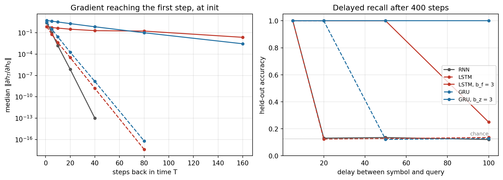
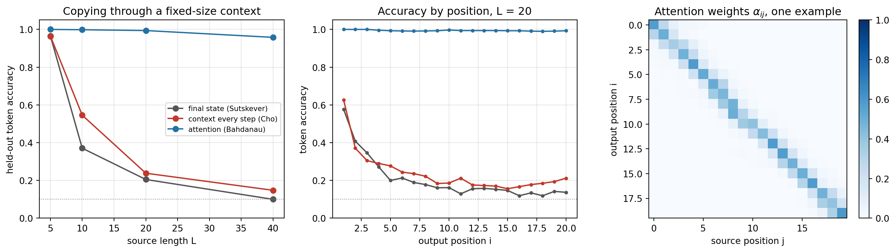
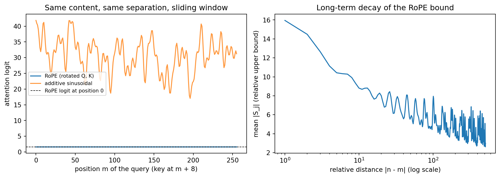
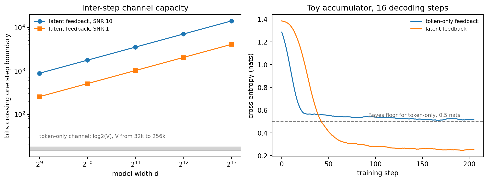

The transformer architecture, introduced in 2017, did not emerge from a vacuum. It was the culmination of two decades of increasingly sophisticated neural sequence models, each generation exposing the limitations of its predecessor and pointing toward what the next would need to solve. Understanding this lineage is not merely historical: the problems that motivated each transition—vanishing gradients, sequential bottlenecks, fixed-length representation, quadratic attention cost—remain live engineering concerns in every deployment of modern language and vision systems.
219.1 The CNN Era and Residual Connections
Convolutional neural networks demonstrated that depth was the key ingredient for representational power in vision tasks. AlexNet (Krizhevsky et al., 2012) showed that a five-layer convolutional network trained on GPU hardware could dramatically outperform hand-engineered features on ImageNet, reducing top-5 error from roughly 26% to 15.3%. VGGNet (Simonyan and Zisserman, 2014) pushed this further by using very small \(3 \times 3\) convolution kernels stacked in deep configurations of 16 to 19 layers, demonstrating that depth itself, rather than large receptive fields, drove performance.
The natural question was: why not go deeper? The empirical answer was troubling. Networks deeper than about 20 layers trained worse than shallower ones—not because of overfitting, but because of the vanishing gradient problem. During backpropagation, gradients are multiplied layer by layer via the chain rule. If each multiplication attenuates the signal, the gradient reaching early layers is exponentially smaller than the loss gradient at the output, making early-layer weights nearly untrainable.
He et al. (2016) solved this with the residual connection, a deceptively simple modification. Instead of learning a direct mapping \(\mathcal{H}(x)\) from input to output, a residual block learns only the residual \(\mathcal{F}(x) = \mathcal{H}(x) - x\), so the full transformation is
\[\mathcal{H}(x) = \mathcal{F}(x) + x.\]
The addition of the identity shortcut \(x\) creates an alternative path for gradient flow. During backpropagation through a residual block, the gradient of the loss \(\mathcal{L}\) with respect to the block input satisfies
The additive \(1\) in the gradient ensures that even if \(\partial \mathcal{F}/\partial x\) vanishes, a unit-magnitude gradient flows unimpeded through the skip connection back to all earlier layers. This allowed He et al. to train networks of 152 layers—ResNet-152—achieving 3.57% top-5 error on ImageNet, surpassing human-level performance on that benchmark. The deeper architectural insight is that residual connections make the optimization landscape substantially easier to traverse, a property later confirmed by loss landscape visualization work.
While CNNs reshaped computer vision, sequence modeling required a different inductive bias: the ability to process variable-length inputs where the order of elements carried meaning. Recurrent neural networks (RNNs) addressed this by maintaining a hidden state that accumulated information across time steps. The vanilla RNN update at time step \(t\) is
\[h_t = \tanh(W_h h_{t-1} + W_x x_t + b),\]
where \(h_t \in \mathbb{R}^d\) is the hidden state, \(x_t \in \mathbb{R}^m\) is the input, and \(W_h\), \(W_x\) are weight matrices. The same parameters are reused at every step, giving the model a compact representation of sequential inductive bias.
The fundamental weakness of the vanilla RNN mirrors the deep CNN problem: vanishing gradients through time. The gradient of the loss with respect to an early hidden state \(h_k\) involves the product
Each factor \(\partial h_t / \partial h_{t-1} = \text{diag}(\tanh'(\cdot)) W_h\) has singular values that, for most initializations, are less than one. Over a sequence of length \(T\), the product decays exponentially and early-step gradients vanish, preventing the model from learning long-range dependencies. Additionally, vanilla RNNs are inherently sequential: computing \(h_t\) requires \(h_{t-1}\), preventing parallelization across time steps during training.
219.2.1 Long Short-Term Memory
Hochreiter and Schmidhuber (1997) proposed the Long Short-Term Memory (LSTM) to address the vanishing gradient problem with a constant error carousel: a memory cell whose connection to itself has weight exactly one, guarded by multiplicative input and output gates that decide what is written into the cell and what is read out of it. The original cell had no forget gate, so its contents could only accumulate. Gers, Schmidhuber, and Cummins (2000) added the forget gate that lets the cell clear itself, and that version, which Greff et al. (2017) call the vanilla LSTM, is the one every modern library implements. The LSTM maintains two state vectors: a cell state \(c_t \in \mathbb{R}^d\) that acts as a long-term memory, and a hidden state \(h_t \in \mathbb{R}^d\) that serves as the working output. The update equations are
The crucial innovation is the cell state update \(c_t = f_t \odot c_{t-1} + i_t \odot \tilde{c}_t\). When the forget gate is close to one and the input gate is close to zero, \(c_t \approx c_{t-1}\): information flows forward through time with gradient magnitude near one. This creates a highway for gradient flow analogous to the residual connection in ResNet, but adaptive: the gates themselves are learned from data, allowing the network to decide what to retain, update, or erase.
Cho et al. (2014) introduced the Gated Recurrent Unit (GRU) in the same paper that proposed the RNN encoder-decoder for machine translation. The GRU keeps the LSTM’s central idea, that memory should travel forward along a gated and mostly additive path, but it drops the separate cell state and uses two gates instead of three:
The update gate does the job of the LSTM’s forget and input gates at once, under a constraint: the weight kept on the old state and the weight given to the new candidate sum to one, coordinate by coordinate. The new state is therefore a convex combination of the old state and a candidate in \((-1, 1)\), so it can never grow beyond that range. The LSTM’s cell state has no such limit, because \(f_t\) and \(i_t\) are independent and \(c_t\) can keep accumulating. The reset gate controls how much of the past the candidate may look at. As \(r_t \to 0\) the candidate depends on \(x_t\) alone, which lets a unit drop its history when a new segment of the sequence begins.
Two conventions matter before reading any GRU code. First, some papers, Chung et al. (2014) among them, write \(h_t = (1 - z_t) \odot h_{t-1} + z_t \odot \tilde{h}_t\). This is the same model with the gate relabeled as its complement, but it flips the sign that a “remember by default” bias needs. Second, PyTorch and NVIDIA cuDNN compute the candidate as
applying the reset gate after the recurrent matrix product rather than before it. The two forms are not algebraically equivalent. The library form exists for speed: in Cho et al.’s version, \(U_n (r_t \odot h_{t-1})\) cannot start until \(r_t\) is known, which forces two dependent matrix products per step, whereas in the library version \(U_r h_{t-1}\), \(U_z h_{t-1}\) and \(U_n h_{t-1}\) come out of a single stacked product \(U h_{t-1}\) computed before any gate is evaluated. The code in this chapter uses the library convention so that it can be checked against torch.nn.GRUCell to the last bit.
219.2.3 RNN, LSTM, and GRU Compared
All three cells solve the same problem: map an input \(x_t \in \mathbb{R}^m\) and the previous state to a new state, using the same parameters at every step. They differ in three things that determine almost everything else about them: what they cost, which path the gradient takes backward through time, and how that path behaves at initialization.
Table 219.1: Structural comparison of the three recurrent cells for input width \(m\) and hidden width \(d\). Parameter counts follow the PyTorch and cuDNN layout with two bias vectors per affine block.
Figure 219.1 draws one step of each cell. The thick nodes trace the carry, the path that state takes from one step to the next. In the vanilla RNN the carry passes through a weight matrix and a \(\tanh\) at every step. In the LSTM and the GRU it passes through a single elementwise multiplication by a gate and an addition, and the matrix products feed in from the side.
flowchart TB
r_x["x t"] --> r_mm["W_h h t-1 plus W_x x t plus b"]:::carry
r_h0["h t-1"]:::carry --> r_mm
r_mm --> r_tanh["tanh"]:::carry
r_tanh --> r_h1["h t"]:::carry
classDef carry stroke-width:3px
(a) Vanilla RNN, 1 block
flowchart TB
l_in["x t and h t-1"] --> l_mm["stacked matmul"]
l_mm --> l_f["forget f"]
l_mm --> l_i["input i"]
l_mm --> l_g["candidate g"]
l_mm --> l_o["output o"]
l_c0["c t-1"]:::carry --> l_keep["f times c t-1"]:::carry
l_f --> l_keep
l_i --> l_write["i times g"]
l_g --> l_write
l_keep --> l_c1["c t, the sum"]:::carry
l_write --> l_c1
l_c1 --> l_read["o times tanh c t"]
l_o --> l_read
l_read --> l_h1["h t"]
classDef carry stroke-width:3px
(b) LSTM, 4 blocks
flowchart TB
g_in["x t and h t-1"] --> g_mm["stacked matmuls"]
g_mm --> g_r["reset r"]
g_mm --> g_z["update z"]
g_mm --> g_n["candidate n, uses r"]
g_r --> g_n
g_h0["h t-1"]:::carry --> g_keep["z times h t-1"]:::carry
g_z --> g_keep
g_z --> g_write["one minus z, times n"]
g_n --> g_write
g_keep --> g_h1["h t, the sum"]:::carry
g_write --> g_h1
classDef carry stroke-width:3px
(c) GRU, 3 blocks
Figure 219.1: One time step of each recurrent cell. Thick nodes form the carry path from the previous state to the next state. Every matrix product in the LSTM and the GRU comes from a single stacked multiplication of the input and the previous hidden state, split into gate blocks.
219.2.3.1 Parameter count and cost
Every gate, and every candidate, is one affine map from the concatenated vector \([x_t; h_{t-1}] \in \mathbb{R}^{m+d}\) to \(\mathbb{R}^d\). That is a \(d \times (m + d)\) weight matrix plus a bias. PyTorch and cuDNN store two bias vectors per block, one on the input side and one on the recurrent side. The pair is redundant everywhere except the GRU candidate, where \(b_{hn}\) sits inside the reset gate and is no longer interchangeable with \(b_{in}\). One block therefore holds \(d(m + d) + 2d = dm + d^2 + 2d\) parameters, and a cell with \(G\) blocks holds
Matrix-multiply FLOPs per step and per example scale the same way, at \(2\,G\,d\,(m + d)\). So at equal hidden width the LSTM, GRU and RNN cost in the ratio \(4 : 3 : 1\), and a comparison “at the same hidden size” is not a comparison at the same budget. When \(d \gg m\) the cost is dominated by \(G d^2\), so a GRU matched to an LSTM’s parameter count gets a hidden width larger by about \(\sqrt{4/3} \approx 1.15\).
The same decomposition explains how fast kernels are organized. The input projection \(W x_t\) does not depend on \(h_{t-1}\), so for a whole sequence it is one large matrix product of shape \((BT \times m)(m \times Gd)\), fully parallel over time. Only the recurrent product \(U h_{t-1}\), of shape \((B \times d)(d \times Gd)\), has to wait for the previous step, and it is executed \(T\) times in sequence. Gating changes \(G\) but not that serial chain of length \(T\), which is why no recurrent cell design could remove the bottleneck described above.
219.2.3.2 Gradient paths: three Jacobians
The question that separates the three cells is what happens to \(\partial h_T / \partial h_k\) as \(T - k\) grows.
Vanilla RNN. With \(a_t = W_h h_{t-1} + W_x x_t + b\) and \(h_t = \tanh(a_t)\), the chain rule gives
Every entry of \(1 - h_t^2\) lies in \((0, 1]\), so the diagonal factor has spectral norm at most one and \(\| \partial h_t / \partial h_{t-1} \|_2 \le \|W_h\|_2 = \sigma_{\max}(W_h)\). Multiplying \(T - k\) such factors,
If \(\sigma_{\max}(W_h) < 1\) the gradient vanishes at a geometric rate fixed by one matrix, whatever the data. Conversely \(\sigma_{\max}(W_h) > 1\) is necessary for gradients to explode (Bengio et al., 1994; Pascanu et al., 2013). Every backward step goes through a full matrix product and a squashing derivative. There is no other route.
LSTM. The cell state depends on \(c_{t-1}\) directly, and also indirectly through the gates, which read \(h_{t-1} = o_{t-1} \odot \tanh(c_{t-1})\). Differentiating \(c_t = f_t \odot c_{t-1} + i_t \odot \tilde{c}_t\) with the product rule,
The bracketed terms each contain a weight matrix and behave like the RNN path. The direct term contains none. Following only the direct path from step \(k\) to step \(T\) gives
an elementwise product of numbers in \((0, 1)\) that the network chooses from data. For a unit whose forget gate stays near one, the gradient survives arbitrarily long horizons. That is the constant error carousel, and the 1997 cell is the special case \(f_t \equiv 1\).
The same formula shows why initialization matters. PyTorch draws every bias uniformly from \(\pm 1/\sqrt{d}\), so at initialization \(f_t \approx \sigma(0) = 0.5\) and the direct path decays like \(0.5^{T-k}\): about \(10^{-6}\) after twenty steps, no better than a vanilla RNN. Setting the forget-gate bias to a positive \(b_f\) starts the carousel near one instead. Gers et al. (2000) already used positive forget biases, and Jozefowicz et al. (2015) found that \(b_f = 1\) closes most of the gap between the LSTM and the GRU. With \(b_f = 3\), \(\sigma(3) \approx 0.953\), so the direct path keeps \(0.953^{50} \approx 0.09\) of the signal after 50 steps and \(0.953^{100} \approx 0.008\) after 100.
GRU. Differentiating \(h_t = z_t \odot h_{t-1} + (1 - z_t) \odot \tilde{h}_t\) with the product rule,
The update gate plays the role of the forget gate. To see every term, take one unit with recurrent weights \(u_z, u_r, u_n\) in the library convention, so that \(\tilde{h}_t = \tanh(w_n x_t + r_t u_n h_{t-1})\). Then \(\partial z_t / \partial h_{t-1} = z_t (1 - z_t) u_z\), \(\partial r_t / \partial h_{t-1} = r_t (1 - r_t) u_r\), and
The code below confirms this expression symbolically. The structural difference from the LSTM is the coupling. An LSTM unit can hold its memory (\(f_t \approx 1\)) and write new content (\(i_t \approx 1\)) in the same step, and it can keep something in \(c_t\) that it is not currently exposing through \(o_t\). A GRU unit that holds its state (\(z_t \approx 1\)) is, by construction, not writing. Weiss et al. (2018) show a concrete consequence: because \(c_t\) is unbounded, a finite-precision LSTM can implement a counter and recognize languages such as \(a^n b^n\), while the GRU, whose state is a bounded interpolation, cannot.
219.2.3.3 Experiment: cells, gradients and memory
The cell below makes each of these claims executable. Part A writes the three cells from scratch, copies the weights of torch.nn.RNNCell, LSTMCell and GRUCell into them, and checks that outputs and parameter counts match. Part B checks the GRU Jacobian above with SymPy. Part C measures \(\|\partial h_T / \partial h_0\|\) at initialization for horizons up to 160 steps. Part D trains each cell on delayed recall: read one of eight symbols, then read delay steps of noise, then report the symbol. Chance is \(1/8\). Each cell is trained with PyTorch’s default initialization and also with its carry gate biased toward remembering (\(b_f = 3\) for the LSTM, \(b_z = 3\) for the GRU).
Code
import numpy as npimport pandas as pdimport sympy as spimport torchimport torch.nn as nnimport matplotlib.pyplot as plt# === Part A: from-scratch cells reproduce torch.nn exactlydef rnn_step(x, h, W_ih, W_hh, b_ih, b_hh):return torch.tanh(x @ W_ih.T + b_ih + h @ W_hh.T + b_hh)def lstm_step(x, h, c, W_ih, W_hh, b_ih, b_hh): gates = x @ W_ih.T + b_ih + h @ W_hh.T + b_hh i, f, g, o = gates.chunk(4, dim=1) # PyTorch row order: input, forget, candidate, output i, f, g, o = torch.sigmoid(i), torch.sigmoid(f), torch.tanh(g), torch.sigmoid(o) c_new = f * c + i * greturn o * torch.tanh(c_new), c_newdef gru_step(x, h, W_ih, W_hh, b_ih, b_hh): xr, xz, xn = (x @ W_ih.T + b_ih).chunk(3, dim=1) # PyTorch row order: reset, update, new hr, hz, hn = (h @ W_hh.T + b_hh).chunk(3, dim=1) r = torch.sigmoid(xr + hr) z = torch.sigmoid(xz + hz) n = torch.tanh(xn + r * hn) # reset applied after the recurrent matmulreturn (1- z) * n + z * htorch.manual_seed(0)m, d, B =16, 32, 8x, h, c = torch.randn(B, m), torch.randn(B, d), torch.randn(B, d)cells = {"RNN": (nn.RNNCell(m, d), 1), "LSTM": (nn.LSTMCell(m, d), 4), "GRU": (nn.GRUCell(m, d), 3)}rows = []with torch.no_grad():for name, (cell, G) in cells.items(): p = (cell.weight_ih, cell.weight_hh, cell.bias_ih, cell.bias_hh)if name =="RNN": err = (rnn_step(x, h, *p) - cell(x, h)).abs().max()elif name =="LSTM": (h_s, c_s), (h_t, c_t) = lstm_step(x, h, c, *p), cell(x, (h, c)) err = torch.maximum((h_s - h_t).abs().max(), (c_s - c_t).abs().max())else: err = (gru_step(x, h, *p) - cell(x, h)).abs().max() rows.append({"cell": name,"gate blocks G": G,"G(dm + d^2 + 2d)": G * (d * m + d * d +2* d),"torch parameter count": sum(q.numel() for q in cell.parameters()),"max |scratch - torch|": f"{err.item():.1e}", })print(f"Cell equivalence and parameter counts at m = {m}, d = {d}")print(pd.DataFrame(rows).to_string(index=False))# === Part B: SymPy confirms the scalar GRU Jacobian derived in the texthp, xs, wz, uz, wr, ur, wn, un = sp.symbols("h_prev x w_z u_z w_r u_r w_n u_n", real=True)sig =lambda s: 1/ (1+ sp.exp(-s))z_s, r_s = sig(wz * xs + uz * hp), sig(wr * xs + ur * hp)n_s = sp.tanh(wn * xs + r_s * un * hp)h_s = (1- z_s) * n_s + z_s * hpJ_derived = (z_s+ (1- z_s) * (1- n_s**2) * un * (r_s + hp * r_s * (1- r_s) * ur)+ z_s * (1- z_s) * uz * (hp - n_s))print("\nSymPy: d h_t / d h_{t-1} minus the derived GRU Jacobian simplifies to", sp.simplify(sp.diff(h_s, hp) - J_derived))f_s, i_s, g_s, c_prev = sp.symbols("f i g c_prev", real=True)print("SymPy: direct LSTM carry d c_t / d c_{t-1} =", sp.diff(f_s * c_prev + i_s * g_s, c_prev))# === Part C: gradient reaching h_0 from the last step, at initializationARMS = [("RNN", None), ("LSTM", None), ("LSTM", 3.0), ("GRU", None), ("GRU", 3.0)]label =lambda kind, b: kind if b isNoneelsef"{kind}, {'b_f'if kind =='LSTM'else'b_z'} = {b:g}"def make_rnn(kind, d_in, d_hid, gate_bias=None): net = {"RNN": nn.RNN, "LSTM": nn.LSTM, "GRU": nn.GRU}[kind](d_in, d_hid, batch_first=True)if gate_bias isnotNone: # rows d:2d hold the LSTM forget gate and the GRU update gatewith torch.no_grad(): net.bias_ih_l0[d_hid:2* d_hid].fill_(gate_bias) net.bias_hh_l0[d_hid:2* d_hid].fill_(0.0)return netdef grad_to_h0(kind, gate_bias, T, d_hid=32, trials=20): norms = []for s inrange(trials): torch.manual_seed(100+ s) net = make_rnn(kind, d_hid, d_hid, gate_bias) h0 = torch.zeros(1, 1, d_hid, requires_grad=True) state = (h0, torch.zeros(1, 1, d_hid)) if kind =="LSTM"else h0 y, _ = net(torch.randn(1, T, d_hid), state) y[0, -1].sum().backward() norms.append(h0.grad.norm().item())returnfloat(np.median(norms))T_grid = [1, 5, 10, 20, 40, 80, 160]grads = pd.DataFrame({label(k, b): [grad_to_h0(k, b, T) for T in T_grid] for k, b in ARMS}, index=pd.Index(T_grid, name="T"))print("\nMedian ||dh_T / dh_0|| over 20 random initializations")print(grads.map(lambda v: f"{v:.1e}").to_string())# === Part D: delayed recall. Read a symbol, wait `delay` noise steps, report it.VOCAB, NOISE =8, 4def recall_batch(n, delay, gen): first = torch.randint(0, VOCAB, (n,), generator=gen) noise = torch.randint(VOCAB, VOCAB + NOISE, (n, delay), generator=gen)return torch.cat([first[:, None], noise], dim=1), firstclass Recall(nn.Module):def__init__(self, kind, gate_bias=None, d_hid=32):super().__init__()self.emb = nn.Embedding(VOCAB + NOISE, 16)self.rnn = make_rnn(kind, 16, d_hid, gate_bias)self.head = nn.Linear(d_hid, VOCAB)def forward(self, seq): y, _ =self.rnn(self.emb(seq))returnself.head(y[:, -1])def train_recall(kind, gate_bias, delay, steps=400, seed=0): torch.manual_seed(seed) gen = torch.Generator().manual_seed(seed) model = Recall(kind, gate_bias) opt = torch.optim.Adam(model.parameters(), lr=3e-3)for _ inrange(steps): seq, target = recall_batch(128, delay, gen) loss = nn.functional.cross_entropy(model(seq), target) opt.zero_grad() loss.backward() nn.utils.clip_grad_norm_(model.parameters(), 1.0) opt.step()with torch.no_grad(): seq, target = recall_batch(2000, delay, torch.Generator().manual_seed(999))return (model(seq).argmax(1) == target).float().mean().item()delays = [5, 20, 50, 100]acc = pd.DataFrame({label(k, b): [train_recall(k, b, L) for L in delays] for k, b in ARMS}, index=pd.Index(delays, name="delay"))print(f"\nHeld-out recall accuracy after 400 Adam steps (chance = {1/ VOCAB:.3f})")print(acc.round(3).to_string())# === Figurestyles = {"RNN": ("#555555", "-"), "LSTM": ("#c0392b", "--"), "LSTM, b_f = 3": ("#c0392b", "-"),"GRU": ("#2471a3", "--"), "GRU, b_z = 3": ("#2471a3", "-")}fig, axes = plt.subplots(1, 2, figsize=(11, 4))for name, (color, ls) in styles.items(): g = grads[name].replace(0.0, np.nan) axes[0].semilogy(g.index, g.values, ls, color=color, marker="o", ms=4, label=name) axes[1].plot(acc.index, acc[name], ls, color=color, marker="o", ms=4, label=name)axes[0].set(xlabel="steps back in time T", ylabel=r"median $\|\partial h_T / \partial h_0\|$", title="Gradient reaching the first step, at init")axes[1].axhline(1/ VOCAB, color="gray", lw=0.8, ls=":")axes[1].text(100, 1/ VOCAB +0.02, "chance", ha="right", va="bottom", fontsize=8, color="gray")axes[1].set(xlabel="delay between symbol and query", ylabel="held-out accuracy", title="Delayed recall after 400 steps", ylim=(0, 1.05))axes[1].legend(fontsize=8, loc="center right")for ax in axes: ax.grid(alpha=0.3)plt.tight_layout()plt.show()
Cell equivalence and parameter counts at m = 16, d = 32
cell gate blocks G G(dm + d^2 + 2d) torch parameter count max |scratch - torch|
RNN 1 1600 1600 6.0e-08
LSTM 4 6400 6400 1.2e-07
GRU 3 4800 4800 1.2e-07
SymPy: d h_t / d h_{t-1} minus the derived GRU Jacobian simplifies to 0
SymPy: direct LSTM carry d c_t / d c_{t-1} = f
Median ||dh_T / dh_0|| over 20 random initializations
RNN LSTM LSTM, b_f = 3 GRU GRU, b_z = 3
T
1 2.6e+00 7.4e-01 7.4e-01 3.0e+00 5.4e+00
5 1.0e-01 6.1e-02 5.4e-01 3.3e-01 4.3e+00
10 1.5e-03 4.2e-03 4.6e-01 2.6e-02 3.3e+00
20 7.1e-07 3.2e-05 3.2e-01 1.8e-04 1.9e+00
40 9.7e-14 1.5e-09 2.0e-01 1.4e-08 7.0e-01
80 0.0e+00 4.0e-18 1.7e-01 6.2e-17 1.0e-01
160 0.0e+00 0.0e+00 2.3e-02 0.0e+00 2.9e-03
Held-out recall accuracy after 400 Adam steps (chance = 0.125)
RNN LSTM LSTM, b_f = 3 GRU GRU, b_z = 3
delay
5 1.000 1.000 1.00 1.000 1.0
20 0.131 0.124 1.00 1.000 1.0
50 0.135 0.127 1.00 0.122 1.0
100 0.120 0.135 0.25 0.128 1.0

Figure 219.2: Left: median norm of the gradient that reaches the initial hidden state from step T, over 20 random initializations; missing points have collapsed to exactly zero in float32. Right: held-out accuracy on delayed recall after 400 Adam steps, with the dotted line at chance. Dashed lines are PyTorch’s default initialization; solid lines bias the carry gate toward remembering.
Part A shows that the three cells are exactly the equations above. The from-scratch versions agree with PyTorch to about \(10^{-7}\), which is float32 rounding, and the parameter counts are \(1{,}600\), \(6{,}400\) and \(4{,}800\) at \(m = 16\), \(d = 32\), matching \(G(dm + d^2 + 2d)\) for \(G = 1, 4, 3\). Part B returns zero for the difference between SymPy’s derivative and the hand-derived GRU Jacobian.
Part C is the gradient argument made visible in Figure 219.2. At \(T = 20\), the gradient reaching \(h_0\) is about \(7 \times 10^{-7}\) for the vanilla RNN, \(3 \times 10^{-5}\) for the default LSTM and \(2 \times 10^{-4}\) for the default GRU: gating alone does not help when the carry gate starts at one half. Biasing the carry gate changes the picture by five to six orders of magnitude, to \(0.32\) for the LSTM with \(b_f = 3\) and \(1.9\) for the GRU with \(b_z = 3\). At \(T = 80\) the default LSTM and GRU are down to about \(10^{-17}\) and the vanilla RNN has collapsed to exactly zero in float32, while the biased cells still deliver \(0.17\) and \(0.10\). At \(T = 160\) all three default cells are at zero.
Part D shows the same ranking in a trained model. Every cell solves recall at a delay of 5. At a delay of 20, the vanilla RNN and the default LSTM sit at chance (\(0.131\) and \(0.124\)), while the default GRU is perfect. At 50 only the two biased cells succeed. At 100 the biased GRU is still perfect and the biased LSTM has started to learn (\(0.25\)) but has not finished within 400 steps. This is one seed, one width and one training budget, so it ranks initializations more than architectures. The default GRU beating the default LSTM is consistent with the comparisons of Chung et al. (2014), and the large effect of the carry bias is consistent with Jozefowicz et al. (2015), who found that a forget bias of one removes most of that gap. Greff et al. (2017) reached a matching conclusion from a large ablation study: no LSTM variant reliably beat the vanilla LSTM, and the forget gate and the output activation were its most important components.
219.2.3.4 Reference implementation
The same three single-step cells in all three languages, written from the equations rather than from a library. The weights are a deterministic function of their indices instead of random draws, so the three tabs print identical numbers. The GRU uses the library convention for the reset gate, and the recurrent bias is set to zero so one bias vector per block suffices.
usingPrintfconst M, D =3, 2# input and hidden widths# Fused [W_x W_h] of size (G*D, M+D) and a bias of length G*D, deterministic.functionweights(G) W = [0.5*sin(0.3* r +0.7* c) for r in1:G*D, c in1:M+D] b = [0.1*cos(k) for k in1:G*D]return W, bendsigmoid(s) =1/ (1+exp(-s))rnn_step(x, h, W, b) =tanh.(W *vcat(x, h) .+ b)functionlstm_step(x, h, c, W, b) a = W *vcat(x, h) .+ b i, f =sigmoid.(a[1:D]), sigmoid.(a[D+1:2D]) g, o =tanh.(a[2D+1:3D]), sigmoid.(a[3D+1:4D]) c_new = f .* c .+ i .* greturn o .*tanh.(c_new), c_newendfunctiongru_step(x, h, W, b) ax = W[:, 1:M] * x .+ b ah = W[:, M+1:end] * h r =sigmoid.(ax[1:D] .+ ah[1:D]) z =sigmoid.(ax[D+1:2D] .+ ah[D+1:2D]) n =tanh.(ax[2D+1:3D] .+ r .* ah[2D+1:3D])return (1.- z) .* n .+ z .* hendx = [sin(j) for j in1:M]h = [0.5*cos(j) for j in1:D]c = [0.2* j -0.3 for j in1:D]fmt(v) ="["*join([@sprintf("%.6f", t) for t in v], ", ") *"]"h_lstm, c_lstm =lstm_step(x, h, c, weights(4)...)println("RNN h_t = ", fmt(rnn_step(x, h, weights(1)...)))println("LSTM h_t = ", fmt(h_lstm), " c_t = ", fmt(c_lstm))println("GRU h_t = ", fmt(gru_step(x, h, weights(3)...)))
const M:usize=3;// input widthconst D:usize=2;// hidden width/// Fused [W_x | W_h] as (G*D) rows of length M+D, plus a bias of length G*D.fn weights(g:usize) -> (Vec<Vec<f64>>,Vec<f64>) {let w = (0..g * D).map(|r| (0..M + D).map(|c|0.5* (0.3* (r +1) asf64+0.7* (c +1) asf64).sin()).collect()).collect();let b = (0..g * D).map(|k|0.1* (k asf64+1.0).cos()).collect(); (w, b)}fn sigmoid(s:f64) ->f64{1.0/ (1.0+ (-s).exp())}/// Row-wise dot product of W[.., cols] with v, plus an optional bias.fn affine(w:&[Vec<f64>], cols:std::ops::Range<usize>, v:&[f64], b:Option<&[f64]>) ->Vec<f64>{ w.iter().enumerate().map(|(r, row)|{let dot:f64= row[cols.clone()].iter().zip(v).map(|(a, x)| a * x).sum(); dot + b.map_or(0.0,|b| b[r])}).collect()}fn rnn_step(x:&[f64], h:&[f64], w:&[Vec<f64>], b:&[f64]) ->Vec<f64>{let u:Vec<f64>= x.iter().chain(h).copied().collect(); affine(w,0..M + D,&u,Some(b)).into_iter().map(f64::tanh).collect()}fn lstm_step(x:&[f64], h:&[f64], c:&[f64], w:&[Vec<f64>], b:&[f64]) -> (Vec<f64>,Vec<f64>) {let u:Vec<f64>= x.iter().chain(h).copied().collect();let a = affine(w,0..M + D,&u,Some(b));let (mut h_new,mut c_new) = (vec![0.0; D],vec![0.0; D]);for k in0..D {let (i, f) = (sigmoid(a[k]), sigmoid(a[D + k]));let (g, o) = (a[2* D + k].tanh(), sigmoid(a[3* D + k])); c_new[k] = f * c[k] + i * g; h_new[k] = o * c_new[k].tanh();} (h_new, c_new)}fn gru_step(x:&[f64], h:&[f64], w:&[Vec<f64>], b:&[f64]) ->Vec<f64>{let ax = affine(w,0..M, x,Some(b));let ah = affine(w, M..M + D, h,None); (0..D).map(|k|{let r = sigmoid(ax[k] + ah[k]);let z = sigmoid(ax[D + k] + ah[D + k]);let n = (ax[2* D + k] + r * ah[2* D + k]).tanh(); (1.0- z) * n + z * h[k]}).collect()}fn fmt(v:&[f64]) ->String{format!("[{}]", v.iter().map(|t|format!("{:.6}", t)).collect::<Vec<_>>().join(", "))}fn main() {let x:Vec<f64>= (1..=M).map(|j| (j asf64).sin()).collect();let h:Vec<f64>= (1..=D).map(|j|0.5* (j asf64).cos()).collect();let c:Vec<f64>= (1..=D).map(|j|0.2* j asf64-0.3).collect();let (w1, b1) = weights(1);let (w4, b4) = weights(4);let (w3, b3) = weights(3);let (h_lstm, c_lstm) = lstm_step(&x,&h,&c,&w4,&b4);println!("RNN h_t = {}", fmt(&rnn_step(&x,&h,&w1,&b1)));println!("LSTM h_t = {} c_t = {}", fmt(&h_lstm), fmt(&c_lstm));println!("GRU h_t = {}", fmt(&gru_step(&x,&h,&w3,&b3)));}
All three print RNN h_t = [0.751268, 0.695210], LSTM h_t = [0.105662, 0.085257] with c_t = [0.222789, 0.219058], and GRU h_t = [0.314690, -0.046834].
219.2.3.5 Choosing among them
Vanilla RNN. Use it only when the dependencies you need span a handful of steps, or as a baseline. Its gradient bound \(\sigma_{\max}(W_h)^{T-k}\) has no data-dependent escape route.
GRU. A good default when the parameter budget is tight. At equal width it has three quarters of the LSTM’s parameters and per-step FLOPs, and its bounded state makes it somewhat easier to train.
LSTM. Prefer it when the task needs memory the model does not expose at every step, or unbounded quantities such as counts, which the separate and unbounded cell state can represent (Weiss et al., 2018).
For all three: bias the carry gate toward remembering at initialization (\(b_f\) between 1 and 3 for the LSTM, a positive \(b_z\) for the GRU in the convention used here), clip the gradient norm (Pascanu et al., 2013), and compare cells at equal parameter count rather than equal hidden width.
Despite LSTMs’ success on tasks requiring hundreds of time steps of memory—machine translation, speech recognition, language modeling—the sequential computation bottleneck remained a fundamental architectural constraint. Training on long sequences required processing tokens one at a time, making parallelization across the sequence dimension impossible and keeping wall-clock training times high even with GPU hardware.
219.3 Sequence to Sequence: The Encoder-Decoder
A recurrent cell maps a sequence to a sequence of states of the same length. Translation, summarization and speech recognition need something else: an output sequence whose length and order are not tied to the input’s. In 2014 two groups solved this the same way, by giving the problem to two recurrent networks. An encoder reads the source \(x_1, \dots, x_L\) and summarizes it, and a decoder generates the target \(y_1, \dots, y_{T'}\) one token at a time from that summary. Cho et al. (2014) called it the RNN encoder-decoder and built it from GRUs. Sutskever, Vinyals, and Le (2014) called it sequence to sequence learning and built it from deep LSTMs. The name seq2seq comes from the second paper, but the two designs differ in one detail that turns out to matter.
219.3.1 The model
The encoder is an ordinary recurrent network run over the source,
and its job ends by handing over one fixed-size vector, the context\(c = h_L \in \mathbb{R}^d\). The decoder defines the conditional distribution of the target by the chain rule of probability,
where each factor is computed by a second recurrent network. The two papers wire \(c\) into that network differently.
Sutskever et al. The context only initializes the decoder: \(s_0 = c\), then \(s_i = f_{\text{dec}}(y_{i-1}, s_{i-1})\) and \(p(y_i \mid \cdot) = \mathrm{softmax}(W_o s_i)\). After the first step the decoder can reach the source only through whatever survives in its own state.
Cho et al. The context is an input at every step and to the output layer: \(s_0 = \tanh(V c)\), then \(s_i = f_{\text{dec}}(y_{i-1}, s_{i-1}, c)\) and \(p(y_i \mid \cdot) = g(s_i, y_{i-1}, c)\). The decoder does not have to carry the source forward in its own state, but it still sees the same vector \(c\) at every step.
Training maximizes the log-likelihood of reference pairs with teacher forcing: the decoder is fed the true previous token \(y_{i-1}^\ast\) rather than its own guess, so all \(T'\) factors are scored against the reference in one pass,
At inference the reference is gone, so the decoder feeds back its own predictions. Finding the most probable output exactly would mean searching \(|V|^{T'}\) sequences, so systems use greedy decoding or beam search, which keeps the \(k\) best partial outputs at each step. The gap between training on reference prefixes and testing on predicted ones is known as exposure bias: an early mistake at test time puts the decoder in a state it never saw in training.
flowchart TB
subgraph ENC["Encoder RNN"]
direction LR
e1["h1, reads x1"] --> e2["h2, reads x2"] --> e3["h L, reads x L"]
end
C["context c, one vector of size d"]
subgraph DEC["Decoder RNN"]
direction LR
s1["s1, emits y1"] --> s2["s2, emits y2"] --> s3["s T, emits y T"]
end
ENC -->|"c is h L"| C
C -->|"initial state"| DEC
C -.->|"Cho: also an input at every step"| DEC
style ENC fill:#f3f5fa,stroke:#9aa5b8,color:#1f2328
style DEC fill:#f3f5fa,stroke:#9aa5b8,color:#1f2328
Figure 219.3: The RNN encoder-decoder. The solid arrow into the decoder is the Sutskever et al. wiring, where the context only initializes the decoder. The dashed arrow is added by Cho et al., who also feed the same context to every decoder step. At each step the decoder reads its own previous output. Either way, everything the decoder knows about the source passes through one d-dimensional vector.
219.3.2 Why a fixed-size context fails on long inputs
Everything the decoder learns about the source must pass through \(c \in \mathbb{R}^d\), whatever \(L\) is. Two separate costs follow. The first is capacity. Copying \(L\) symbols from a vocabulary of size \(V\) requires \(L \log_2 V\) bits, a demand that grows linearly in \(L\) while \(d\) stays fixed. The second, which bites long before capacity runs out, is optimization. The gradient that tells the encoder how to store \(x_j\) starts at the loss for \(y_i\) and travels back \(i\) decoder steps and then \(L - j\) encoder steps, so every source token sits at a distance of order \(L\) from the output that needs it. That is the same long product of Jacobians analyzed for the vanilla RNN above, now applied to the source-target pair. Sutskever et al. made the problem visible with a simple trick: they fed the source in reverse. Reversal leaves the average distance between a source word and its translation unchanged, but it puts the first few source words next to the first few target words, and the shortened minimal path alone raised their BLEU score substantially. Cho, van Merrienboer, Bahdanau, and Bengio (2014) then measured the failure directly: the encoder-decoder’s translation quality fell steadily as sentence length grew.
The cell below reproduces that failure on the cleanest possible task: copy a random string of \(L\) digits. Three decoders share the same GRU encoder of width \(d = 64\) and the same training budget of 600 Adam steps. Two use a fixed context, wired as in Sutskever et al. and as in Cho et al. The third uses the attention mechanism of the next section, which recomputes a context for each output from all encoder states. A fixed context has to hold 66 bits at \(L = 20\) and 133 at \(L = 40\), still far below what 64 floating-point numbers can store, so any failure is one of learning, not of raw capacity.
Code
import numpy as npimport pandas as pdimport torchimport torch.nn as nnimport torch.nn.functional as Fimport matplotlib.pyplot as pltVOCAB, BOS =10, 10# source symbols 0..9; the decoder's start token is 10EMB, HID =32, 64class Seq2Seq(nn.Module):# mode "final": Sutskever et al. The encoder's last state only initializes the decoder.# mode "context": Cho et al. The same fixed vector is also fed to every decoder step and the output layer.# mode "attention": Bahdanau et al. A fresh weighted sum of all encoder states at every decoder step.def__init__(self, mode):super().__init__()self.mode = modeself.src_emb = nn.Embedding(VOCAB, EMB)self.tgt_emb = nn.Embedding(VOCAB +1, EMB)self.encoder = nn.GRU(EMB, HID, batch_first=True) extra =0if mode =="final"else HIDself.decoder = nn.GRUCell(EMB + extra, HID)self.out = nn.Linear(HID + extra, VOCAB)if mode =="attention": # additive score e_ij = v^T tanh(W_s s_{i-1} + W_h h_j)self.W_s = nn.Linear(HID, HID, bias=False)self.W_h = nn.Linear(HID, HID, bias=False)self.v = nn.Linear(HID, 1, bias=False)def step(self, y_prev, s, H, keys): y_emb =self.tgt_emb(y_prev)ifself.mode =="final": s =self.decoder(y_emb, s)returnself.out(s), s, Noneifself.mode =="context": c, a = H[:, -1], Noneelse: e =self.v(torch.tanh(self.W_s(s)[:, None, :] + keys)).squeeze(-1) # (B, L) a = torch.softmax(e, dim=1) c = torch.bmm(a[:, None, :], H).squeeze(1) s =self.decoder(torch.cat([y_emb, c], 1), s)returnself.out(torch.cat([s, c], 1)), s, adef encode(self, src): H, h_last =self.encoder(self.src_emb(src))return H, h_last[0], (self.W_h(H) ifself.mode =="attention"elseNone)def forward(self, src, tgt_in): # teacher forcing: the decoder reads the true previous symbol H, s, keys =self.encode(src) logits = []for i inrange(tgt_in.shape[1]): logit, s, _ =self.step(tgt_in[:, i], s, H, keys) logits.append(logit)return torch.stack(logits, 1)@torch.no_grad()def greedy(self, src): # inference: the decoder reads its own previous prediction H, s, keys =self.encode(src) y = torch.full((src.shape[0],), BOS, dtype=torch.long) preds, attn = [], []for _ inrange(src.shape[1]): logit, s, a =self.step(y, s, H, keys) y = logit.argmax(1) preds.append(y) attn.append(a)return torch.stack(preds, 1), (torch.stack(attn, 1) ifself.mode =="attention"elseNone)def train_copy(mode, L, steps=600, seed=0): torch.manual_seed(seed) gen = torch.Generator().manual_seed(seed) model = Seq2Seq(mode) opt = torch.optim.Adam(model.parameters(), lr=3e-3)for _ inrange(steps): src = torch.randint(0, VOCAB, (64, L), generator=gen) tgt_in = torch.cat([torch.full((64, 1), BOS), src[:, :-1]], 1) loss = F.cross_entropy(model(src, tgt_in).reshape(-1, VOCAB), src.reshape(-1)) opt.zero_grad() loss.backward() nn.utils.clip_grad_norm_(model.parameters(), 1.0) opt.step() src = torch.randint(0, VOCAB, (1000, L), generator=torch.Generator().manual_seed(999)) pred, attn = model.greedy(src)return model, src, pred, attnMODES = {"final": "final state (Sutskever)", "context": "context every step (Cho)","attention": "attention (Bahdanau)"}lengths = [5, 10, 20, 40]rows, per_position, example_attn = [], {}, Nonefor L in lengths:for mode, name in MODES.items(): model, src, pred, attn = train_copy(mode, L) correct = (pred == src).float() rows.append({"length": L, "decoder": name, "token acc": correct.mean().item(),"sequence acc": correct.prod(1).mean().item(),"parameters": sum(p.numel() for p in model.parameters())})if L ==20: per_position[name] = correct.mean(0).numpy()if mode =="attention": example_attn = attn[0].numpy()res = pd.DataFrame(rows)print("Parameters per model:", res.groupby("decoder", sort=False)["parameters"].first().to_dict())print("\nToken accuracy on held-out copies (chance = 0.100)")print(res.pivot(index="length", columns="decoder", values="token acc")[list(MODES.values())].round(3).to_string())print("\nWhole-sequence accuracy")print(res.pivot(index="length", columns="decoder", values="sequence acc")[list(MODES.values())].round(3).to_string())diag = example_attn.argmax(1)print(f"\nAttention at L = 20: output i puts its largest weight on source i for "f"{(diag == np.arange(20)).mean():.0%} of positions; mean peak weight {example_attn.max(1).mean():.2f}")colors = {"final state (Sutskever)": "#555555", "context every step (Cho)": "#c0392b","attention (Bahdanau)": "#2471a3"}fig, axes = plt.subplots(1, 3, figsize=(14, 4))for name, color in colors.items(): sub = res[res["decoder"] == name] axes[0].plot(sub["length"], sub["token acc"], "o-", color=color, label=name) axes[1].plot(np.arange(1, 21), per_position[name], "o-", ms=3, color=color, label=name)for ax in axes[:2]: ax.axhline(1/ VOCAB, color="gray", lw=0.8, ls=":") ax.set_ylim(0, 1.05) ax.grid(alpha=0.3)axes[0].set(xlabel="source length L", ylabel="held-out token accuracy", title="Copying through a fixed-size context")axes[0].legend(fontsize=8)axes[1].set(xlabel="output position i", ylabel="token accuracy", title="Accuracy by position, L = 20")im = axes[2].imshow(example_attn, cmap="Blues", vmin=0, vmax=1)axes[2].set(xlabel="source position j", ylabel="output position i", title=r"Attention weights $\alpha_{ij}$, one example")fig.colorbar(im, ax=axes[2], fraction=0.046)plt.tight_layout()plt.show()
Parameters per model: {'final state (Sutskever)': 38954, 'context every step (Cho)': 51882, 'attention (Bahdanau)': 60138}
Token accuracy on held-out copies (chance = 0.100)
decoder final state (Sutskever) context every step (Cho) attention (Bahdanau)
length
5 0.964 0.964 1.000
10 0.371 0.546 0.998
20 0.205 0.238 0.994
40 0.100 0.148 0.958
Whole-sequence accuracy
decoder final state (Sutskever) context every step (Cho) attention (Bahdanau)
length
5 0.919 0.914 1.000
10 0.017 0.066 0.997
20 0.000 0.000 0.973
40 0.000 0.000 0.867
Attention at L = 20: output i puts its largest weight on source i for 95% of positions; mean peak weight 0.50

Figure 219.4: Left: held-out token accuracy for copying L random digits, for two fixed-context decoders and an attention decoder sharing one GRU encoder; the dotted line is chance. Middle: accuracy by output position at L = 20. Right: the attention decoder’s weights for one held-out example at L = 20, which recover the copy alignment without supervision.
At \(L = 5\) all three decoders copy almost perfectly, and the two fixed-context decoders are indistinguishable at \(0.964\) token accuracy. By \(L = 10\) the fixed-context decoders have fallen to \(0.371\) (Sutskever wiring) and \(0.546\) (Cho wiring), and fewer than 7% of strings come out exactly right. At \(L = 20\) they reach \(0.205\) and \(0.238\), and at \(L = 40\) they are at or near the chance level of \(0.100\). The attention decoder holds \(0.994\) at \(L = 20\) and \(0.958\) at \(L = 40\), with \(97\%\) and \(87\%\) of whole strings copied exactly. Feeding \(c\) to every step, as Cho et al. did, helps a little at every length but does not change the shape of the curve, because the decoder still sees one vector.
The parameter counts rule out the obvious objection. The models have \(38{,}954\), \(51{,}882\) and \(60{,}138\) parameters, so the attention decoder is about 1.5 times the size of the Sutskever wiring, while the error rate at \(L = 20\) differs by a factor of more than a hundred. Extra parameters are not what fixes the problem. A direct path from each output to the source is.
The middle panel shows how the fixed-context models fail. They recover the first one or two positions about 60% of the time and fall to 15 to 20% on the rest: they learn to store what the loss rewards earliest and give up on the bulk of the string. The right panel shows what the attention decoder learned instead. Nobody told it that output \(i\) should copy source \(i\), yet output \(i\) puts its largest weight on source position \(i\) for \(95\%\) of positions in this example. The alignment is learned entirely from the copy loss, and it is the same kind of soft alignment that Bahdanau et al. found between English and French words.
219.3.3 How the encoder-decoder compares
Table 219.2 places the two fixed-context designs next to their successors. Read down a column and the trend is the one this chapter keeps returning to: each step shortens the path between a source position and the output that depends on it.
Table 219.2: The encoder-decoder family. The path length counts the sequential steps a signal from source position j must cross to reach output position i, in the sense of Vaswani et al.’s maximum path length.
Seq2seq, Sutskever et al. (2014)
RNN encoder-decoder, Cho et al. (2014)
Attention, Bahdanau et al. (2015)
Transformer, Vaswani et al. (2017)
Encoder
4-layer LSTM, source reversed
GRU
bidirectional GRU
self-attention stack
What the decoder sees of the source
\(c = h_L\), as its initial state only
the same \(c\) at every step
a new \(c_i = \sum_j \alpha_{ij} h_j\) at every step
cross-attention over all encoder outputs in every layer
Source memory available to the decoder
\(d\) numbers
\(d\) numbers
\(L \times d\) numbers
\(L \times d\) encoder outputs, read by every decoder layer
Path from \(x_j\) to \(y_i\)
\(O(L + i)\) recurrent steps
\(O(L)\) encoder steps
\(O(1)\) through attention
\(O(1)\)
Source access cost per output token
\(O(1)\)
\(O(1)\)
\(O(L)\)
\(O(L)\) per layer
Parallel over positions in training
no
no
no
yes, encoder fully and decoder with a causal mask
The table also shows what stayed constant. Every model in it is an encoder-decoder trained by maximum likelihood with teacher forcing, factorizes \(p(y \mid x)\) by the chain rule, and decodes autoregressively with greedy or beam search. The 2017 transformer kept that entire frame and replaced only what sits inside the boxes of Figure 219.3. The single most important change came first, in 2015, and it is the subject of the next section: letting the decoder look back at every encoder state instead of one summary.
The same idea appears three times in this chapter in different directions. The residual connection gives the gradient an identity path through depth. The LSTM and GRU carry gives it a gated, nearly identity path through time. Attention gives it a direct path across positions, from any output straight to any input. The transformer is the architecture that uses the first and the third everywhere and drops the second.
219.4 The Attention Breakthrough
The next architectural advance came not from a new recurrent cell design but from reconsidering how the encoder’s information should be delivered to the decoder. In the encoder-decoder of the previous section, the encoder compresses the source into a single fixed-length vector, which the decoder uses as its initial state or reads at every step. This bottleneck forces the model to encode all information about an arbitrarily long source sentence into a vector of fixed dimensionality, a task that becomes increasingly difficult as sentence length grows, as Figure 219.4 shows.
Bahdanau et al. (2015) introduced a soft attention mechanism that allowed the decoder to dynamically query the entire sequence of encoder hidden states at each decoding step. Let \(h_j\) denote the \(j\)-th encoder hidden state and \(s_{i-1}\) the decoder hidden state at step \(i-1\). The alignment score
\[e_{ij} = a(s_{i-1}, h_j)\]
is computed by a small feedforward network \(a\) that measures how well the input position \(j\) matches the current decoding context. Normalizing these scores with softmax gives attention weights
is a weighted combination of all encoder hidden states, with weights concentrated on the positions most relevant to predicting the next output token. The decoder then conditions on \(c_i\) rather than a single fixed vector. Figure 219.5 draws one decoding step; set against Figure 219.3, the only structural change is that the single context arrow has become a fan of arrows from every encoder state, reweighted at every step.
flowchart TB
subgraph ENC["Encoder states, all kept"]
direction LR
h1["h1"]
h2["h2"]
h3["h3"]
end
sprev["decoder state s i-1"] --> score["score e ij for every j"]
h1 --> score
h2 --> score
h3 --> score
score --> soft["softmax over j gives alpha ij"]
soft --> ctx["context c i, weighted sum of h j"]
h1 --> ctx
h2 --> ctx
h3 --> ctx
ctx --> snew["decoder state s i"]
sprev --> snew
yprev["previous token y i-1"] --> snew
snew --> yout["output y i"]
ctx --> yout
style ENC fill:#f3f5fa,stroke:#9aa5b8,color:#1f2328
Figure 219.5: One decoding step of the attention encoder-decoder. The previous decoder state scores every encoder state, a softmax turns the scores into weights, and the weighted sum becomes this step’s context. The next step repeats the scoring with its own state, so each output reads a different mixture of the source.
This mechanism solved the bottleneck problem while introducing a useful side effect: the attention weights \(\alpha_{ij}\) are interpretable as soft alignments between source and target positions, providing a window into what the model is attending to. Empirically, Bahdanau et al. showed that attention-equipped seq2seq models maintained translation quality on long sentences where fixed-vector seq2seq degraded sharply.
The attention computation as formulated still required an underlying RNN to produce the encoder states \(h_j\). The transformer would eliminate that dependency entirely.
219.5 The Transformer
Vaswani et al. (2017) made the decisive observation: if attention is powerful enough to replace the fixed-length bottleneck in seq2seq, it may be powerful enough to replace the recurrent computation entirely. Their architecture, presented in “Attention is All You Need,” relies exclusively on attention and feedforward layers, achieving superior translation quality while being substantially more parallelizable.
219.5.1 Scaled Dot-Product Attention
The core operation packs queries \(Q \in \mathbb{R}^{n \times d_k}\), keys \(K \in \mathbb{R}^{m \times d_k}\), and values \(V \in \mathbb{R}^{m \times d_v}\) into a single matrix computation:
In self-attention, queries, keys, and values are all derived from the same input sequence \(X \in \mathbb{R}^{n \times d}\) via learned linear projections:
\[Q = X W_Q, \quad K = X W_K, \quad V = X W_V,\]
with \(W_Q, W_K \in \mathbb{R}^{d \times d_k}\) and \(W_V \in \mathbb{R}^{d \times d_v}\). The scaling factor \(1/\sqrt{d_k}\) prevents dot products from growing large in magnitude as \(d_k\) increases, which would push the softmax into regions with vanishingly small gradients.
The key property of self-attention is that every position attends directly to every other position in a single layer, giving a path length of \(\mathcal{O}(1)\) between any two positions in the sequence. By contrast, an RNN requires \(\mathcal{O}(n)\) steps to propagate information from position 1 to position \(n\). This \(\mathcal{O}(1)\) path length is precisely what allows transformers to learn long-range dependencies that RNNs struggle with.
The computational cost of self-attention is \(\mathcal{O}(n^2 d)\) per layer, since the \(n \times n\) attention matrix must be formed explicitly. This quadratic dependence on sequence length became a significant research focus as practitioners applied transformers to longer contexts, motivating efficient attention variants such as sparse attention, linear attention, and FlashAttention.
219.5.2 Multi-Head Attention
Rather than computing a single attention function, the transformer computes \(h\) attention functions in parallel, each with its own projection matrices:
where \(\text{head}_i = \text{Attention}(Q W_{Q_i}, K W_{K_i}, V W_{V_i})\) and \(W_O \in \mathbb{R}^{h d_v \times d}\) projects the concatenated outputs back to the model dimension. Multiple heads allow the model to simultaneously attend to information from different representation subspaces at different positions—one head might learn syntactic dependencies while another captures semantic similarity.
219.5.3 Positional Encoding
Because self-attention is permutation-equivariant (reordering the rows of \(X\) permutes the rows of the output identically), the model has no built-in sense of position. Vaswani et al. inject positional information by adding sinusoidal encodings to the input embeddings:
where \(pos\) is the sequence position and \(i\) indexes the embedding dimension. Different dimensions oscillate at different frequencies, allowing the model to attend to absolute positions via individual dimensions and to relative positions through linear combinations, since \(PE_{pos+k}\) can be expressed as a linear function of \(PE_{pos}\).
219.5.4 Rotary Position Embeddings
The sinusoidal scheme of Section 4.3 has a structural weakness that only became apparent once transformers were pushed to long contexts. The encoding is added to the input embeddings once, at the bottom of the stack. Position therefore enters the attention logit only through whatever survives of that additive perturbation after it has been mixed by every projection and residual block below the layer doing the attending. The logit \(q_m^\top k_n\) is not, in general, a function of the offset \(m - n\) alone: it also depends on where the pair sits in absolute terms, and the dependence is learned rather than imposed.
Su et al. (2024) resolve this by encoding position multiplicatively instead of additively. Their rotary position embedding (RoPE) leaves the input embeddings untouched and instead rotates the query and key vectors inside every attention layer, by an angle proportional to the token’s absolute position. Partition a head vector \(x \in \mathbb{R}^{d}\) into \(d/2\) consecutive coordinate pairs, and assign to pair \(i \in \{0, \dots, d/2 - 1\}\) the frequency
\[\theta_i = b^{-2i/d}, \qquad b = 10000,\]
the same geometric frequency ladder used by the sinusoidal encoding. For a token at position \(m\), define the block-diagonal orthogonal matrix
RoPE replaces \(q_m\) by \(R_{\Theta, m} q_m\) and \(k_n\) by \(R_{\Theta, n} k_n\), leaving \(V\) alone.
The payoff is an exact algebraic identity rather than an empirical tendency. Because each \(R(\alpha)\) is a planar rotation and rotations in a plane form a one-parameter group, \(R(\alpha)^\top R(\beta) = R(\beta - \alpha)\), and the same holds block by block for the full matrix. The attention logit therefore satisfies
so the score between two tokens depends on their contents and on the relative offset \(n - m\), and on nothing else. Absolute position is applied at each site, yet it cancels in every inner product. Writing the \(i\)-th pair of \(q_m\) as the complex number \(q_{m,i} = q_m^{(2i)} + \mathrm{i}\, q_m^{(2i+1)}\) makes the mechanism transparent: rotation is multiplication by \(e^{\mathrm{i} m \theta_i}\), and the real part of the Hermitian inner product contributes \(\operatorname{Re}\big(\overline{q_{m,i} e^{\mathrm{i} m\theta_i}}\, k_{n,i} e^{\mathrm{i} n \theta_i}\big) = \operatorname{Re}\big(\overline{q_{m,i}}\, k_{n,i} e^{\mathrm{i}(n-m)\theta_i}\big)\), in which only \(n - m\) survives.
Three properties follow, and together they explain why essentially every open-weight model released after 2022 uses RoPE. First, the transformation is orthogonal, so \(\|R_{\Theta,m} x\| = \|x\|\): position information is injected without changing the scale of the activations, which is what makes it safe to apply at every layer rather than once at the input. Second, summing the per-pair contributions over the geometric frequency ladder yields an upper bound on the logit that decays with \(|n - m|\). Su et al. obtain it by Abel summation: writing the relative logit as \(\sum_i h_i\, e^{\mathrm{i} t \theta_i}\) with \(t = n - m\) and \(h_i = \overline{q_{m,i}} k_{n,i}\), and setting \(S_j(t) = \sum_{i < j} e^{\mathrm{i} t \theta_i}\), the sum is bounded by \(\big(\max_i |h_{i+1} - h_i|\big) \sum_j |S_j(t)|\). The content-dependent factor does not depend on \(t\), so the whole \(t\)-dependence of the bound sits in the partial sums \(S_j\), whose average magnitude falls as \(t\) grows because the phases \(t\theta_i\) spread out and cancel. This is a ceiling rather than a prediction: a distant pair may still score highly if its content demands it, but the geometry supplies a soft locality prior that the model does not have to learn from scratch. Third, and most consequential in practice, nothing in the construction depends on a maximum sequence length. The frequencies \(\theta_i\) are a hyperparameter of the geometry rather than learned weights, so a trained model’s effective context can be stretched after the fact by rescaling them, which is exactly what the position-interpolation, NTK-aware, and YaRN families of context-extension recipes do.
The interaction with the KV-cache deserves a note, because it is a common source of bugs. Keys are cached after rotation, at the absolute position they occupied when written. A cached prefix is therefore only reusable at the offset it was built at, which is why prefix sharing in a serving engine keys on position-aligned blocks, and why changing the RoPE base \(b\) for context extension invalidates any cache built under the old base.
Code
import mathimport torchimport matplotlib.pyplot as plttorch.manual_seed(0)d =64base =10000.0def rope_angles(positions: torch.Tensor, d: int, base: float) -> torch.Tensor:"""Per-pair rotation angles m * theta_i, shape [len(positions), d // 2].""" i = torch.arange(d //2, dtype=torch.float64) theta = base ** (-2.0* i / d)return positions.double().unsqueeze(1) * theta.unsqueeze(0)def apply_rope(x: torch.Tensor, positions: torch.Tensor) -> torch.Tensor:"""Rotate consecutive coordinate pairs of x by the position-dependent angle.""" ang = rope_angles(positions, x.shape[-1], base) cos, sin = torch.cos(ang), torch.sin(ang) x_even, x_odd = x[..., 0::2].double(), x[..., 1::2].double() out = torch.empty(x.shape, dtype=torch.float64) out[..., 0::2] = x_even * cos - x_odd * sin out[..., 1::2] = x_even * sin + x_odd * cosreturn outdef sinusoidal(pos: int, d: int) -> torch.Tensor: i = torch.arange(0, d, 2, dtype=torch.float64) div = torch.exp(i * (-math.log(base) / d)) pe = torch.zeros(d, dtype=torch.float64) pe[0::2] = torch.sin(pos * div) pe[1::2] = torch.cos(pos * div)return pe# One fixed content pair (q, k); only their positions vary.q = torch.randn(d, dtype=torch.float64)k = torch.randn(d, dtype=torch.float64)offset =8starts = torch.arange(0, 256)rope_logits, sin_logits = [], []for m in starts: n = m + offset qm = apply_rope(q.unsqueeze(0), torch.tensor([m]))[0] kn = apply_rope(k.unsqueeze(0), torch.tensor([n]))[0] rope_logits.append((qm @ kn).item()) sin_logits.append(((q + sinusoidal(int(m), d)) @ (k + sinusoidal(int(n), d))).item())rope_logits = torch.tensor(rope_logits)sin_logits = torch.tensor(sin_logits)# Exactness check: the RoPE logit at (m, m + offset) must equal the logit at (0, offset).reference = (apply_rope(q.unsqueeze(0), torch.tensor([0]))[0]@ apply_rope(k.unsqueeze(0), torch.tensor([offset]))[0]).item()max_dev = (rope_logits - reference).abs().max().item()# Long-term decay: the Abel-summation bound of Su et al. Only the partial sums# S_j(t) = sum_{i < j} exp(i * t * theta_i) carry the distance dependence, so the# mean |S_j| over j is the part of the ceiling that the geometry alone fixes.dists = torch.arange(1, 513)freq = base ** (-2.0* torch.arange(d //2, dtype=torch.float64) / d)phases = dists.double().unsqueeze(1) * freq.unsqueeze(0)partial_sums = torch.cumsum(torch.exp(1j* phases.to(torch.complex128)), dim=1)bound = partial_sums.abs().mean(dim=1)fig, axes = plt.subplots(1, 2, figsize=(11, 4))axes[0].plot(starts.numpy(), rope_logits.numpy(), label="RoPE (rotated Q, K)")axes[0].plot(starts.numpy(), sin_logits.numpy(), label="additive sinusoidal", alpha=0.8)axes[0].axhline(reference, color="black", ls="--", lw=0.8, label="RoPE logit at position 0")axes[0].set_xlabel("position m of the query (key at m + 8)")axes[0].set_ylabel("attention logit")axes[0].set_title("Same content, same separation, sliding window")axes[0].legend(fontsize=8)axes[1].plot(dists.numpy(), bound.numpy())axes[1].set_xscale("log")axes[1].set_xlabel("relative distance |n - m| (log scale)")axes[1].set_ylabel("mean |S_j| (relative upper bound)")axes[1].set_title("Long-term decay of the RoPE bound")fig.tight_layout()print(f"RoPE logit at offset {offset}, query position 0: {reference:.6f}")print(f"Max deviation across 256 shifted positions: {max_dev:.2e}")print(f"Additive sinusoidal logit range: "f"[{sin_logits.min():.3f}, {sin_logits.max():.3f}] "f"(spread {sin_logits.max() - sin_logits.min():.3f})")print(f"Relative bound at distance 1 / 64 / 512: "f"{bound[0]:.2f} / {bound[63]:.2f} / {bound[511]:.2f}")plt.show()
RoPE logit at offset 8, query position 0: 1.634715
Max deviation across 256 shifted positions: 0.00e+00
Additive sinusoidal logit range: [17.058, 41.833] (spread 24.775)
Relative bound at distance 1 / 64 / 512: 15.95 / 5.70 / 2.99

Figure 219.6: RoPE makes the attention logit a function of the relative offset alone. Left: the logit for a fixed content pair as both tokens slide along the sequence at constant separation, flat for RoPE and drifting for the additive sinusoidal scheme. Right: the Abel-summation bound of Su et al., the quantity that caps how large the logit contribution can be at a given relative distance, decaying as the distance grows.
The deviation figure is the point. Under RoPE the logit for a fixed content pair held at a fixed separation is invariant to where in the sequence that pair sits, exactly, while the additive scheme produces a logit that wanders over a range comparable to its own magnitude. The right panel plots the distance-dependent factor of the bound above, which falls by roughly a factor of five between adjacent tokens and tokens five hundred apart. Note what the panel is and is not: it is a ceiling fixed by the frequency ladder, not a measurement of realized attention, and it is exactly the term that context-extension recipes manipulate when they rescale \(\theta_i\) to keep the bound from collapsing past the trained length.
219.5.5 The Full Architecture
The encoder consists of \(N\) identical layers, each containing a multi-head self-attention sublayer followed by a position-wise feedforward network, with residual connections and layer normalization around each sublayer:
The feedforward network applies two linear transformations with a ReLU activation:
\[\text{FFN}(x) = \max(0, x W_1 + b_1) W_2 + b_2,\]
with the inner dimension typically four times the model dimension. The decoder adds a cross-attention sublayer between the self-attention and feedforward sublayers, where queries come from the decoder and keys and values come from the encoder output.
219.6 The Transition: From LSTM to Transformer Dominance
The period from 2015 to 2018 represents a transitional phase during which attention mechanisms were grafted onto recurrent architectures before eventually supplanting them. The shift can be traced through a sequence of landmark models.
ELMo (Peters et al., 2018) produced contextualized word representations by running a deep bidirectional LSTM over text and extracting hidden states from each layer. Its key insight—that the same word token should have different representations depending on context—proved enormously influential. Yet ELMo still depended on sequential LSTM computation, limiting the parallelism available during training.
BERT (Devlin et al., 2018) and GPT (Radford et al., 2018) both appeared in the same year and both adopted the transformer architecture exclusively, discarding the LSTM entirely. BERT used a bidirectional transformer encoder pretrained with masked language modeling and next sentence prediction, then fine-tuned on downstream tasks. GPT used a unidirectional transformer decoder pretrained with causal language modeling. Both achieved state-of-the-art results across a wide range of natural language benchmarks, definitively demonstrating that the recurrent inductive bias was not necessary for strong sequential performance and that the transformer’s parallelism advantage during training enabled scaling to larger datasets than LSTM-based models could efficiently exploit.
The retrospective explanation for why transformers superseded LSTMs combines several factors. First, full parallelism across sequence positions allows training throughput to scale with compute in a way sequential models cannot match. Second, the \(\mathcal{O}(1)\) maximum path length between any two positions in a single transformer layer fundamentally changes the optimization difficulty of learning long-range dependencies: gradient flows directly between any two positions without multiplicative attenuation through intermediate steps. Third, the attention mechanism provides an explicit, learned routing mechanism for information across the sequence, whereas the LSTM must compress all relevant context into the fixed-dimensional hidden state through nonlinear gates. Fourth, transformers scale more predictably with model size and data volume, as documented by subsequent scaling law research (Kaplan et al., 2020), making investment in larger models reliably productive in a way that larger LSTM stacks were not.
The CNN era established that depth and residual connectivity were key to learning hierarchical representations in vision. The RNN era demonstrated that sequential inductive bias could be encoded in learned gating mechanisms, but revealed the fundamental tension between expressiveness and training efficiency in sequential models. Attention resolved that tension by making the sequence-to-sequence routing function explicit, learnable, and fully parallelizable—and the transformer packaged these properties into an architecture that has dominated deep learning across modalities from 2018 to the present.
219.7 Reopening the Vertical Channel: Latent Feedback
The story told so far has a loose end. The RNN and the LSTM carried a full real-valued state vector from one step to the next, and that state was the whole point of the architecture: it was where the model kept whatever it had figured out but had not yet said. The transformer discarded that carry entirely. Section 5 justified the trade in terms of parallelism and path length, and the justification held, because the KV cache turned out to be a far better memory of the past than a single compressed vector. But the KV cache is a memory of what was written, not of what was computed. Every decoding step still builds a rich internal representation at the top of the stack and then throws it away, keeping only the one token it happened to sample. Wang et al. (2026) call the resulting design a partially blocked communication channel and propose closing it. Their full-bandwidth transformer feeds the previous top-layer hidden state back into the bottom of the stack alongside the sampled token embedding, fusing the two through a gated linear unit. The recurrent carry that the transformer gave up in 2017 comes back, but this time as a supplement to attention rather than a replacement for it.
219.7.1 Two axes, two very different bandwidths
An autoregressive decoder computes along two axes. Horizontally, across generated positions, dense causal attention lets the representation at step \(t\) read the keys and values of every earlier position, so the horizontal channel is wide and already well provisioned. Vertically, through model depth, each step transforms its input embedding through \(L\) layers to a top-layer state \(h_t \in \mathbb{R}^{d}\), then projects to logits and samples. The question is what crosses the boundary from step \(t\) to step \(t+1\) that was not already in the cache.
Fix notation. Let \(V\) be the vocabulary size, \(E \in \mathbb{R}^{V \times d}\) the embedding table, \(E[y]\) the row for token \(y\), \(W_u \in \mathbb{R}^{V \times d}\) the unembedding, and \(h_t \in \mathbb{R}^{d}\) the top-layer hidden state at step \(t\). In the standard decoder,
The KV cache entries for positions \(\le t\) are frozen functions of \(x_{\le t}\), so they carry no new information across the boundary; they are the record of past inputs, not of the current step’s work. The only genuinely new object crossing from step \(t\) into step \(t+1\) is \(y_t\), a single draw from a set of size \(V\). Its entropy is bounded by the log of that set size,
\[I_{\text{token}} \;=\; H(y_t) \;\le\; \log_2 V \text{ bits},\]
with equality only for a uniform predictive distribution, which never happens in a trained model. At \(V = 128{,}000\) that ceiling is \(16.97\) bits, and at \(V = 256{,}000\) it is \(17.97\) bits: doubling the vocabulary buys exactly one more bit. Meanwhile \(h_t\), which the model spent \(L\) layers of computation producing, is deleted.
How much does \(h_t\) hold? A real vector has unbounded entropy in exact arithmetic, so the honest way to size the channel is to ask how much survives noise. Model the usable content of \(h_t\) as \(d\) independent coordinates observed through additive Gaussian noise with per-coordinate signal-to-noise ratio \(\mathrm{SNR}\). The Shannon capacity of that channel is
\[I_{\text{latent}} \;=\; \frac{d}{2} \log_2\!\left(1 + \mathrm{SNR}\right) \text{ bits per step},\]
which for \(d = 4096\) and a modest \(\mathrm{SNR} = 10\) gives \(7{,}084.9\) bits, about \(417.6\) times the \(16.97\) bit token ceiling. The bound is conservative twice over: it assumes independent coordinates and it is far below the \(16d\) bits that a bfloat16 vector physically occupies. Even at \(\mathrm{SNR} = 1\), where each coordinate carries half a bit, the latent channel is two orders of magnitude wider than the token channel. The asymmetry is structural, and it does not shrink as models scale, because \(\log_2 V\) grows logarithmically in vocabulary size while \(d\) grows linearly with width.
flowchart LR
subgraph STD["Standard decoding step"]
direction TB
A1["input x_t is a token embedding"] --> A2["layers 1 to L"]
A2 --> A3["top hidden state h_t"]
A3 --> A4["unembed and sample"]
A3 --> A6["h_t is discarded"]
A4 --> A5["sampled token y_t"]
A5 -->|"at most log2 V bits"| A7["next input is the embedding of y_t"]
end
subgraph FBT["Full-bandwidth decoding step"]
direction TB
B1["input x_t is a fused vector"] --> B2["layers 1 to L"]
B2 --> B3["top hidden state h_t"]
B3 --> B4["unembed and sample"]
B4 --> B5["sampled token y_t"]
B3 -->|"order d real values"| B6["gated linear unit"]
B5 -->|"at most log2 V bits"| B6
B6 --> B7["next input carries both"]
end
style STD fill:#f3f5fa,stroke:#9aa5b8,color:#1f2328
style FBT fill:#f3f5fa,stroke:#9aa5b8,color:#1f2328
219.7.2 The gated fusion, and why nothing else has to change
Latent feedback replaces the next-input rule and nothing else. Concatenate the sampled token embedding with the previous top-layer state into \(u_t = [\,E[y_t] \,;\, h_t\,] \in \mathbb{R}^{2d}\) and form the next input with a gated linear unit,
with \(W_a, W_b \in \mathbb{R}^{d \times 2d}\), \(\sigma\) the logistic function, and \(\odot\) the elementwise product. The multiplicative branch \(\sigma(W_b u_t + b_b) \in (0,1)^d\) is a learned per-coordinate valve: it decides, coordinate by coordinate and step by step, how much of the latent carry to admit. That matters because the useful fraction of \(h_t\) varies enormously across steps, and an unmodulated addition would force the model to accept a fixed dose of a signal that is sometimes essential and sometimes pure interference.
Three properties follow directly from the form of the update.
The architecture is untouched.\(x_{t+1}\) has the same shape the layer stack always consumed. No layer, attention pattern, normalization, or head is modified. The added parameters are the two matrices \(W_a\) and \(W_b\), together \(2 \cdot (d \times 2d) = 4d^2\) entries, against roughly \(12 d^2\) per transformer layer (\(4d^2\) for the attention projections plus \(8d^2\) for the feedforward block). For a stack of \(L = 32\) layers the fusion adds \(4d^2 / (12 d^2 L) \approx 1.04\%\) to the parameter count.
The KV cache still works. The cache at layer \(\ell\) holds \(K^{(\ell)}_{\le t}\) and \(V^{(\ell)}_{\le t}\), which are functions of \(x_{\le t}\). Latent feedback determines \(x_{t+1}\), a new column, and leaves every earlier column untouched, so the cache remains strictly append-only and no past entry needs recomputation. The only extra work per decoded token is the fusion itself, about \(2 \cdot 4d^2 = 8d^2\) FLOPs against roughly \(2 \cdot 12 d^2 L = 24 d^2 L\) FLOPs for a full decode step, a ratio of \(1/(3L) \approx 1.04\%\) at \(L = 32\). This is the arithmetic behind the paper’s claim of negligible per-token decoding overhead.
The language-modeling objective is unchanged. Unrolling the recursion, \(h_t\) is a deterministic function of \(x_{\le t}\), which is a deterministic function of \(y_{<t}\) and the fixed initial state. So the conditional \(p(y_t \mid y_{<t}) = \mathrm{softmax}(W_u h_t)\) is still a genuine conditional on the token prefix, the chain rule \(\log p(y_{1:T}) = \sum_t \log p(y_t \mid y_{<t})\) still holds exactly, and the training loss is still plain cross entropy. There is no latent variable to marginalize, no auxiliary objective, no variational bound. This is what separates latent feedback from the long line of proposals that bolt a separate memory module onto a transformer: the model remains a normalized autoregressive language model over tokens.
One consequence of the same fact is worth naming, because it is a genuine constraint rather than a free lunch. Since \(h_t\) depends on the realized prefix, a training pass must feed the stack the states that the conditioning prefix would have produced. Teacher forcing supplies exactly that prefix, so the objective is consistent, but as Section 6.4 shows, computing those states is no longer free.
import torchtorch.manual_seed(3)d_model, d_emb, batch =512, 512, 4W_a = torch.randn(d_model, d_emb + d_model) / (d_emb + d_model) **0.5W_b = torch.randn(d_model, d_emb + d_model) / (d_emb + d_model) **0.5def latent_feedback_input(e_prev, h_prev, W_a, W_b):"""x_{t+1} = (W_a [E y_t ; h_t]) * sigmoid(W_b [E y_t ; h_t]).""" u = torch.cat([e_prev, h_prev], dim=-1)return (u @ W_a.T) * torch.sigmoid(u @ W_b.T)e_prev = torch.randn(batch, d_emb)h_prev = torch.randn(batch, d_model)x_next = latent_feedback_input(e_prev, h_prev, W_a, W_b)gate = torch.sigmoid(torch.cat([e_prev, h_prev], dim=-1) @ W_b.T)print(f"token embedding {tuple(e_prev.shape)} and hidden state {tuple(h_prev.shape)}")print(f"fused next input {tuple(x_next.shape)}, the shape the stack always consumed")print(f"mean gate value {gate.mean():.3f}, fraction of gates above 0.5: {(gate >0.5).float().mean():.3f}")# Zeroing the hidden-state columns recovers the standard decoder exactly.W_a0, W_b0 = W_a.clone(), W_b.clone()W_a0[:, d_emb:] =0.0W_b0[:, d_emb:] =0.0x_off_1 = latent_feedback_input(e_prev, h_prev, W_a0, W_b0)x_off_2 = latent_feedback_input(e_prev, torch.randn_like(h_prev), W_a0, W_b0)print(f"with the h columns zeroed, sensitivity to h_t: {(x_off_1 - x_off_2).abs().max():.1e}")
token embedding (4, 512) and hidden state (4, 512)
fused next input (4, 512), the shape the stack always consumed
mean gate value 0.495, fraction of gates above 0.5: 0.493
with the h columns zeroed, sensitivity to h_t: 0.0e+00
usingLinearAlgebra, Randomsigmoid(z) =1/ (1+exp(-z))""" latent_feedback_input(e_prev, h_prev, W_a, W_b)Fuse the sampled token embedding with the previous top-layer hidden state:`x_next = (W_a * u) .* sigmoid.(W_b * u)` where `u = [e_prev; h_prev]`.Columns are examples, so `e_prev` is `d_emb x batch`."""functionlatent_feedback_input(e_prev::AbstractMatrix, h_prev::AbstractMatrix, W_a::AbstractMatrix, W_b::AbstractMatrix) u =vcat(e_prev, h_prev)return (W_a * u) .*sigmoid.(W_b * u)endRandom.seed!(3)d_model, d_emb, batch =512, 512, 4scale =1/sqrt(d_emb + d_model)W_a =randn(d_model, d_emb + d_model) .* scaleW_b =randn(d_model, d_emb + d_model) .* scalee_prev =randn(d_emb, batch)h_prev =randn(d_model, batch)x_next =latent_feedback_input(e_prev, h_prev, W_a, W_b)gate =sigmoid.(W_b *vcat(e_prev, h_prev))println("fused next input size: ", size(x_next))println("mean gate value: ", round(sum(gate) /length(gate), digits =3))
usendarray::{concatenate, Array2, Axis};fn sigmoid(z:f32) ->f32{1.0/ (1.0+ (-z).exp())}/// Fuse the sampled token embedding with the previous top-layer hidden state./// `e_prev` is [batch, d_emb], `h_prev` is [batch, d_model], and both weight/// matrices are [d_model, d_emb + d_model]. Returns [batch, d_model].fn latent_feedback_input( e_prev:&Array2<f32>, h_prev:&Array2<f32>, w_a:&Array2<f32>, w_b:&Array2<f32>,) -> Array2<f32>{let u = concatenate(Axis(1),&[e_prev.view(), h_prev.view()]).expect("embedding and hidden state must share a batch dimension");let linear = u.dot(&w_a.t());let gate = u.dot(&w_b.t()).mapv(sigmoid); linear * gate}fn main() {let (batch, d_emb, d_model) = (4usize,512usize,512usize);let e_prev =Array2::<f32>::zeros((batch, d_emb));let h_prev =Array2::<f32>::zeros((batch, d_model));let w_a =Array2::<f32>::zeros((d_model, d_emb + d_model));let w_b =Array2::<f32>::zeros((d_model, d_emb + d_model));let x_next = latent_feedback_input(&e_prev,&h_prev,&w_a,&w_b);println!("fused next input shape: {:?}", x_next.dim());}
The Python tab prints a mean gate value of \(0.495\) with \(49.3\%\) of gates open at initialization, which is the neutral starting point a symmetric random \(W_b\) should give. The last check is the one that matters for the training schedule: zeroing the \(h\) columns of \(W_a\) and \(W_b\) makes the fused input completely insensitive to \(h_t\), with a measured maximum deviation of exactly \(0.0\). The standard transformer is therefore a point in the full-bandwidth parameter space, not a different model, and the feedback channel can be opened continuously from zero rather than switched on discontinuously.
219.7.3 A renewed depth budget
The bandwidth argument explains what latent feedback can transmit. A separate argument explains why the model has anything worth transmitting, and it concerns depth.
In a standard decoder, attention at layer \(\ell\) of position \(t\) reads the keys and values produced at layer \(\ell - 1\) of positions \(\le t\). Information can therefore move sideways at any layer, but it can only move upward one layer at a time, and it never moves back down. The longest chain of nonlinear transformations between any input embedding and any output logit is exactly \(L\), independent of how many tokens separate them. This is the well-known observation that a transformer is a constant-depth circuit in the sequence length: attention buys unlimited horizontal reach at zero depth cost, and buys no depth at all.
The only escape in a standard model is to write intermediate results out as tokens and read them back in. That is precisely what a chain of thought is: a depth extension mechanism that pays for each additional \(L\) layers of serial computation by emitting a token, and therefore by squeezing the entire intermediate state through the \(\log_2 V\) bit aperture of Section 6.1. Latent feedback provides the same depth extension without the aperture. Because \(h_t\) is produced at depth \(L\) and injected at depth \(0\) of step \(t+1\), a computational path spanning \(m\) consecutive decoding steps has effective depth
\[D_{\text{eff}}(m) \;=\; m L,\]
against \(D_{\text{eff}} = L\) for any \(m\) in the standard model. Depth becomes a function of generated length as well as layer count, and the marginal cost of the next \(L\) layers of serial computation is one decoding step whose content the model no longer has to verbalize. This is the mechanism behind the paper’s report that full-bandwidth models produce shorter reasoning traces at equal or better accuracy: work that previously had to be written down in order to survive to the next step can now stay latent.
219.7.4 The training problem, and the cost of a \(k\)-pass objective
Section 5 credited the transformer’s victory to parallel teacher forcing, so any proposal that breaks it is proposing to undo the transition. Latent feedback breaks it. Under teacher forcing in a standard decoder, every input \(x_t = E[y_{t-1}]\) is known from the training text before the forward pass begins, so all \(T\) positions are processed in one batched call and the sequential depth of a training step is \(\mathcal{O}(1)\) in \(T\). With latent feedback, \(x_{t+1}\) depends on \(h_t\), which is an output of the forward pass at step \(t\). An exact implementation would therefore require \(T\) sequential stack evaluations per training sequence, restoring precisely the \(\mathcal{O}(T)\) serial bottleneck that made LSTM training slow.
The resolution is to note that the recursion can be unrolled to a fixed number of levels and each level evaluated in parallel. Define a sequence of passes indexed by \(k\):
Pass \(1\) is an ordinary transformer forward pass with no feedback. Once \(h^{(1)}\) is known for every position, the inputs \(x^{(2)}_t\) for every position are known too, so pass \(2\) is again fully parallel across \(t\), and so on. Each additional pass extends the feedback by one decoding step, and \(k = T\) recovers the exact serial recursion. Wang et al. (2026) train with a scheduled multi-pass objective: latent feedback is introduced late in pretraining rather than from initialization, and a small fraction of batches use a deeper feedback pass for stability.
The cost is easy to account for. Let \(F\) be the FLOP cost of one forward pass over a training sequence, so that backpropagation costs about \(2F\) and an ordinary training step costs \(3F\). Running the first \(k-1\) passes without gradient tracking and backpropagating only through the last gives
So \(M_1 = 1\), \(M_2 = 4/3 \approx 1.333\), and \(M_3 = 5/3 \approx 1.667\). If a fraction \(\rho\) of latent-phase batches use three passes and the rest use two, the phase multiplier is \((1-\rho) M_2 + \rho M_3\), and if the latent phase covers the last fraction \(\phi\) of pretraining, the whole-run multiplier is \((1 - \phi) + \phi\bigl[(1-\rho) M_2 + \rho M_3\bigr]\). The cell below evaluates this at the illustrative values \(\phi = 0.20\) and \(\rho = 0.10\); the paper does not publish these constants, so treat the resulting figures as an accounting exercise in the shape of the described schedule rather than as reported measurements.
219.7.5 Measuring the channel and the mechanism
The cell below does three things. First it tabulates the two channel widths from Section 6.1. Then it isolates the mechanism on a task built so that the missing bits are the only obstacle. A hidden phase \(z_t \in [0,1)\) evolves as \(z_t = (z_{t-1} + a_t) \bmod 1\) with increments \(a_t \sim \mathrm{Uniform}[0,1)\) revealed one per step, and the model must emit the bucket \(y_t = \lfloor V_b z_t \rfloor\) with \(V_b = 4\). Two loops are trained on it under teacher forcing. The token-only loop receives just \(E[y_{t-1}]\), the best case for a standard decoder since the true previous token is supplied. The latent-feedback loop receives \(\mathrm{GLU}(E[y_{t-1}], h_{t-1})\). Finally the cell evaluates the compute accounting of Sections 6.2 and 6.4.
The token-only loop has an exact Bayes floor worth deriving, because it makes the demonstration falsifiable rather than anecdotal. Conditioned on \(y_{t-1} = b\), the phase \(z_{t-1}\) is uniform on \([b/V_b, (b+1)/V_b)\), so given the observed increment \(a_t\) the next phase \(z_t\) is uniform on an arc of width \(1/V_b\) beginning at \(c = (b/V_b + a_t) \bmod 1\). That arc meets at most two buckets, splitting its mass as \(p\) and \(1-p\) with
\[p = V_b\left(\frac{\lceil c V_b \rceil}{V_b} - c\right),\]
and since \(a_t\) is uniform and independent, \(c\) is uniform on \([0,1)\) and therefore \(p\) is uniform on \((0,1)\). The conditional entropy in nats is \(H(p) = -p \ln p - (1-p)\ln(1-p)\), so the achievable cross entropy is
using \(\int_0^1 p \ln p \,\mathrm{d}p = \left[\tfrac{p^2}{2}\ln p - \tfrac{p^2}{4}\right]_0^1 = -\tfrac{1}{4}\). Notice that the floor does not depend on \(V_b\): making the emitted vocabulary finer shrinks the arc and the buckets together. The latent loop has no such floor, because \(z_{t-1}\) is one real number and \(h_{t-1}\) carries \(d\) of them, so its achievable loss is zero. One caveat stated plainly: a real transformer could in principle recover \(z_t\) by attending to all past increments in the KV cache, and the toy forbids that by giving each step a fixed two-layer stack and only the current increment. That restriction is the finite-depth analogue of Section 6.3, where re-deriving a \(t\)-step accumulation needs more serial depth than \(L\) layers provide.
Code
import numpy as npimport torchimport torch.nn as nnimport matplotlib.pyplot as plttorch.manual_seed(0)rng = np.random.default_rng(0)# === Part A: bits crossing one step boundaryVOCABS = [32_000, 50_257, 128_000, 256_000]DIMS = [512, 1024, 2048, 4096, 8192]SNR =10.0# usable signal-to-noise ratio per latent coordinatedef latent_bits(d, snr=SNR):return0.5* d * np.log2(1.0+ snr)print("token-only channel: one sampled token per step")for V in VOCABS:print(f" V = {V:>7,} log2(V) = {np.log2(V):6.2f} bits")ref = np.log2(128_000)print("\nlatent-feedback channel: Gaussian capacity of h_t, SNR = 10")for d in DIMS: b = latent_bits(d)print(f" d = {d:>5} capacity = {b:9.1f} bits ratio to log2(128000) = {b / ref:7.1f}x")# === Part B: a toy loop where the extra bits are decisiveV_BUCKET =4# emitted vocabulary: four coarse buckets of the unit circleD_EMB =16# token embedding widthD_HID =64# width of the stackD_FUSE =16# width of the fused next-step inputT =16# decoding steps per rolloutBATCH =128STEPS =220LR =8e-3def make_batch(batch=BATCH, steps=T, gen=None): a = torch.rand(batch, steps, generator=gen) # increment revealed at step t z0 = torch.rand(batch, 1, generator=gen) z = (z0 + torch.cumsum(a, dim=1)) %1.0# phase after each step y = torch.clamp((z * V_BUCKET).long(), max=V_BUCKET -1) z_prev = torch.cat([z0, z[:, :-1]], dim=1) y_prev = torch.clamp((z_prev * V_BUCKET).long(), max=V_BUCKET -1) feats = torch.stack([torch.cos(2* np.pi * a), torch.sin(2* np.pi * a)], dim=-1)return feats, y_prev, yclass Stack(nn.Module):"""The shared model stack: fused input plus this step's observation, then logits."""def__init__(self, d_in):super().__init__()self.body = nn.Sequential( nn.Linear(d_in +2, D_HID), nn.Tanh(), nn.Linear(D_HID, D_HID), nn.Tanh(), )self.head = nn.Linear(D_HID, V_BUCKET)def forward(self, x, obs): h =self.body(torch.cat([x, obs], dim=-1))return h, self.head(h)class TokenOnly(nn.Module):"""Only the sampled token returns to the bottom of the stack."""def__init__(self):super().__init__()self.emb = nn.Embedding(V_BUCKET, D_EMB)self.stack = Stack(D_EMB)def forward(self, feats, y_prev): logits = []for t inrange(feats.shape[1]): x =self.emb(y_prev[:, t]) _, lg =self.stack(x, feats[:, t]) logits.append(lg)return torch.stack(logits, dim=1)class LatentFeedback(nn.Module):"""The top-layer hidden state is fused with the token embedding by a GLU."""def__init__(self):super().__init__()self.emb = nn.Embedding(V_BUCKET, D_EMB)self.W_a = nn.Linear(D_EMB + D_HID, D_FUSE)self.W_b = nn.Linear(D_EMB + D_HID, D_FUSE)self.stack = Stack(D_FUSE)self.h0 = nn.Parameter(torch.zeros(D_HID))def fuse(self, e, h): u = torch.cat([e, h], dim=-1)returnself.W_a(u) * torch.sigmoid(self.W_b(u))def forward(self, feats, y_prev): h =self.h0.expand(feats.shape[0], D_HID) logits = []for t inrange(feats.shape[1]): x =self.fuse(self.emb(y_prev[:, t]), h) h, lg =self.stack(x, feats[:, t]) logits.append(lg)return torch.stack(logits, dim=1)loss_fn = nn.CrossEntropyLoss()def train(model, tag): opt = torch.optim.Adam(model.parameters(), lr=LR) gen = torch.Generator().manual_seed(1234) curve = []for _ inrange(STEPS): feats, y_prev, y = make_batch(gen=gen) loss = loss_fn(model(feats, y_prev).reshape(-1, V_BUCKET), y.reshape(-1)) opt.zero_grad() loss.backward() opt.step() curve.append(loss.item()) gen_eval = torch.Generator().manual_seed(99)with torch.no_grad(): feats, y_prev, y = make_batch(batch=2048, gen=gen_eval) logits = model(feats, y_prev) held = loss_fn(logits.reshape(-1, V_BUCKET), y.reshape(-1)).item() acc = (logits.argmax(-1) == y).float().mean().item() n_par =sum(p.numel() for p in model.parameters())print(f"{tag:16s} params={n_par:6d} held-out loss={held:.4f} nats accuracy={acc:.3f}")return np.array(curve), held, accprint()tok_curve, tok_loss, tok_acc = train(TokenOnly(), "token-only")lat_curve, lat_loss, lat_acc = train(LatentFeedback(), "latent-feedback")u = rng.random(400_000)p = np.clip((np.ceil(u * V_BUCKET) / V_BUCKET - u) * V_BUCKET, 1e-12, 1-1e-12)mc_floor =float(np.mean(-p * np.log(p) - (1- p) * np.log(1- p)))print(f"\nanalytic token-only floor = 0.5000 nats, Monte Carlo = {mc_floor:.4f} nats")print(f"token-only gap to that floor = {tok_loss -0.5:+.4f} nats")print(f"latent-feedback loss is {lat_loss / tok_loss:.3f} of the token-only loss")# === Part C: what the wider channel costsL =32# transformer layersPHI =0.20# fraction of pretraining run with latent feedback onRHO =0.10# fraction of latent-phase batches using a third passDATA_RATIO =1.5# baseline needs this many more tokens to matchparam_overhead =4.0/ (12.0* L) # two GLU matrices against 12 d^2 per layerdecode_overhead =1.0/ (3.0* L) # GLU FLOPs against a full decode steppass2, pass3 = (2+2) /3, (3+2) /3# cost multiplier of a k-pass training stepphase_mult = (1- RHO) * pass2 + RHO * pass3train_mult = (1- PHI) + PHI * phase_multtotal_mult = train_mult * (1+ param_overhead)saving =1.0- total_mult / DATA_RATIOprint(f"\nGLU parameter overhead at L = {L}: {param_overhead:.2%}")print(f"per-token decode FLOP overhead: {decode_overhead:.2%}")print(f"latent-phase training multiplier: {phase_mult:.3f}")print(f"whole-run training multiplier: {train_mult:.3f}")print(f"with parameter overhead: {total_mult:.3f}")print(f"pretraining compute saved vs a {DATA_RATIO}x-token baseline: {saving:.1%}")fig, axes = plt.subplots(1, 2, figsize=(10.5, 4.0))ax = axes[0]ax.axhspan(np.log2(min(VOCABS)), np.log2(max(VOCABS)), color="gray", alpha=0.35)ax.text(DIMS[0], np.log2(max(VOCABS)) *1.6,"token-only channel: log2(V), V from 32k to 256k", fontsize=8, color="dimgray")ax.plot(DIMS, [latent_bits(d) for d in DIMS], marker="o", label="latent feedback, SNR 10")ax.plot(DIMS, [latent_bits(d, 1.0) for d in DIMS], marker="s", label="latent feedback, SNR 1")ax.set_yscale("log")ax.set_xscale("log", base=2)ax.set_xlabel("model width d")ax.set_ylabel("bits crossing one step boundary")ax.set_title("Inter-step channel capacity")ax.legend(frameon=False, fontsize=8)ax = axes[1]w =15smooth =lambda c: np.convolve(c, np.ones(w) / w, mode="valid")ax.plot(smooth(tok_curve), label="token-only feedback")ax.plot(smooth(lat_curve), label="latent feedback")ax.axhline(0.5, ls="dashed", lw=1.2, color="gray")ax.text(len(tok_curve) *0.42, 0.54, "Bayes floor for token-only, 0.5 nats", fontsize=8, color="dimgray")ax.set_xlabel("training step")ax.set_ylabel("cross entropy (nats)")ax.set_title("Toy accumulator, 16 decoding steps")ax.legend(frameon=False, fontsize=8)fig.tight_layout()plt.show()
token-only channel: one sampled token per step
V = 32,000 log2(V) = 14.97 bits
V = 50,257 log2(V) = 15.62 bits
V = 128,000 log2(V) = 16.97 bits
V = 256,000 log2(V) = 17.97 bits
latent-feedback channel: Gaussian capacity of h_t, SNR = 10
d = 512 capacity = 885.6 bits ratio to log2(128000) = 52.2x
d = 1024 capacity = 1771.2 bits ratio to log2(128000) = 104.4x
d = 2048 capacity = 3542.5 bits ratio to log2(128000) = 208.8x
d = 4096 capacity = 7084.9 bits ratio to log2(128000) = 417.6x
d = 8192 capacity = 14169.8 bits ratio to log2(128000) = 835.2x
token-only params= 5700 held-out loss=0.5160 nats accuracy=0.745
latent-feedback params= 8356 held-out loss=0.2494 nats accuracy=0.896
analytic token-only floor = 0.5000 nats, Monte Carlo = 0.4999 nats
token-only gap to that floor = +0.0160 nats
latent-feedback loss is 0.483 of the token-only loss
GLU parameter overhead at L = 32: 1.04%
per-token decode FLOP overhead: 1.04%
latent-phase training multiplier: 1.367
whole-run training multiplier: 1.073
with parameter overhead: 1.085
pretraining compute saved vs a 1.5x-token baseline: 27.7%

Figure 219.7: Left: bits crossing one decoding-step boundary, comparing the token-only channel (log2 of the vocabulary size) against the Gaussian capacity of a d-dimensional latent carry. Right: teacher-forced training curves on the toy phase accumulator, with the analytic Bayes floor for token-only feedback marked at 0.5 nats.
The toy result is clean. The token-only loop, with \(5{,}700\) parameters, converges to a held-out cross entropy of \(0.5160\) nats and \(74.5\%\) bucket accuracy, sitting \(0.0160\) nats above the analytic floor of \(0.5\) nats that the Monte Carlo estimate confirms at \(0.4999\). It has learned essentially everything its channel permits, and no amount of further training will move it, because the missing information was destroyed at the previous step’s sampling operation. The latent-feedback loop, with \(8{,}356\) parameters, reaches \(0.2494\) nats and \(89.6\%\) accuracy, which is \(48.3\%\) of the token-only loss and comfortably below a floor that is unbreakable for the other arm. The right panel of the figure shows the two curves separating exactly where the token-only arm meets the dashed line. The interpretive discipline here matters: the latent arm is not better because it is bigger or because it trained longer. It is better because it is on the far side of an information-theoretic barrier that the token-only arm cannot cross at any parameter count.
The cost side, from Part C at \(L = 32\), is that the fusion adds \(1.04\%\) to parameters and \(1.04\%\) to per-token decode FLOPs, while the illustrative schedule of Section 6.4 gives a latent-phase training multiplier of \(1.367\) and a whole-run multiplier of \(1.073\), or \(1.085\) once the extra parameters are counted. Set that against the headline result. Wang et al. (2026) train 1B-parameter models on up to 400B tokens and find that full-bandwidth models match or approach standard transformers trained on roughly \(1.5\times\) more tokens, with gains on validation loss, 5-shot evaluation, math and code generation, and instruction-tuned performance. Using the standard estimate \(C \approx 6ND\) for pretraining FLOPs with \(N\) parameters and \(D\) tokens, the baseline needs \(C_{\text{base}} = 6N(1.5D) = 9ND\) where the full-bandwidth model needs \(C_{\text{fb}} = 1.085 \times 6ND = 6.51ND\), a saving of \(27.7\%\) of pretraining compute at equal quality. The multi-pass overhead eats roughly a sixth of the nominal one-third saving and leaves the rest intact.
219.7.6 What this says about the arc
Read against Sections 2 through 5, latent feedback is a correction rather than a reversal. The transformer was right to abandon the recurrent hidden state as the primary memory of the past, because attention over a cache is a strictly better instrument for that job: it is content-addressed, lossless, and parallel, where a hidden state is compressed, lossy, and serial. What the transformer got wrong was throwing away the recurrent state as a carrier of work in progress, a role attention was never able to fill because attention reads what was written, not what was thought. Latent feedback restores that second role only, and pays for it with a \(\mathcal{O}(k)\) training multiplier and a per-token decode overhead near one percent rather than with the \(\mathcal{O}(T)\) serialization that made LSTMs uncompetitive.
The right frame is therefore that the 2017 architecture made two separable decisions and the field has since only relitigated one of them. Dropping recurrence for horizontal context was correct and has survived a decade of pressure. Dropping it for vertical carry was an unexamined side effect of the same change, and it left a channel roughly two orders of magnitude narrower than the hardware was already paying to compute. Sections 6.1 through 6.3 are the argument that this narrowing was never load-bearing; Section 6.4 is the argument that widening it is affordable. The open questions are the ones the paper is candid about: whether the multi-pass approximation stays faithful at \(k\) far below \(T\) for much longer generations, whether the benefit survives at scales well past 1B parameters, and whether a feedback path that carries non-verbalized computation makes chain-of-thought monitoring harder in precisely the cases where it is most wanted.
219.8 References
Krizhevsky, A., Sutskever, I., and Hinton, G. E. (2012). ImageNet classification with deep convolutional neural networks. Advances in Neural Information Processing Systems, 25. https://proceedings.neurips.cc/paper/2012/hash/c399862d3b9d6b76c8436e924a68c45b-Abstract.html
Simonyan, K. and Zisserman, A. (2014). Very deep convolutional networks for large-scale image recognition. arXiv:1409.1556. https://arxiv.org/abs/1409.1556
He, K., Zhang, X., Ren, S., and Sun, J. (2016). Deep residual learning for image recognition. Proceedings of the IEEE Conference on Computer Vision and Pattern Recognition (CVPR), 770–778. arXiv:1512.03385. https://arxiv.org/abs/1512.03385
Hochreiter, S. and Schmidhuber, J. (1997). Long short-term memory. Neural Computation, 9(8), 1735–1780. https://doi.org/10.1162/neco.1997.9.8.1735
Cho, K., van Merrienboer, B., Gulcehre, C., Bahdanau, D., Bougares, F., Schwenk, H., and Bengio, Y. (2014). Learning phrase representations using RNN encoder-decoder for statistical machine translation. Proceedings of the 2014 Conference on Empirical Methods in Natural Language Processing (EMNLP), 1724–1734. https://doi.org/10.3115/v1/D14-1179
Sutskever, I., Vinyals, O., and Le, Q. V. (2014). Sequence to sequence learning with neural networks. Advances in Neural Information Processing Systems, 27. https://arxiv.org/abs/1409.3215
Bahdanau, D., Cho, K., and Bengio, Y. (2015). Neural machine translation by jointly learning to align and translate. International Conference on Learning Representations. arXiv:1409.0473. https://arxiv.org/abs/1409.0473
Vaswani, A., Shazeer, N., Parmar, N., Uszkoreit, J., Jones, L., Gomez, A. N., Kaiser, L., and Polosukhin, I. (2017). Attention is all you need. Advances in Neural Information Processing Systems, 30. https://proceedings.neurips.cc/paper/2017/hash/3f5ee243547dee91fbd053c1c4a845aa-Abstract.html
Peters, M. E., Neumann, M., Iyyer, M., Gardner, M., Clark, C., Lee, K., and Zettlemoyer, L. (2018). Deep contextualized word representations. arXiv:1802.05365. https://arxiv.org/abs/1802.05365
Devlin, J., Chang, M.-W., Lee, K., and Toutanova, K. (2018). BERT: Pre-training of deep bidirectional transformers for language understanding. arXiv:1810.04805. https://arxiv.org/abs/1810.04805
Radford, A., Narasimhan, K., Salimans, T., and Sutskever, I. (2018). Improving language understanding by generative pre-training. OpenAI Technical Report. https://openai.com/research/language-unsupervised
Kaplan, J., McCandlish, S., Henighan, T., Brown, T. B., Chess, B., Child, R., Gray, S., Radford, A., Wu, J., and Amodei, D. (2020). Scaling laws for neural language models. arXiv:2001.08361. https://arxiv.org/abs/2001.08361
Su, J., Ahmed, M., Lu, Y., Pan, S., Bo, W., and Liu, Y. (2024). RoFormer: Enhanced transformer with rotary position embedding. Neurocomputing, 568, 127063. https://doi.org/10.1016/j.neucom.2023.127063
Wang, X., Cai, Z., Zhan, Z., Dong, H., Fan, Y., de Rosa, G., Pearce, T., and Langford, J. (2026). Full-bandwidth transformer. arXiv:2608.08888. https://arxiv.org/abs/2608.08888
Gers, F. A., Schmidhuber, J., and Cummins, F. (2000). Learning to forget: Continual prediction with LSTM. Neural Computation, 12(10), 2451–2471. https://doi.org/10.1162/089976600300015015
Greff, K., Srivastava, R. K., Koutnik, J., Steunebrink, B. R., and Schmidhuber, J. (2017). LSTM: A search space odyssey. IEEE Transactions on Neural Networks and Learning Systems, 28(10), 2222–2232. https://doi.org/10.1109/TNNLS.2016.2582924
Bengio, Y., Simard, P., and Frasconi, P. (1994). Learning long-term dependencies with gradient descent is difficult. IEEE Transactions on Neural Networks, 5(2), 157–166. https://doi.org/10.1109/72.279181
Pascanu, R., Mikolov, T., and Bengio, Y. (2013). On the difficulty of training recurrent neural networks. Proceedings of the 30th International Conference on Machine Learning, PMLR 28(3), 1310–1318. https://proceedings.mlr.press/v28/pascanu13.html
Chung, J., Gulcehre, C., Cho, K., and Bengio, Y. (2014). Empirical evaluation of gated recurrent neural networks on sequence modeling. NIPS 2014 Workshop on Deep Learning. arXiv:1412.3555. https://arxiv.org/abs/1412.3555
Jozefowicz, R., Zaremba, W., and Sutskever, I. (2015). An empirical exploration of recurrent network architectures. Proceedings of the 32nd International Conference on Machine Learning, PMLR 37, 2342–2350. https://proceedings.mlr.press/v37/jozefowicz15.html
Weiss, G., Goldberg, Y., and Yahav, E. (2018). On the practical computational power of finite precision RNNs for language recognition. Proceedings of the 56th Annual Meeting of the Association for Computational Linguistics (Volume 2: Short Papers), 740–745. https://doi.org/10.18653/v1/P18-2117
Cho, K., van Merrienboer, B., Bahdanau, D., and Bengio, Y. (2014). On the properties of neural machine translation: Encoder-decoder approaches. Proceedings of SSST-8, Eighth Workshop on Syntax, Semantics and Structure in Statistical Translation, 103–111. https://doi.org/10.3115/v1/W14-4012
Wang, Xi, Ziyang Cai, Zheng Zhan, Harry Dong, Ying Fan, Gustavo de Rosa, Tim Pearce, and John Langford. 2026. “Full-Bandwidth Transformer.”arXiv Preprint arXiv:2608.08888.
Source Code
# The Road to Transformers {#sec-road-to-transformers}The transformer architecture, introduced in 2017, did not emerge from a vacuum. It was the culmination of two decades of increasingly sophisticated neural sequence models, each generation exposing the limitations of its predecessor and pointing toward what the next would need to solve. Understanding this lineage is not merely historical: the problems that motivated each transition---vanishing gradients, sequential bottlenecks, fixed-length representation, quadratic attention cost---remain live engineering concerns in every deployment of modern language and vision systems.## The CNN Era and Residual ConnectionsConvolutional neural networks demonstrated that depth was the key ingredient for representational power in vision tasks. AlexNet (Krizhevsky et al., 2012) showed that a five-layer convolutional network trained on GPU hardware could dramatically outperform hand-engineered features on ImageNet, reducing top-5 error from roughly 26% to 15.3%. VGGNet (Simonyan and Zisserman, 2014) pushed this further by using very small $3 \times 3$ convolution kernels stacked in deep configurations of 16 to 19 layers, demonstrating that depth itself, rather than large receptive fields, drove performance.The natural question was: why not go deeper? The empirical answer was troubling. Networks deeper than about 20 layers trained worse than shallower ones---not because of overfitting, but because of the vanishing gradient problem. During backpropagation, gradients are multiplied layer by layer via the chain rule. If each multiplication attenuates the signal, the gradient reaching early layers is exponentially smaller than the loss gradient at the output, making early-layer weights nearly untrainable.He et al. (2016) solved this with the residual connection, a deceptively simple modification. Instead of learning a direct mapping $\mathcal{H}(x)$ from input to output, a residual block learns only the residual $\mathcal{F}(x) = \mathcal{H}(x) - x$, so the full transformation is$$\mathcal{H}(x) = \mathcal{F}(x) + x.$$The addition of the identity shortcut $x$ creates an alternative path for gradient flow. During backpropagation through a residual block, the gradient of the loss $\mathcal{L}$ with respect to the block input satisfies$$\frac{\partial \mathcal{L}}{\partial x} = \frac{\partial \mathcal{L}}{\partial \mathcal{H}} \cdot \left(1 + \frac{\partial \mathcal{F}}{\partial x}\right).$$The additive $1$ in the gradient ensures that even if $\partial \mathcal{F}/\partial x$ vanishes, a unit-magnitude gradient flows unimpeded through the skip connection back to all earlier layers. This allowed He et al. to train networks of 152 layers---ResNet-152---achieving 3.57% top-5 error on ImageNet, surpassing human-level performance on that benchmark. The deeper architectural insight is that residual connections make the optimization landscape substantially easier to traverse, a property later confirmed by loss landscape visualization work.```pythonimport torchimport torch.nn as nnimport torch.nn.functional as Fclass ResidualBlock(nn.Module):def__init__(self, channels: int):super().__init__()self.conv1 = nn.Conv2d(channels, channels, kernel_size=3, padding=1, bias=False)self.bn1 = nn.BatchNorm2d(channels)self.conv2 = nn.Conv2d(channels, channels, kernel_size=3, padding=1, bias=False)self.bn2 = nn.BatchNorm2d(channels)def forward(self, x: torch.Tensor) -> torch.Tensor: residual = x out = F.relu(self.bn1(self.conv1(x))) out =self.bn2(self.conv2(out))return F.relu(out + residual)torch.manual_seed(0)block = ResidualBlock(channels=16)x = torch.randn(2, 16, 8, 8)y = block(x)y.sum().backward()grad_norm = x.grad.norm().item() if x.requires_grad elseNonex_req = torch.randn(2, 16, 8, 8, requires_grad=True)y_req = block(x_req)y_req.sum().backward()print(f"Input shape: {x_req.shape}, Output shape: {y_req.shape}")print(f"Input gradient norm: {x_req.grad.norm().item():.4f}")```## The RNN and LSTM EraWhile CNNs reshaped computer vision, sequence modeling required a different inductive bias: the ability to process variable-length inputs where the order of elements carried meaning. Recurrent neural networks (RNNs) addressed this by maintaining a hidden state that accumulated information across time steps. The vanilla RNN update at time step $t$ is$$h_t = \tanh(W_h h_{t-1} + W_x x_t + b),$$where $h_t \in \mathbb{R}^d$ is the hidden state, $x_t \in \mathbb{R}^m$ is the input, and $W_h$, $W_x$ are weight matrices. The same parameters are reused at every step, giving the model a compact representation of sequential inductive bias.The fundamental weakness of the vanilla RNN mirrors the deep CNN problem: vanishing gradients through time. The gradient of the loss with respect to an early hidden state $h_k$ involves the product$$\frac{\partial \mathcal{L}}{\partial h_k} = \frac{\partial \mathcal{L}}{\partial h_T} \prod_{t=k+1}^{T} \frac{\partial h_t}{\partial h_{t-1}}.$$Each factor $\partial h_t / \partial h_{t-1} = \text{diag}(\tanh'(\cdot)) W_h$ has singular values that, for most initializations, are less than one. Over a sequence of length $T$, the product decays exponentially and early-step gradients vanish, preventing the model from learning long-range dependencies. Additionally, vanilla RNNs are inherently sequential: computing $h_t$ requires $h_{t-1}$, preventing parallelization across time steps during training.### Long Short-Term MemoryHochreiter and Schmidhuber (1997) proposed the Long Short-Term Memory (LSTM) to address the vanishing gradient problem with a *constant error carousel*: a memory cell whose connection to itself has weight exactly one, guarded by multiplicative input and output gates that decide what is written into the cell and what is read out of it. The original cell had no forget gate, so its contents could only accumulate. Gers, Schmidhuber, and Cummins (2000) added the forget gate that lets the cell clear itself, and that version, which Greff et al. (2017) call the vanilla LSTM, is the one every modern library implements. The LSTM maintains two state vectors: a cell state $c_t \in \mathbb{R}^d$ that acts as a long-term memory, and a hidden state $h_t \in \mathbb{R}^d$ that serves as the working output. The update equations are$$f_t = \sigma(W_f [h_{t-1}, x_t] + b_f) \quad \text{(forget gate)},$$$$i_t = \sigma(W_i [h_{t-1}, x_t] + b_i) \quad \text{(input gate)},$$$$\tilde{c}_t = \tanh(W_c [h_{t-1}, x_t] + b_c) \quad \text{(candidate cell)},$$$$c_t = f_t \odot c_{t-1} + i_t \odot \tilde{c}_t \quad \text{(cell update)},$$$$o_t = \sigma(W_o [h_{t-1}, x_t] + b_o) \quad \text{(output gate)},$$$$h_t = o_t \odot \tanh(c_t).$$The crucial innovation is the cell state update $c_t = f_t \odot c_{t-1} + i_t \odot \tilde{c}_t$. When the forget gate is close to one and the input gate is close to zero, $c_t \approx c_{t-1}$: information flows forward through time with gradient magnitude near one. This creates a highway for gradient flow analogous to the residual connection in ResNet, but adaptive: the gates themselves are learned from data, allowing the network to decide what to retain, update, or erase.```pythonimport torchimport torch.nn as nntorch.manual_seed(42)vocab_size =20embed_dim =16hidden_dim =32seq_len =10batch_size =8X = torch.randint(0, vocab_size, (batch_size, seq_len))y = (X.float().mean(dim=1) > vocab_size /2).long()embedding = nn.Embedding(vocab_size, embed_dim)lstm = nn.LSTM(embed_dim, hidden_dim, batch_first=True)classifier_lstm = nn.Linear(hidden_dim, 2)classifier_avg = nn.Linear(embed_dim, 2)optimizer_lstm = torch.optim.Adam(list(embedding.parameters()) +list(lstm.parameters()) +list(classifier_lstm.parameters()), lr=1e-2)optimizer_avg = torch.optim.Adam(list(embedding.parameters()) +list(classifier_avg.parameters()), lr=1e-2)loss_fn = nn.CrossEntropyLoss()for step inrange(200): emb = embedding(X) out, (h_n, _) = lstm(emb) logits_lstm = classifier_lstm(h_n.squeeze(0)) loss_lstm = loss_fn(logits_lstm, y) optimizer_lstm.zero_grad() loss_lstm.backward() optimizer_lstm.step() logits_avg = classifier_avg(emb.mean(dim=1)) loss_avg = loss_fn(logits_avg, y) optimizer_avg.zero_grad() loss_avg.backward() optimizer_avg.step()with torch.no_grad(): emb = embedding(X) _, (h_n, _) = lstm(emb) acc_lstm = (classifier_lstm(h_n.squeeze(0)).argmax(1) == y).float().mean().item() acc_avg = (classifier_avg(emb.mean(dim=1)).argmax(1) == y).float().mean().item()print(f"LSTM accuracy: {acc_lstm:.2f}")print(f"Mean-pooling accuracy: {acc_avg:.2f}")```### Gated Recurrent UnitCho et al. (2014) introduced the Gated Recurrent Unit (GRU) in the same paper that proposed the RNN encoder-decoder for machine translation. The GRU keeps the LSTM's central idea, that memory should travel forward along a gated and mostly additive path, but it drops the separate cell state and uses two gates instead of three:$$r_t = \sigma(W_r x_t + U_r h_{t-1} + b_r) \quad \text{(reset gate)},$$$$z_t = \sigma(W_z x_t + U_z h_{t-1} + b_z) \quad \text{(update gate)},$$$$\tilde{h}_t = \tanh\big(W_n x_t + U_n (r_t \odot h_{t-1}) + b_n\big) \quad \text{(candidate state)},$$$$h_t = z_t \odot h_{t-1} + (1 - z_t) \odot \tilde{h}_t.$$The update gate does the job of the LSTM's forget and input gates at once, under a constraint: the weight kept on the old state and the weight given to the new candidate sum to one, coordinate by coordinate. The new state is therefore a convex combination of the old state and a candidate in $(-1, 1)$, so it can never grow beyond that range. The LSTM's cell state has no such limit, because $f_t$ and $i_t$ are independent and $c_t$ can keep accumulating. The reset gate controls how much of the past the candidate may look at. As $r_t \to 0$ the candidate depends on $x_t$ alone, which lets a unit drop its history when a new segment of the sequence begins.Two conventions matter before reading any GRU code. First, some papers, Chung et al. (2014) among them, write $h_t = (1 - z_t) \odot h_{t-1} + z_t \odot \tilde{h}_t$. This is the same model with the gate relabeled as its complement, but it flips the sign that a "remember by default" bias needs. Second, PyTorch and NVIDIA cuDNN compute the candidate as$$\tilde{h}_t = \tanh\big(W_n x_t + b_{in} + r_t \odot (U_n h_{t-1} + b_{hn})\big),$$applying the reset gate *after* the recurrent matrix product rather than before it. The two forms are not algebraically equivalent. The library form exists for speed: in Cho et al.'s version, $U_n (r_t \odot h_{t-1})$ cannot start until $r_t$ is known, which forces two dependent matrix products per step, whereas in the library version $U_r h_{t-1}$, $U_z h_{t-1}$ and $U_n h_{t-1}$ come out of a single stacked product $U h_{t-1}$ computed before any gate is evaluated. The code in this chapter uses the library convention so that it can be checked against `torch.nn.GRUCell` to the last bit.### RNN, LSTM, and GRU ComparedAll three cells solve the same problem: map an input $x_t \in \mathbb{R}^m$ and the previous state to a new state, using the same parameters at every step. They differ in three things that determine almost everything else about them: what they cost, which path the gradient takes backward through time, and how that path behaves at initialization.|| Vanilla RNN | LSTM | GRU ||:--|:--|:--|:--|| State carried between steps | $h_t$ | $(h_t, c_t)$ | $h_t$ || Gates | none | input, forget, output | reset, update || Affine blocks $G$ | 1 | 4 | 3 || Parameters per layer | $dm + d^2 + 2d$ | $4(dm + d^2 + 2d)$ | $3(dm + d^2 + 2d)$ || How the carry is updated | overwritten: $h_t = \tanh(\cdot)$ | added: $c_t = f_t \odot c_{t-1} + i_t \odot \tilde{c}_t$ | interpolated: $h_t = z_t \odot h_{t-1} + (1 - z_t) \odot \tilde{h}_t$ || Direct term of the carry Jacobian | $\mathrm{diag}(1 - h_t^2)\, W_h$ | $\mathrm{diag}(f_t)$ | $\mathrm{diag}(z_t)$ || Stored memory separate from output | no | yes, $h_t = o_t \odot \tanh(c_t)$ | no || Can the state grow without bound | no | yes, $c_t$ is unbounded | no |: Structural comparison of the three recurrent cells for input width $m$ and hidden width $d$. Parameter counts follow the PyTorch and cuDNN layout with two bias vectors per affine block. {#tbl-266-rnn-cells}@fig-266-cell-diagrams draws one step of each cell. The thick nodes trace the carry, the path that state takes from one step to the next. In the vanilla RNN the carry passes through a weight matrix and a $\tanh$ at every step. In the LSTM and the GRU it passes through a single elementwise multiplication by a gate and an addition, and the matrix products feed in from the side.::: {#fig-266-cell-diagrams layout-ncol=1}```{mermaid}%%| label: fig-266-cell-rnn%%| fig-cap: "Vanilla RNN, 1 block"flowchart TB r_x["x t"] --> r_mm["W_h h t-1 plus W_x x t plus b"]:::carry r_h0["h t-1"]:::carry --> r_mm r_mm --> r_tanh["tanh"]:::carry r_tanh --> r_h1["h t"]:::carry classDef carry stroke-width:3px``````{mermaid}%%| label: fig-266-cell-lstm%%| fig-cap: "LSTM, 4 blocks"flowchart TB l_in["x t and h t-1"] --> l_mm["stacked matmul"] l_mm --> l_f["forget f"] l_mm --> l_i["input i"] l_mm --> l_g["candidate g"] l_mm --> l_o["output o"] l_c0["c t-1"]:::carry --> l_keep["f times c t-1"]:::carry l_f --> l_keep l_i --> l_write["i times g"] l_g --> l_write l_keep --> l_c1["c t, the sum"]:::carry l_write --> l_c1 l_c1 --> l_read["o times tanh c t"] l_o --> l_read l_read --> l_h1["h t"] classDef carry stroke-width:3px``````{mermaid}%%| label: fig-266-cell-gru%%| fig-cap: "GRU, 3 blocks"flowchart TB g_in["x t and h t-1"] --> g_mm["stacked matmuls"] g_mm --> g_r["reset r"] g_mm --> g_z["update z"] g_mm --> g_n["candidate n, uses r"] g_r --> g_n g_h0["h t-1"]:::carry --> g_keep["z times h t-1"]:::carry g_z --> g_keep g_z --> g_write["one minus z, times n"] g_n --> g_write g_keep --> g_h1["h t, the sum"]:::carry g_write --> g_h1 classDef carry stroke-width:3px```One time step of each recurrent cell. Thick nodes form the carry path from the previous state to the next state. Every matrix product in the LSTM and the GRU comes from a single stacked multiplication of the input and the previous hidden state, split into gate blocks.:::#### Parameter count and costEvery gate, and every candidate, is one affine map from the concatenated vector $[x_t; h_{t-1}] \in \mathbb{R}^{m+d}$ to $\mathbb{R}^d$. That is a $d \times (m + d)$ weight matrix plus a bias. PyTorch and cuDNN store two bias vectors per block, one on the input side and one on the recurrent side. The pair is redundant everywhere except the GRU candidate, where $b_{hn}$ sits inside the reset gate and is no longer interchangeable with $b_{in}$. One block therefore holds $d(m + d) + 2d = dm + d^2 + 2d$ parameters, and a cell with $G$ blocks holds$$P = G\,(dm + d^2 + 2d), \qquad G_{\text{RNN}} = 1,\quad G_{\text{GRU}} = 3,\quad G_{\text{LSTM}} = 4.$$Matrix-multiply FLOPs per step and per example scale the same way, at $2\,G\,d\,(m + d)$. So at equal hidden width the LSTM, GRU and RNN cost in the ratio $4 : 3 : 1$, and a comparison "at the same hidden size" is not a comparison at the same budget. When $d \gg m$ the cost is dominated by $G d^2$, so a GRU matched to an LSTM's parameter count gets a hidden width larger by about $\sqrt{4/3} \approx 1.15$.The same decomposition explains how fast kernels are organized. The input projection $W x_t$ does not depend on $h_{t-1}$, so for a whole sequence it is one large matrix product of shape $(BT \times m)(m \times Gd)$, fully parallel over time. Only the recurrent product $U h_{t-1}$, of shape $(B \times d)(d \times Gd)$, has to wait for the previous step, and it is executed $T$ times in sequence. Gating changes $G$ but not that serial chain of length $T$, which is why no recurrent cell design could remove the bottleneck described above.#### Gradient paths: three JacobiansThe question that separates the three cells is what happens to $\partial h_T / \partial h_k$ as $T - k$ grows.**Vanilla RNN.** With $a_t = W_h h_{t-1} + W_x x_t + b$ and $h_t = \tanh(a_t)$, the chain rule gives$$\frac{\partial h_t}{\partial h_{t-1}} = \frac{\partial h_t}{\partial a_t}\,\frac{\partial a_t}{\partial h_{t-1}} = \mathrm{diag}\big(1 - h_t^2\big)\, W_h.$$Every entry of $1 - h_t^2$ lies in $(0, 1]$, so the diagonal factor has spectral norm at most one and $\| \partial h_t / \partial h_{t-1} \|_2 \le \|W_h\|_2 = \sigma_{\max}(W_h)$. Multiplying $T - k$ such factors,$$\left\| \frac{\partial h_T}{\partial h_k} \right\|_2 \le \prod_{t=k+1}^{T} \left\| \frac{\partial h_t}{\partial h_{t-1}} \right\|_2 \le \sigma_{\max}(W_h)^{\,T-k}.$$If $\sigma_{\max}(W_h) < 1$ the gradient vanishes at a geometric rate fixed by one matrix, whatever the data. Conversely $\sigma_{\max}(W_h) > 1$ is necessary for gradients to explode (Bengio et al., 1994; Pascanu et al., 2013). Every backward step goes through a full matrix product and a squashing derivative. There is no other route.**LSTM.** The cell state depends on $c_{t-1}$ directly, and also indirectly through the gates, which read $h_{t-1} = o_{t-1} \odot \tanh(c_{t-1})$. Differentiating $c_t = f_t \odot c_{t-1} + i_t \odot \tilde{c}_t$ with the product rule,$$\frac{\partial c_t}{\partial c_{t-1}} = \underbrace{\mathrm{diag}(f_t)}_{\text{direct path}} + \Big[\mathrm{diag}(c_{t-1})\, \frac{\partial f_t}{\partial h_{t-1}} + \mathrm{diag}(\tilde{c}_t)\, \frac{\partial i_t}{\partial h_{t-1}} + \mathrm{diag}(i_t)\, \frac{\partial \tilde{c}_t}{\partial h_{t-1}}\Big] \frac{\partial h_{t-1}}{\partial c_{t-1}}.$$The bracketed terms each contain a weight matrix and behave like the RNN path. The direct term contains none. Following only the direct path from step $k$ to step $T$ gives$$\prod_{t=k+1}^{T} \mathrm{diag}(f_t) = \mathrm{diag}\Big(\prod_{t=k+1}^{T} f_t\Big),$$an elementwise product of numbers in $(0, 1)$ that the network chooses from data. For a unit whose forget gate stays near one, the gradient survives arbitrarily long horizons. That is the constant error carousel, and the 1997 cell is the special case $f_t \equiv 1$.The same formula shows why initialization matters. PyTorch draws every bias uniformly from $\pm 1/\sqrt{d}$, so at initialization $f_t \approx \sigma(0) = 0.5$ and the direct path decays like $0.5^{T-k}$: about $10^{-6}$ after twenty steps, no better than a vanilla RNN. Setting the forget-gate bias to a positive $b_f$ starts the carousel near one instead. Gers et al. (2000) already used positive forget biases, and Jozefowicz et al. (2015) found that $b_f = 1$ closes most of the gap between the LSTM and the GRU. With $b_f = 3$, $\sigma(3) \approx 0.953$, so the direct path keeps $0.953^{50} \approx 0.09$ of the signal after 50 steps and $0.953^{100} \approx 0.008$ after 100.**GRU.** Differentiating $h_t = z_t \odot h_{t-1} + (1 - z_t) \odot \tilde{h}_t$ with the product rule,$$\frac{\partial h_t}{\partial h_{t-1}} = \underbrace{\mathrm{diag}(z_t)}_{\text{direct path}} + \mathrm{diag}(1 - z_t)\, \frac{\partial \tilde{h}_t}{\partial h_{t-1}} + \mathrm{diag}\big(h_{t-1} - \tilde{h}_t\big)\, \frac{\partial z_t}{\partial h_{t-1}}.$$The update gate plays the role of the forget gate. To see every term, take one unit with recurrent weights $u_z, u_r, u_n$ in the library convention, so that $\tilde{h}_t = \tanh(w_n x_t + r_t u_n h_{t-1})$. Then $\partial z_t / \partial h_{t-1} = z_t (1 - z_t) u_z$, $\partial r_t / \partial h_{t-1} = r_t (1 - r_t) u_r$, and$$\frac{\partial \tilde{h}_t}{\partial h_{t-1}} = \big(1 - \tilde{h}_t^2\big)\, u_n \big(r_t + h_{t-1}\, r_t (1 - r_t)\, u_r\big),$$which assemble into$$\frac{\partial h_t}{\partial h_{t-1}} = z_t + (1 - z_t)\big(1 - \tilde{h}_t^2\big)\, u_n \big(r_t + h_{t-1}\, r_t (1 - r_t)\, u_r\big) + z_t (1 - z_t)\, u_z \big(h_{t-1} - \tilde{h}_t\big).$$The code below confirms this expression symbolically. The structural difference from the LSTM is the coupling. An LSTM unit can hold its memory ($f_t \approx 1$) and write new content ($i_t \approx 1$) in the same step, and it can keep something in $c_t$ that it is not currently exposing through $o_t$. A GRU unit that holds its state ($z_t \approx 1$) is, by construction, not writing. Weiss et al. (2018) show a concrete consequence: because $c_t$ is unbounded, a finite-precision LSTM can implement a counter and recognize languages such as $a^n b^n$, while the GRU, whose state is a bounded interpolation, cannot.#### Experiment: cells, gradients and memoryThe cell below makes each of these claims executable. Part A writes the three cells from scratch, copies the weights of `torch.nn.RNNCell`, `LSTMCell` and `GRUCell` into them, and checks that outputs and parameter counts match. Part B checks the GRU Jacobian above with SymPy. Part C measures $\|\partial h_T / \partial h_0\|$ at initialization for horizons up to 160 steps. Part D trains each cell on *delayed recall*: read one of eight symbols, then read `delay` steps of noise, then report the symbol. Chance is $1/8$. Each cell is trained with PyTorch's default initialization and also with its carry gate biased toward remembering ($b_f = 3$ for the LSTM, $b_z = 3$ for the GRU).```{python}#| label: fig-266-rnn-lstm-gru#| fig-cap: "Left: median norm of the gradient that reaches the initial hidden state from step T, over 20 random initializations; missing points have collapsed to exactly zero in float32. Right: held-out accuracy on delayed recall after 400 Adam steps, with the dotted line at chance. Dashed lines are PyTorch's default initialization; solid lines bias the carry gate toward remembering."import numpy as npimport pandas as pdimport sympy as spimport torchimport torch.nn as nnimport matplotlib.pyplot as plt# === Part A: from-scratch cells reproduce torch.nn exactlydef rnn_step(x, h, W_ih, W_hh, b_ih, b_hh):return torch.tanh(x @ W_ih.T + b_ih + h @ W_hh.T + b_hh)def lstm_step(x, h, c, W_ih, W_hh, b_ih, b_hh): gates = x @ W_ih.T + b_ih + h @ W_hh.T + b_hh i, f, g, o = gates.chunk(4, dim=1) # PyTorch row order: input, forget, candidate, output i, f, g, o = torch.sigmoid(i), torch.sigmoid(f), torch.tanh(g), torch.sigmoid(o) c_new = f * c + i * greturn o * torch.tanh(c_new), c_newdef gru_step(x, h, W_ih, W_hh, b_ih, b_hh): xr, xz, xn = (x @ W_ih.T + b_ih).chunk(3, dim=1) # PyTorch row order: reset, update, new hr, hz, hn = (h @ W_hh.T + b_hh).chunk(3, dim=1) r = torch.sigmoid(xr + hr) z = torch.sigmoid(xz + hz) n = torch.tanh(xn + r * hn) # reset applied after the recurrent matmulreturn (1- z) * n + z * htorch.manual_seed(0)m, d, B =16, 32, 8x, h, c = torch.randn(B, m), torch.randn(B, d), torch.randn(B, d)cells = {"RNN": (nn.RNNCell(m, d), 1), "LSTM": (nn.LSTMCell(m, d), 4), "GRU": (nn.GRUCell(m, d), 3)}rows = []with torch.no_grad():for name, (cell, G) in cells.items(): p = (cell.weight_ih, cell.weight_hh, cell.bias_ih, cell.bias_hh)if name =="RNN": err = (rnn_step(x, h, *p) - cell(x, h)).abs().max()elif name =="LSTM": (h_s, c_s), (h_t, c_t) = lstm_step(x, h, c, *p), cell(x, (h, c)) err = torch.maximum((h_s - h_t).abs().max(), (c_s - c_t).abs().max())else: err = (gru_step(x, h, *p) - cell(x, h)).abs().max() rows.append({"cell": name,"gate blocks G": G,"G(dm + d^2 + 2d)": G * (d * m + d * d +2* d),"torch parameter count": sum(q.numel() for q in cell.parameters()),"max |scratch - torch|": f"{err.item():.1e}", })print(f"Cell equivalence and parameter counts at m = {m}, d = {d}")print(pd.DataFrame(rows).to_string(index=False))# === Part B: SymPy confirms the scalar GRU Jacobian derived in the texthp, xs, wz, uz, wr, ur, wn, un = sp.symbols("h_prev x w_z u_z w_r u_r w_n u_n", real=True)sig =lambda s: 1/ (1+ sp.exp(-s))z_s, r_s = sig(wz * xs + uz * hp), sig(wr * xs + ur * hp)n_s = sp.tanh(wn * xs + r_s * un * hp)h_s = (1- z_s) * n_s + z_s * hpJ_derived = (z_s+ (1- z_s) * (1- n_s**2) * un * (r_s + hp * r_s * (1- r_s) * ur)+ z_s * (1- z_s) * uz * (hp - n_s))print("\nSymPy: d h_t / d h_{t-1} minus the derived GRU Jacobian simplifies to", sp.simplify(sp.diff(h_s, hp) - J_derived))f_s, i_s, g_s, c_prev = sp.symbols("f i g c_prev", real=True)print("SymPy: direct LSTM carry d c_t / d c_{t-1} =", sp.diff(f_s * c_prev + i_s * g_s, c_prev))# === Part C: gradient reaching h_0 from the last step, at initializationARMS = [("RNN", None), ("LSTM", None), ("LSTM", 3.0), ("GRU", None), ("GRU", 3.0)]label =lambda kind, b: kind if b isNoneelsef"{kind}, {'b_f'if kind =='LSTM'else'b_z'} = {b:g}"def make_rnn(kind, d_in, d_hid, gate_bias=None): net = {"RNN": nn.RNN, "LSTM": nn.LSTM, "GRU": nn.GRU}[kind](d_in, d_hid, batch_first=True)if gate_bias isnotNone: # rows d:2d hold the LSTM forget gate and the GRU update gatewith torch.no_grad(): net.bias_ih_l0[d_hid:2* d_hid].fill_(gate_bias) net.bias_hh_l0[d_hid:2* d_hid].fill_(0.0)return netdef grad_to_h0(kind, gate_bias, T, d_hid=32, trials=20): norms = []for s inrange(trials): torch.manual_seed(100+ s) net = make_rnn(kind, d_hid, d_hid, gate_bias) h0 = torch.zeros(1, 1, d_hid, requires_grad=True) state = (h0, torch.zeros(1, 1, d_hid)) if kind =="LSTM"else h0 y, _ = net(torch.randn(1, T, d_hid), state) y[0, -1].sum().backward() norms.append(h0.grad.norm().item())returnfloat(np.median(norms))T_grid = [1, 5, 10, 20, 40, 80, 160]grads = pd.DataFrame({label(k, b): [grad_to_h0(k, b, T) for T in T_grid] for k, b in ARMS}, index=pd.Index(T_grid, name="T"))print("\nMedian ||dh_T / dh_0|| over 20 random initializations")print(grads.map(lambda v: f"{v:.1e}").to_string())# === Part D: delayed recall. Read a symbol, wait `delay` noise steps, report it.VOCAB, NOISE =8, 4def recall_batch(n, delay, gen): first = torch.randint(0, VOCAB, (n,), generator=gen) noise = torch.randint(VOCAB, VOCAB + NOISE, (n, delay), generator=gen)return torch.cat([first[:, None], noise], dim=1), firstclass Recall(nn.Module):def__init__(self, kind, gate_bias=None, d_hid=32):super().__init__()self.emb = nn.Embedding(VOCAB + NOISE, 16)self.rnn = make_rnn(kind, 16, d_hid, gate_bias)self.head = nn.Linear(d_hid, VOCAB)def forward(self, seq): y, _ =self.rnn(self.emb(seq))returnself.head(y[:, -1])def train_recall(kind, gate_bias, delay, steps=400, seed=0): torch.manual_seed(seed) gen = torch.Generator().manual_seed(seed) model = Recall(kind, gate_bias) opt = torch.optim.Adam(model.parameters(), lr=3e-3)for _ inrange(steps): seq, target = recall_batch(128, delay, gen) loss = nn.functional.cross_entropy(model(seq), target) opt.zero_grad() loss.backward() nn.utils.clip_grad_norm_(model.parameters(), 1.0) opt.step()with torch.no_grad(): seq, target = recall_batch(2000, delay, torch.Generator().manual_seed(999))return (model(seq).argmax(1) == target).float().mean().item()delays = [5, 20, 50, 100]acc = pd.DataFrame({label(k, b): [train_recall(k, b, L) for L in delays] for k, b in ARMS}, index=pd.Index(delays, name="delay"))print(f"\nHeld-out recall accuracy after 400 Adam steps (chance = {1/ VOCAB:.3f})")print(acc.round(3).to_string())# === Figurestyles = {"RNN": ("#555555", "-"), "LSTM": ("#c0392b", "--"), "LSTM, b_f = 3": ("#c0392b", "-"),"GRU": ("#2471a3", "--"), "GRU, b_z = 3": ("#2471a3", "-")}fig, axes = plt.subplots(1, 2, figsize=(11, 4))for name, (color, ls) in styles.items(): g = grads[name].replace(0.0, np.nan) axes[0].semilogy(g.index, g.values, ls, color=color, marker="o", ms=4, label=name) axes[1].plot(acc.index, acc[name], ls, color=color, marker="o", ms=4, label=name)axes[0].set(xlabel="steps back in time T", ylabel=r"median $\|\partial h_T / \partial h_0\|$", title="Gradient reaching the first step, at init")axes[1].axhline(1/ VOCAB, color="gray", lw=0.8, ls=":")axes[1].text(100, 1/ VOCAB +0.02, "chance", ha="right", va="bottom", fontsize=8, color="gray")axes[1].set(xlabel="delay between symbol and query", ylabel="held-out accuracy", title="Delayed recall after 400 steps", ylim=(0, 1.05))axes[1].legend(fontsize=8, loc="center right")for ax in axes: ax.grid(alpha=0.3)plt.tight_layout()plt.show()```Part A shows that the three cells are exactly the equations above. The from-scratch versions agree with PyTorch to about $10^{-7}$, which is float32 rounding, and the parameter counts are $1{,}600$, $6{,}400$ and $4{,}800$ at $m = 16$, $d = 32$, matching $G(dm + d^2 + 2d)$ for $G = 1, 4, 3$. Part B returns zero for the difference between SymPy's derivative and the hand-derived GRU Jacobian.Part C is the gradient argument made visible in @fig-266-rnn-lstm-gru. At $T = 20$, the gradient reaching $h_0$ is about $7 \times 10^{-7}$ for the vanilla RNN, $3 \times 10^{-5}$ for the default LSTM and $2 \times 10^{-4}$ for the default GRU: gating alone does not help when the carry gate starts at one half. Biasing the carry gate changes the picture by five to six orders of magnitude, to $0.32$ for the LSTM with $b_f = 3$ and $1.9$ for the GRU with $b_z = 3$. At $T = 80$ the default LSTM and GRU are down to about $10^{-17}$ and the vanilla RNN has collapsed to exactly zero in float32, while the biased cells still deliver $0.17$ and $0.10$. At $T = 160$ all three default cells are at zero.Part D shows the same ranking in a trained model. Every cell solves recall at a delay of 5. At a delay of 20, the vanilla RNN and the default LSTM sit at chance ($0.131$ and $0.124$), while the default GRU is perfect. At 50 only the two biased cells succeed. At 100 the biased GRU is still perfect and the biased LSTM has started to learn ($0.25$) but has not finished within 400 steps. This is one seed, one width and one training budget, so it ranks initializations more than architectures. The default GRU beating the default LSTM is consistent with the comparisons of Chung et al. (2014), and the large effect of the carry bias is consistent with Jozefowicz et al. (2015), who found that a forget bias of one removes most of that gap. Greff et al. (2017) reached a matching conclusion from a large ablation study: no LSTM variant reliably beat the vanilla LSTM, and the forget gate and the output activation were its most important components.#### Reference implementationThe same three single-step cells in all three languages, written from the equations rather than from a library. The weights are a deterministic function of their indices instead of random draws, so the three tabs print identical numbers. The GRU uses the library convention for the reset gate, and the recurrent bias is set to zero so one bias vector per block suffices.::: {.panel-tabset}## Python```{python}import numpy as npM, D =3, 2# input and hidden widthsdef weights(G):# Fused [W_x | W_h] of shape (G*D, M+D) and a bias of length G*D, deterministic. r = np.arange(G * D)[:, None] +1 c = np.arange(M + D)[None, :] +1return0.5* np.sin(0.3* r +0.7* c), 0.1* np.cos(np.arange(G * D) +1.0)def sigmoid(s):return1.0/ (1.0+ np.exp(-s))def rnn_step(x, h, W, b):return np.tanh(W @ np.concatenate([x, h]) + b)def lstm_step(x, h, c, W, b): a = W @ np.concatenate([x, h]) + b i, f = sigmoid(a[:D]), sigmoid(a[D:2* D]) g, o = np.tanh(a[2* D:3* D]), sigmoid(a[3* D:]) c_new = f * c + i * greturn o * np.tanh(c_new), c_newdef gru_step(x, h, W, b): ax, ah = W[:, :M] @ x + b, W[:, M:] @ h r = sigmoid(ax[:D] + ah[:D]) z = sigmoid(ax[D:2* D] + ah[D:2* D]) n = np.tanh(ax[2* D:] + r * ah[2* D:])return (1- z) * n + z * hx = np.sin(np.arange(M) +1.0)h =0.5* np.cos(np.arange(D) +1.0)c =0.2* (np.arange(D) +1.0) -0.3fmt =lambda v: "["+", ".join(f"{t:.6f}"for t in v) +"]"h_lstm, c_lstm = lstm_step(x, h, c, *weights(4))print("RNN h_t =", fmt(rnn_step(x, h, *weights(1))))print("LSTM h_t =", fmt(h_lstm), " c_t =", fmt(c_lstm))print("GRU h_t =", fmt(gru_step(x, h, *weights(3))))```## Julia```juliausingPrintfconst M, D =3, 2# input and hidden widths# Fused [W_x W_h] of size (G*D, M+D) and a bias of length G*D, deterministic.functionweights(G) W = [0.5*sin(0.3* r +0.7* c) for r in1:G*D, c in1:M+D] b = [0.1*cos(k) for k in1:G*D]return W, bendsigmoid(s) =1/ (1+exp(-s))rnn_step(x, h, W, b) =tanh.(W *vcat(x, h) .+ b)functionlstm_step(x, h, c, W, b) a = W *vcat(x, h) .+ b i, f =sigmoid.(a[1:D]), sigmoid.(a[D+1:2D]) g, o =tanh.(a[2D+1:3D]), sigmoid.(a[3D+1:4D]) c_new = f .* c .+ i .* greturn o .*tanh.(c_new), c_newendfunctiongru_step(x, h, W, b) ax = W[:, 1:M] * x .+ b ah = W[:, M+1:end] * h r =sigmoid.(ax[1:D] .+ ah[1:D]) z =sigmoid.(ax[D+1:2D] .+ ah[D+1:2D]) n =tanh.(ax[2D+1:3D] .+ r .* ah[2D+1:3D])return (1.- z) .* n .+ z .* hendx = [sin(j) for j in1:M]h = [0.5*cos(j) for j in1:D]c = [0.2* j -0.3 for j in1:D]fmt(v) ="["*join([@sprintf("%.6f", t) for t in v], ", ") *"]"h_lstm, c_lstm =lstm_step(x, h, c, weights(4)...)println("RNN h_t = ", fmt(rnn_step(x, h, weights(1)...)))println("LSTM h_t = ", fmt(h_lstm), " c_t = ", fmt(c_lstm))println("GRU h_t = ", fmt(gru_step(x, h, weights(3)...)))```## Rust```rustconst M: usize =3; // input widthconst D: usize =2; // hidden width/// Fused [W_x | W_h] as (G*D) rows of length M+D, plus a bias of length G*D.fn weights(g: usize) -> (Vec<Vec<f64>>, Vec<f64>) { let w = (0..g * D).map(|r| (0..M + D).map(|c|0.5* (0.3* (r +1) as f64 +0.7* (c +1) as f64).sin()).collect()).collect(); let b = (0..g * D).map(|k|0.1* (k as f64 +1.0).cos()).collect(); (w, b)}fn sigmoid(s: f64) -> f64 {1.0/ (1.0+ (-s).exp())}/// Row-wise dot product of W[.., cols] with v, plus an optional bias.fn affine(w:&[Vec<f64>], cols: std::ops::Range<usize>, v:&[f64], b: Option<&[f64]>) -> Vec<f64> {w.iter().enumerate().map(|(r, row)| { let dot: f64 = row[cols.clone()].iter().zip(v).map(|(a, x)| a * x).sum(); dot +b.map_or(0.0, |b| b[r]) }).collect()}fn rnn_step(x:&[f64], h:&[f64], w:&[Vec<f64>], b:&[f64]) -> Vec<f64> { let u: Vec<f64>=x.iter().chain(h).copied().collect();affine(w, 0..M + D, &u, Some(b)).into_iter().map(f64::tanh).collect()}fn lstm_step(x:&[f64], h:&[f64], c:&[f64], w:&[Vec<f64>], b:&[f64]) -> (Vec<f64>, Vec<f64>) { let u: Vec<f64>=x.iter().chain(h).copied().collect(); let a =affine(w, 0..M + D, &u, Some(b));let (mut h_new, mut c_new) = (vec![0.0; D], vec![0.0; D]);for k in0..D {let (i, f) = (sigmoid(a[k]), sigmoid(a[D + k]));let (g, o) = (a[2* D + k].tanh(), sigmoid(a[3* D + k])); c_new[k] = f * c[k] + i * g; h_new[k] = o * c_new[k].tanh(); } (h_new, c_new)}fn gru_step(x:&[f64], h:&[f64], w:&[Vec<f64>], b:&[f64]) -> Vec<f64> { let ax =affine(w, 0..M, x, Some(b)); let ah =affine(w, M..M + D, h, None); (0..D).map(|k| { let r =sigmoid(ax[k] + ah[k]); let z =sigmoid(ax[D + k] + ah[D + k]); let n = (ax[2* D + k] + r * ah[2* D + k]).tanh(); (1.0- z) * n + z * h[k] }).collect()}fn fmt(v:&[f64]) -> String { format!("[{}]", v.iter().map(|t| format!("{:.6}", t)).collect::<Vec<_>>().join(", "))}fn main() { let x: Vec<f64>= (1..=M).map(|j| (j as f64).sin()).collect(); let h: Vec<f64>= (1..=D).map(|j|0.5* (j as f64).cos()).collect(); let c: Vec<f64>= (1..=D).map(|j|0.2* j as f64 -0.3).collect();let (w1, b1) =weights(1);let (w4, b4) =weights(4);let (w3, b3) =weights(3);let (h_lstm, c_lstm) =lstm_step(&x, &h, &c, &w4, &b4); println!("RNN h_t = {}", fmt(&rnn_step(&x, &h, &w1, &b1))); println!("LSTM h_t = {} c_t = {}", fmt(&h_lstm), fmt(&c_lstm)); println!("GRU h_t = {}", fmt(&gru_step(&x, &h, &w3, &b3)));}```:::All three print `RNN h_t = [0.751268, 0.695210]`, `LSTM h_t = [0.105662, 0.085257]` with `c_t = [0.222789, 0.219058]`, and `GRU h_t = [0.314690, -0.046834]`.#### Choosing among them- **Vanilla RNN.** Use it only when the dependencies you need span a handful of steps, or as a baseline. Its gradient bound $\sigma_{\max}(W_h)^{T-k}$ has no data-dependent escape route.- **GRU.** A good default when the parameter budget is tight. At equal width it has three quarters of the LSTM's parameters and per-step FLOPs, and its bounded state makes it somewhat easier to train.- **LSTM.** Prefer it when the task needs memory the model does not expose at every step, or unbounded quantities such as counts, which the separate and unbounded cell state can represent (Weiss et al., 2018).- **For all three:** bias the carry gate toward remembering at initialization ($b_f$ between 1 and 3 for the LSTM, a positive $b_z$ for the GRU in the convention used here), clip the gradient norm (Pascanu et al., 2013), and compare cells at equal parameter count rather than equal hidden width.Despite LSTMs' success on tasks requiring hundreds of time steps of memory---machine translation, speech recognition, language modeling---the sequential computation bottleneck remained a fundamental architectural constraint. Training on long sequences required processing tokens one at a time, making parallelization across the sequence dimension impossible and keeping wall-clock training times high even with GPU hardware.## Sequence to Sequence: The Encoder-DecoderA recurrent cell maps a sequence to a sequence of states of the same length. Translation, summarization and speech recognition need something else: an output sequence whose length and order are not tied to the input's. In 2014 two groups solved this the same way, by giving the problem to two recurrent networks. An *encoder* reads the source $x_1, \dots, x_L$ and summarizes it, and a *decoder* generates the target $y_1, \dots, y_{T'}$ one token at a time from that summary. Cho et al. (2014) called it the RNN encoder-decoder and built it from GRUs. Sutskever, Vinyals, and Le (2014) called it sequence to sequence learning and built it from deep LSTMs. The name seq2seq comes from the second paper, but the two designs differ in one detail that turns out to matter.### The modelThe encoder is an ordinary recurrent network run over the source,$$h_j = f_{\text{enc}}(x_j, h_{j-1}), \qquad j = 1, \dots, L,$$and its job ends by handing over one fixed-size vector, the *context* $c = h_L \in \mathbb{R}^d$. The decoder defines the conditional distribution of the target by the chain rule of probability,$$p(y_1, \dots, y_{T'} \mid x_1, \dots, x_L) = \prod_{i=1}^{T'} p(y_i \mid y_1, \dots, y_{i-1}, c),$$where each factor is computed by a second recurrent network. The two papers wire $c$ into that network differently.- **Sutskever et al.** The context only initializes the decoder: $s_0 = c$, then $s_i = f_{\text{dec}}(y_{i-1}, s_{i-1})$ and $p(y_i \mid \cdot) = \mathrm{softmax}(W_o s_i)$. After the first step the decoder can reach the source only through whatever survives in its own state.- **Cho et al.** The context is an input at every step and to the output layer: $s_0 = \tanh(V c)$, then $s_i = f_{\text{dec}}(y_{i-1}, s_{i-1}, c)$ and $p(y_i \mid \cdot) = g(s_i, y_{i-1}, c)$. The decoder does not have to carry the source forward in its own state, but it still sees the same vector $c$ at every step.Training maximizes the log-likelihood of reference pairs with *teacher forcing*: the decoder is fed the true previous token $y_{i-1}^\ast$ rather than its own guess, so all $T'$ factors are scored against the reference in one pass,$$\mathcal{L}(\theta) = -\sum_{i=1}^{T'} \log p_\theta\big(y_i^\ast \mid y_1^\ast, \dots, y_{i-1}^\ast, c\big).$$At inference the reference is gone, so the decoder feeds back its own predictions. Finding the most probable output exactly would mean searching $|V|^{T'}$ sequences, so systems use greedy decoding or beam search, which keeps the $k$ best partial outputs at each step. The gap between training on reference prefixes and testing on predicted ones is known as exposure bias: an early mistake at test time puts the decoder in a state it never saw in training.@fig-266-seq2seq-diagram draws both wirings.```{mermaid}%%| label: fig-266-seq2seq-diagram%%| fig-cap: "The RNN encoder-decoder. The solid arrow into the decoder is the Sutskever et al. wiring, where the context only initializes the decoder. The dashed arrow is added by Cho et al., who also feed the same context to every decoder step. At each step the decoder reads its own previous output. Either way, everything the decoder knows about the source passes through one d-dimensional vector."flowchart TB subgraph ENC["Encoder RNN"] direction LR e1["h1, reads x1"] --> e2["h2, reads x2"] --> e3["h L, reads x L"] end C["context c, one vector of size d"] subgraph DEC["Decoder RNN"] direction LR s1["s1, emits y1"] --> s2["s2, emits y2"] --> s3["s T, emits y T"] end ENC -->|"c is h L"| C C -->|"initial state"| DEC C -.->|"Cho: also an input at every step"| DEC style ENC fill:#f3f5fa,stroke:#9aa5b8,color:#1f2328 style DEC fill:#f3f5fa,stroke:#9aa5b8,color:#1f2328```### Why a fixed-size context fails on long inputsEverything the decoder learns about the source must pass through $c \in \mathbb{R}^d$, whatever $L$ is. Two separate costs follow. The first is capacity. Copying $L$ symbols from a vocabulary of size $V$ requires $L \log_2 V$ bits, a demand that grows linearly in $L$ while $d$ stays fixed. The second, which bites long before capacity runs out, is optimization. The gradient that tells the encoder how to store $x_j$ starts at the loss for $y_i$ and travels back $i$ decoder steps and then $L - j$ encoder steps, so every source token sits at a distance of order $L$ from the output that needs it. That is the same long product of Jacobians analyzed for the vanilla RNN above, now applied to the source-target pair. Sutskever et al. made the problem visible with a simple trick: they fed the source in reverse. Reversal leaves the average distance between a source word and its translation unchanged, but it puts the first few source words next to the first few target words, and the shortened minimal path alone raised their BLEU score substantially. Cho, van Merrienboer, Bahdanau, and Bengio (2014) then measured the failure directly: the encoder-decoder's translation quality fell steadily as sentence length grew.The cell below reproduces that failure on the cleanest possible task: copy a random string of $L$ digits. Three decoders share the same GRU encoder of width $d = 64$ and the same training budget of 600 Adam steps. Two use a fixed context, wired as in Sutskever et al. and as in Cho et al. The third uses the attention mechanism of the next section, which recomputes a context for each output from all encoder states. A fixed context has to hold 66 bits at $L = 20$ and 133 at $L = 40$, still far below what 64 floating-point numbers can store, so any failure is one of learning, not of raw capacity.```{python}#| label: fig-266-seq2seq-bottleneck#| fig-cap: "Left: held-out token accuracy for copying L random digits, for two fixed-context decoders and an attention decoder sharing one GRU encoder; the dotted line is chance. Middle: accuracy by output position at L = 20. Right: the attention decoder's weights for one held-out example at L = 20, which recover the copy alignment without supervision."import numpy as npimport pandas as pdimport torchimport torch.nn as nnimport torch.nn.functional as Fimport matplotlib.pyplot as pltVOCAB, BOS =10, 10# source symbols 0..9; the decoder's start token is 10EMB, HID =32, 64class Seq2Seq(nn.Module):# mode "final": Sutskever et al. The encoder's last state only initializes the decoder.# mode "context": Cho et al. The same fixed vector is also fed to every decoder step and the output layer.# mode "attention": Bahdanau et al. A fresh weighted sum of all encoder states at every decoder step.def__init__(self, mode):super().__init__()self.mode = modeself.src_emb = nn.Embedding(VOCAB, EMB)self.tgt_emb = nn.Embedding(VOCAB +1, EMB)self.encoder = nn.GRU(EMB, HID, batch_first=True) extra =0if mode =="final"else HIDself.decoder = nn.GRUCell(EMB + extra, HID)self.out = nn.Linear(HID + extra, VOCAB)if mode =="attention": # additive score e_ij = v^T tanh(W_s s_{i-1} + W_h h_j)self.W_s = nn.Linear(HID, HID, bias=False)self.W_h = nn.Linear(HID, HID, bias=False)self.v = nn.Linear(HID, 1, bias=False)def step(self, y_prev, s, H, keys): y_emb =self.tgt_emb(y_prev)ifself.mode =="final": s =self.decoder(y_emb, s)returnself.out(s), s, Noneifself.mode =="context": c, a = H[:, -1], Noneelse: e =self.v(torch.tanh(self.W_s(s)[:, None, :] + keys)).squeeze(-1) # (B, L) a = torch.softmax(e, dim=1) c = torch.bmm(a[:, None, :], H).squeeze(1) s =self.decoder(torch.cat([y_emb, c], 1), s)returnself.out(torch.cat([s, c], 1)), s, adef encode(self, src): H, h_last =self.encoder(self.src_emb(src))return H, h_last[0], (self.W_h(H) ifself.mode =="attention"elseNone)def forward(self, src, tgt_in): # teacher forcing: the decoder reads the true previous symbol H, s, keys =self.encode(src) logits = []for i inrange(tgt_in.shape[1]): logit, s, _ =self.step(tgt_in[:, i], s, H, keys) logits.append(logit)return torch.stack(logits, 1)@torch.no_grad()def greedy(self, src): # inference: the decoder reads its own previous prediction H, s, keys =self.encode(src) y = torch.full((src.shape[0],), BOS, dtype=torch.long) preds, attn = [], []for _ inrange(src.shape[1]): logit, s, a =self.step(y, s, H, keys) y = logit.argmax(1) preds.append(y) attn.append(a)return torch.stack(preds, 1), (torch.stack(attn, 1) ifself.mode =="attention"elseNone)def train_copy(mode, L, steps=600, seed=0): torch.manual_seed(seed) gen = torch.Generator().manual_seed(seed) model = Seq2Seq(mode) opt = torch.optim.Adam(model.parameters(), lr=3e-3)for _ inrange(steps): src = torch.randint(0, VOCAB, (64, L), generator=gen) tgt_in = torch.cat([torch.full((64, 1), BOS), src[:, :-1]], 1) loss = F.cross_entropy(model(src, tgt_in).reshape(-1, VOCAB), src.reshape(-1)) opt.zero_grad() loss.backward() nn.utils.clip_grad_norm_(model.parameters(), 1.0) opt.step() src = torch.randint(0, VOCAB, (1000, L), generator=torch.Generator().manual_seed(999)) pred, attn = model.greedy(src)return model, src, pred, attnMODES = {"final": "final state (Sutskever)", "context": "context every step (Cho)","attention": "attention (Bahdanau)"}lengths = [5, 10, 20, 40]rows, per_position, example_attn = [], {}, Nonefor L in lengths:for mode, name in MODES.items(): model, src, pred, attn = train_copy(mode, L) correct = (pred == src).float() rows.append({"length": L, "decoder": name, "token acc": correct.mean().item(),"sequence acc": correct.prod(1).mean().item(),"parameters": sum(p.numel() for p in model.parameters())})if L ==20: per_position[name] = correct.mean(0).numpy()if mode =="attention": example_attn = attn[0].numpy()res = pd.DataFrame(rows)print("Parameters per model:", res.groupby("decoder", sort=False)["parameters"].first().to_dict())print("\nToken accuracy on held-out copies (chance = 0.100)")print(res.pivot(index="length", columns="decoder", values="token acc")[list(MODES.values())].round(3).to_string())print("\nWhole-sequence accuracy")print(res.pivot(index="length", columns="decoder", values="sequence acc")[list(MODES.values())].round(3).to_string())diag = example_attn.argmax(1)print(f"\nAttention at L = 20: output i puts its largest weight on source i for "f"{(diag == np.arange(20)).mean():.0%} of positions; mean peak weight {example_attn.max(1).mean():.2f}")colors = {"final state (Sutskever)": "#555555", "context every step (Cho)": "#c0392b","attention (Bahdanau)": "#2471a3"}fig, axes = plt.subplots(1, 3, figsize=(14, 4))for name, color in colors.items(): sub = res[res["decoder"] == name] axes[0].plot(sub["length"], sub["token acc"], "o-", color=color, label=name) axes[1].plot(np.arange(1, 21), per_position[name], "o-", ms=3, color=color, label=name)for ax in axes[:2]: ax.axhline(1/ VOCAB, color="gray", lw=0.8, ls=":") ax.set_ylim(0, 1.05) ax.grid(alpha=0.3)axes[0].set(xlabel="source length L", ylabel="held-out token accuracy", title="Copying through a fixed-size context")axes[0].legend(fontsize=8)axes[1].set(xlabel="output position i", ylabel="token accuracy", title="Accuracy by position, L = 20")im = axes[2].imshow(example_attn, cmap="Blues", vmin=0, vmax=1)axes[2].set(xlabel="source position j", ylabel="output position i", title=r"Attention weights $\alpha_{ij}$, one example")fig.colorbar(im, ax=axes[2], fraction=0.046)plt.tight_layout()plt.show()```At $L = 5$ all three decoders copy almost perfectly, and the two fixed-context decoders are indistinguishable at $0.964$ token accuracy. By $L = 10$ the fixed-context decoders have fallen to $0.371$ (Sutskever wiring) and $0.546$ (Cho wiring), and fewer than 7% of strings come out exactly right. At $L = 20$ they reach $0.205$ and $0.238$, and at $L = 40$ they are at or near the chance level of $0.100$. The attention decoder holds $0.994$ at $L = 20$ and $0.958$ at $L = 40$, with $97\%$ and $87\%$ of whole strings copied exactly. Feeding $c$ to every step, as Cho et al. did, helps a little at every length but does not change the shape of the curve, because the decoder still sees one vector.The parameter counts rule out the obvious objection. The models have $38{,}954$, $51{,}882$ and $60{,}138$ parameters, so the attention decoder is about 1.5 times the size of the Sutskever wiring, while the error rate at $L = 20$ differs by a factor of more than a hundred. Extra parameters are not what fixes the problem. A direct path from each output to the source is.The middle panel shows how the fixed-context models fail. They recover the first one or two positions about 60% of the time and fall to 15 to 20% on the rest: they learn to store what the loss rewards earliest and give up on the bulk of the string. The right panel shows what the attention decoder learned instead. Nobody told it that output $i$ should copy source $i$, yet output $i$ puts its largest weight on source position $i$ for $95\%$ of positions in this example. The alignment is learned entirely from the copy loss, and it is the same kind of soft alignment that Bahdanau et al. found between English and French words.### How the encoder-decoder compares@tbl-266-seq2seq-compare places the two fixed-context designs next to their successors. Read down a column and the trend is the one this chapter keeps returning to: each step shortens the path between a source position and the output that depends on it.|| Seq2seq, Sutskever et al. (2014) | RNN encoder-decoder, Cho et al. (2014) | Attention, Bahdanau et al. (2015) | Transformer, Vaswani et al. (2017) ||:--|:--|:--|:--|:--|| Encoder | 4-layer LSTM, source reversed | GRU | bidirectional GRU | self-attention stack || What the decoder sees of the source | $c = h_L$, as its initial state only | the same $c$ at every step | a new $c_i = \sum_j \alpha_{ij} h_j$ at every step | cross-attention over all encoder outputs in every layer || Source memory available to the decoder | $d$ numbers | $d$ numbers | $L \times d$ numbers | $L \times d$ encoder outputs, read by every decoder layer || Path from $x_j$ to $y_i$ | $O(L + i)$ recurrent steps | $O(L)$ encoder steps | $O(1)$ through attention | $O(1)$ || Source access cost per output token | $O(1)$ | $O(1)$ | $O(L)$ | $O(L)$ per layer || Parallel over positions in training | no | no | no | yes, encoder fully and decoder with a causal mask |: The encoder-decoder family. The path length counts the sequential steps a signal from source position j must cross to reach output position i, in the sense of Vaswani et al.'s maximum path length. {#tbl-266-seq2seq-compare}The table also shows what stayed constant. Every model in it is an encoder-decoder trained by maximum likelihood with teacher forcing, factorizes $p(y \mid x)$ by the chain rule, and decodes autoregressively with greedy or beam search. The 2017 transformer kept that entire frame and replaced only what sits inside the boxes of @fig-266-seq2seq-diagram. The single most important change came first, in 2015, and it is the subject of the next section: letting the decoder look back at every encoder state instead of one summary.The same idea appears three times in this chapter in different directions. The residual connection gives the gradient an identity path through *depth*. The LSTM and GRU carry gives it a gated, nearly identity path through *time*. Attention gives it a direct path across *positions*, from any output straight to any input. The transformer is the architecture that uses the first and the third everywhere and drops the second.## The Attention BreakthroughThe next architectural advance came not from a new recurrent cell design but from reconsidering how the encoder's information should be delivered to the decoder. In the encoder-decoder of the previous section, the encoder compresses the source into a single fixed-length vector, which the decoder uses as its initial state or reads at every step. This bottleneck forces the model to encode all information about an arbitrarily long source sentence into a vector of fixed dimensionality, a task that becomes increasingly difficult as sentence length grows, as @fig-266-seq2seq-bottleneck shows.Bahdanau et al. (2015) introduced a soft attention mechanism that allowed the decoder to dynamically query the entire sequence of encoder hidden states at each decoding step. Let $h_j$ denote the $j$-th encoder hidden state and $s_{i-1}$ the decoder hidden state at step $i-1$. The alignment score$$e_{ij} = a(s_{i-1}, h_j)$$is computed by a small feedforward network $a$ that measures how well the input position $j$ matches the current decoding context. Normalizing these scores with softmax gives attention weights$$\alpha_{ij} = \frac{\exp(e_{ij})}{\sum_{k} \exp(e_{ik})},$$and the context vector$$c_i = \sum_j \alpha_{ij} h_j$$is a weighted combination of all encoder hidden states, with weights concentrated on the positions most relevant to predicting the next output token. The decoder then conditions on $c_i$ rather than a single fixed vector. @fig-266-attention-diagram draws one decoding step; set against @fig-266-seq2seq-diagram, the only structural change is that the single context arrow has become a fan of arrows from every encoder state, reweighted at every step.```{mermaid}%%| label: fig-266-attention-diagram%%| fig-cap: "One decoding step of the attention encoder-decoder. The previous decoder state scores every encoder state, a softmax turns the scores into weights, and the weighted sum becomes this step's context. The next step repeats the scoring with its own state, so each output reads a different mixture of the source."flowchart TB subgraph ENC["Encoder states, all kept"] direction LR h1["h1"] h2["h2"] h3["h3"] end sprev["decoder state s i-1"] --> score["score e ij for every j"] h1 --> score h2 --> score h3 --> score score --> soft["softmax over j gives alpha ij"] soft --> ctx["context c i, weighted sum of h j"] h1 --> ctx h2 --> ctx h3 --> ctx ctx --> snew["decoder state s i"] sprev --> snew yprev["previous token y i-1"] --> snew snew --> yout["output y i"] ctx --> yout style ENC fill:#f3f5fa,stroke:#9aa5b8,color:#1f2328```This mechanism solved the bottleneck problem while introducing a useful side effect: the attention weights $\alpha_{ij}$ are interpretable as soft alignments between source and target positions, providing a window into what the model is attending to. Empirically, Bahdanau et al. showed that attention-equipped seq2seq models maintained translation quality on long sentences where fixed-vector seq2seq degraded sharply.The attention computation as formulated still required an underlying RNN to produce the encoder states $h_j$. The transformer would eliminate that dependency entirely.## The TransformerVaswani et al. (2017) made the decisive observation: if attention is powerful enough to replace the fixed-length bottleneck in seq2seq, it may be powerful enough to replace the recurrent computation entirely. Their architecture, presented in "Attention is All You Need," relies exclusively on attention and feedforward layers, achieving superior translation quality while being substantially more parallelizable.### Scaled Dot-Product AttentionThe core operation packs queries $Q \in \mathbb{R}^{n \times d_k}$, keys $K \in \mathbb{R}^{m \times d_k}$, and values $V \in \mathbb{R}^{m \times d_v}$ into a single matrix computation:$$\text{Attention}(Q, K, V) = \text{softmax}\!\left(\frac{QK^\top}{\sqrt{d_k}}\right) V.$$In self-attention, queries, keys, and values are all derived from the same input sequence $X \in \mathbb{R}^{n \times d}$ via learned linear projections:$$Q = X W_Q, \quad K = X W_K, \quad V = X W_V,$$with $W_Q, W_K \in \mathbb{R}^{d \times d_k}$ and $W_V \in \mathbb{R}^{d \times d_v}$. The scaling factor $1/\sqrt{d_k}$ prevents dot products from growing large in magnitude as $d_k$ increases, which would push the softmax into regions with vanishingly small gradients.The key property of self-attention is that every position attends directly to every other position in a single layer, giving a path length of $\mathcal{O}(1)$ between any two positions in the sequence. By contrast, an RNN requires $\mathcal{O}(n)$ steps to propagate information from position 1 to position $n$. This $\mathcal{O}(1)$ path length is precisely what allows transformers to learn long-range dependencies that RNNs struggle with.The computational cost of self-attention is $\mathcal{O}(n^2 d)$ per layer, since the $n \times n$ attention matrix must be formed explicitly. This quadratic dependence on sequence length became a significant research focus as practitioners applied transformers to longer contexts, motivating efficient attention variants such as sparse attention, linear attention, and FlashAttention.### Multi-Head AttentionRather than computing a single attention function, the transformer computes $h$ attention functions in parallel, each with its own projection matrices:$$\text{MultiHead}(Q, K, V) = \text{Concat}(\text{head}_1, \ldots, \text{head}_h) W_O,$$where $\text{head}_i = \text{Attention}(Q W_{Q_i}, K W_{K_i}, V W_{V_i})$ and $W_O \in \mathbb{R}^{h d_v \times d}$ projects the concatenated outputs back to the model dimension. Multiple heads allow the model to simultaneously attend to information from different representation subspaces at different positions---one head might learn syntactic dependencies while another captures semantic similarity.### Positional EncodingBecause self-attention is permutation-equivariant (reordering the rows of $X$ permutes the rows of the output identically), the model has no built-in sense of position. Vaswani et al. inject positional information by adding sinusoidal encodings to the input embeddings:$$PE_{(pos, 2i)} = \sin\!\left(\frac{pos}{10000^{2i/d}}\right), \quad PE_{(pos, 2i+1)} = \cos\!\left(\frac{pos}{10000^{2i/d}}\right),$$where $pos$ is the sequence position and $i$ indexes the embedding dimension. Different dimensions oscillate at different frequencies, allowing the model to attend to absolute positions via individual dimensions and to relative positions through linear combinations, since $PE_{pos+k}$ can be expressed as a linear function of $PE_{pos}$.### Rotary Position EmbeddingsThe sinusoidal scheme of Section 4.3 has a structural weakness that only became apparent once transformers were pushed to long contexts. The encoding is *added* to the input embeddings once, at the bottom of the stack. Position therefore enters the attention logit only through whatever survives of that additive perturbation after it has been mixed by every projection and residual block below the layer doing the attending. The logit $q_m^\top k_n$ is not, in general, a function of the offset $m - n$ alone: it also depends on where the pair sits in absolute terms, and the dependence is learned rather than imposed.Su et al. (2024) resolve this by encoding position multiplicatively instead of additively. Their **rotary position embedding** (RoPE) leaves the input embeddings untouched and instead rotates the query and key vectors inside every attention layer, by an angle proportional to the token's absolute position. Partition a head vector $x \in \mathbb{R}^{d}$ into $d/2$ consecutive coordinate pairs, and assign to pair $i \in \{0, \dots, d/2 - 1\}$ the frequency$$\theta_i = b^{-2i/d}, \qquad b = 10000,$$the same geometric frequency ladder used by the sinusoidal encoding. For a token at position $m$, define the block-diagonal orthogonal matrix$$R_{\Theta, m} = \operatorname{diag}\!\big(R(m\theta_0),\, R(m\theta_1),\, \dots,\, R(m\theta_{d/2 - 1})\big), \qquad R(\alpha) = \begin{pmatrix} \cos\alpha & -\sin\alpha \\ \sin\alpha & \cos\alpha \end{pmatrix}.$$RoPE replaces $q_m$ by $R_{\Theta, m} q_m$ and $k_n$ by $R_{\Theta, n} k_n$, leaving $V$ alone.The payoff is an exact algebraic identity rather than an empirical tendency. Because each $R(\alpha)$ is a planar rotation and rotations in a plane form a one-parameter group, $R(\alpha)^\top R(\beta) = R(\beta - \alpha)$, and the same holds block by block for the full matrix. The attention logit therefore satisfies$$\big(R_{\Theta, m} q_m\big)^\top \big(R_{\Theta, n} k_n\big) = q_m^\top R_{\Theta, m}^\top R_{\Theta, n} k_n = q_m^\top R_{\Theta,\, n - m} k_n,$$so the score between two tokens depends on their contents and on the *relative* offset $n - m$, and on nothing else. Absolute position is applied at each site, yet it cancels in every inner product. Writing the $i$-th pair of $q_m$ as the complex number $q_{m,i} = q_m^{(2i)} + \mathrm{i}\, q_m^{(2i+1)}$ makes the mechanism transparent: rotation is multiplication by $e^{\mathrm{i} m \theta_i}$, and the real part of the Hermitian inner product contributes $\operatorname{Re}\big(\overline{q_{m,i} e^{\mathrm{i} m\theta_i}}\, k_{n,i} e^{\mathrm{i} n \theta_i}\big) = \operatorname{Re}\big(\overline{q_{m,i}}\, k_{n,i} e^{\mathrm{i}(n-m)\theta_i}\big)$, in which only $n - m$ survives.Three properties follow, and together they explain why essentially every open-weight model released after 2022 uses RoPE. First, the transformation is orthogonal, so $\|R_{\Theta,m} x\| = \|x\|$: position information is injected without changing the scale of the activations, which is what makes it safe to apply at every layer rather than once at the input. Second, summing the per-pair contributions over the geometric frequency ladder yields an *upper bound* on the logit that decays with $|n - m|$. Su et al. obtain it by Abel summation: writing the relative logit as $\sum_i h_i\, e^{\mathrm{i} t \theta_i}$ with $t = n - m$ and $h_i = \overline{q_{m,i}} k_{n,i}$, and setting $S_j(t) = \sum_{i < j} e^{\mathrm{i} t \theta_i}$, the sum is bounded by $\big(\max_i |h_{i+1} - h_i|\big) \sum_j |S_j(t)|$. The content-dependent factor does not depend on $t$, so the whole $t$-dependence of the bound sits in the partial sums $S_j$, whose average magnitude falls as $t$ grows because the phases $t\theta_i$ spread out and cancel. This is a ceiling rather than a prediction: a distant pair *may* still score highly if its content demands it, but the geometry supplies a soft locality prior that the model does not have to learn from scratch. Third, and most consequential in practice, nothing in the construction depends on a maximum sequence length. The frequencies $\theta_i$ are a hyperparameter of the geometry rather than learned weights, so a trained model's effective context can be stretched after the fact by rescaling them, which is exactly what the position-interpolation, NTK-aware, and YaRN families of context-extension recipes do.The interaction with the KV-cache deserves a note, because it is a common source of bugs. Keys are cached *after* rotation, at the absolute position they occupied when written. A cached prefix is therefore only reusable at the offset it was built at, which is why prefix sharing in a serving engine keys on position-aligned blocks, and why changing the RoPE base $b$ for context extension invalidates any cache built under the old base.```{python}#| label: fig-266-rope-relative#| fig-cap: "RoPE makes the attention logit a function of the relative offset alone. Left: the logit for a fixed content pair as both tokens slide along the sequence at constant separation, flat for RoPE and drifting for the additive sinusoidal scheme. Right: the Abel-summation bound of Su et al., the quantity that caps how large the logit contribution can be at a given relative distance, decaying as the distance grows."import mathimport torchimport matplotlib.pyplot as plttorch.manual_seed(0)d =64base =10000.0def rope_angles(positions: torch.Tensor, d: int, base: float) -> torch.Tensor:"""Per-pair rotation angles m * theta_i, shape [len(positions), d // 2].""" i = torch.arange(d //2, dtype=torch.float64) theta = base ** (-2.0* i / d)return positions.double().unsqueeze(1) * theta.unsqueeze(0)def apply_rope(x: torch.Tensor, positions: torch.Tensor) -> torch.Tensor:"""Rotate consecutive coordinate pairs of x by the position-dependent angle.""" ang = rope_angles(positions, x.shape[-1], base) cos, sin = torch.cos(ang), torch.sin(ang) x_even, x_odd = x[..., 0::2].double(), x[..., 1::2].double() out = torch.empty(x.shape, dtype=torch.float64) out[..., 0::2] = x_even * cos - x_odd * sin out[..., 1::2] = x_even * sin + x_odd * cosreturn outdef sinusoidal(pos: int, d: int) -> torch.Tensor: i = torch.arange(0, d, 2, dtype=torch.float64) div = torch.exp(i * (-math.log(base) / d)) pe = torch.zeros(d, dtype=torch.float64) pe[0::2] = torch.sin(pos * div) pe[1::2] = torch.cos(pos * div)return pe# One fixed content pair (q, k); only their positions vary.q = torch.randn(d, dtype=torch.float64)k = torch.randn(d, dtype=torch.float64)offset =8starts = torch.arange(0, 256)rope_logits, sin_logits = [], []for m in starts: n = m + offset qm = apply_rope(q.unsqueeze(0), torch.tensor([m]))[0] kn = apply_rope(k.unsqueeze(0), torch.tensor([n]))[0] rope_logits.append((qm @ kn).item()) sin_logits.append(((q + sinusoidal(int(m), d)) @ (k + sinusoidal(int(n), d))).item())rope_logits = torch.tensor(rope_logits)sin_logits = torch.tensor(sin_logits)# Exactness check: the RoPE logit at (m, m + offset) must equal the logit at (0, offset).reference = (apply_rope(q.unsqueeze(0), torch.tensor([0]))[0]@ apply_rope(k.unsqueeze(0), torch.tensor([offset]))[0]).item()max_dev = (rope_logits - reference).abs().max().item()# Long-term decay: the Abel-summation bound of Su et al. Only the partial sums# S_j(t) = sum_{i < j} exp(i * t * theta_i) carry the distance dependence, so the# mean |S_j| over j is the part of the ceiling that the geometry alone fixes.dists = torch.arange(1, 513)freq = base ** (-2.0* torch.arange(d //2, dtype=torch.float64) / d)phases = dists.double().unsqueeze(1) * freq.unsqueeze(0)partial_sums = torch.cumsum(torch.exp(1j* phases.to(torch.complex128)), dim=1)bound = partial_sums.abs().mean(dim=1)fig, axes = plt.subplots(1, 2, figsize=(11, 4))axes[0].plot(starts.numpy(), rope_logits.numpy(), label="RoPE (rotated Q, K)")axes[0].plot(starts.numpy(), sin_logits.numpy(), label="additive sinusoidal", alpha=0.8)axes[0].axhline(reference, color="black", ls="--", lw=0.8, label="RoPE logit at position 0")axes[0].set_xlabel("position m of the query (key at m + 8)")axes[0].set_ylabel("attention logit")axes[0].set_title("Same content, same separation, sliding window")axes[0].legend(fontsize=8)axes[1].plot(dists.numpy(), bound.numpy())axes[1].set_xscale("log")axes[1].set_xlabel("relative distance |n - m| (log scale)")axes[1].set_ylabel("mean |S_j| (relative upper bound)")axes[1].set_title("Long-term decay of the RoPE bound")fig.tight_layout()print(f"RoPE logit at offset {offset}, query position 0: {reference:.6f}")print(f"Max deviation across 256 shifted positions: {max_dev:.2e}")print(f"Additive sinusoidal logit range: "f"[{sin_logits.min():.3f}, {sin_logits.max():.3f}] "f"(spread {sin_logits.max() - sin_logits.min():.3f})")print(f"Relative bound at distance 1 / 64 / 512: "f"{bound[0]:.2f} / {bound[63]:.2f} / {bound[511]:.2f}")plt.show()```The deviation figure is the point. Under RoPE the logit for a fixed content pair held at a fixed separation is invariant to where in the sequence that pair sits, exactly, while the additive scheme produces a logit that wanders over a range comparable to its own magnitude. The right panel plots the distance-dependent factor of the bound above, which falls by roughly a factor of five between adjacent tokens and tokens five hundred apart. Note what the panel is and is not: it is a ceiling fixed by the frequency ladder, not a measurement of realized attention, and it is exactly the term that context-extension recipes manipulate when they rescale $\theta_i$ to keep the bound from collapsing past the trained length.### The Full ArchitectureThe encoder consists of $N$ identical layers, each containing a multi-head self-attention sublayer followed by a position-wise feedforward network, with residual connections and layer normalization around each sublayer:$$\text{SubLayer}(x) = \text{LayerNorm}(x + \text{sublayer}(x)).$$The feedforward network applies two linear transformations with a ReLU activation:$$\text{FFN}(x) = \max(0, x W_1 + b_1) W_2 + b_2,$$with the inner dimension typically four times the model dimension. The decoder adds a cross-attention sublayer between the self-attention and feedforward sublayers, where queries come from the decoder and keys and values come from the encoder output.```pythonimport torchimport torch.nn as nnimport mathclass ScaledDotProductAttention(nn.Module):def forward(self, Q: torch.Tensor, K: torch.Tensor, V: torch.Tensor, mask: torch.Tensor =None) -> torch.Tensor: d_k = Q.size(-1) scores = torch.matmul(Q, K.transpose(-2, -1)) / math.sqrt(d_k)if mask isnotNone: scores = scores.masked_fill(mask ==0, float('-inf')) weights = torch.softmax(scores, dim=-1)return torch.matmul(weights, V), weightsclass MultiHeadAttention(nn.Module):def__init__(self, d_model: int, num_heads: int):super().__init__()assert d_model % num_heads ==0self.d_k = d_model // num_headsself.num_heads = num_headsself.W_Q = nn.Linear(d_model, d_model)self.W_K = nn.Linear(d_model, d_model)self.W_V = nn.Linear(d_model, d_model)self.W_O = nn.Linear(d_model, d_model)self.attention = ScaledDotProductAttention()def forward(self, Q: torch.Tensor, K: torch.Tensor, V: torch.Tensor) -> torch.Tensor: B = Q.size(0)def project(W, x):return W(x).view(B, -1, self.num_heads, self.d_k).transpose(1, 2) Q, K, V = project(self.W_Q, Q), project(self.W_K, K), project(self.W_V, V) out, _ =self.attention(Q, K, V) out = out.transpose(1, 2).contiguous().view(B, -1, self.num_heads *self.d_k)returnself.W_O(out)def sinusoidal_encoding(seq_len: int, d_model: int) -> torch.Tensor: pe = torch.zeros(seq_len, d_model) pos = torch.arange(seq_len, dtype=torch.float).unsqueeze(1) div = torch.exp(torch.arange(0, d_model, 2).float() * (-math.log(10000.0) / d_model)) pe[:, 0::2] = torch.sin(pos * div) pe[:, 1::2] = torch.cos(pos * div)return petorch.manual_seed(7)d_model, num_heads, seq_len, batch =64, 4, 12, 3mha = MultiHeadAttention(d_model, num_heads)x = torch.randn(batch, seq_len, d_model)pe = sinusoidal_encoding(seq_len, d_model)x_pos = x + pe.unsqueeze(0)out = mha(x_pos, x_pos, x_pos)print(f"Input: {x_pos.shape}, Output: {out.shape}")print(f"Positional encoding range: [{pe.min():.3f}, {pe.max():.3f}]")print(f"Output norm: {out.norm(dim=-1).mean().item():.4f}")```## The Transition: From LSTM to Transformer DominanceThe period from 2015 to 2018 represents a transitional phase during which attention mechanisms were grafted onto recurrent architectures before eventually supplanting them. The shift can be traced through a sequence of landmark models.ELMo (Peters et al., 2018) produced contextualized word representations by running a deep bidirectional LSTM over text and extracting hidden states from each layer. Its key insight---that the same word token should have different representations depending on context---proved enormously influential. Yet ELMo still depended on sequential LSTM computation, limiting the parallelism available during training.BERT (Devlin et al., 2018) and GPT (Radford et al., 2018) both appeared in the same year and both adopted the transformer architecture exclusively, discarding the LSTM entirely. BERT used a bidirectional transformer encoder pretrained with masked language modeling and next sentence prediction, then fine-tuned on downstream tasks. GPT used a unidirectional transformer decoder pretrained with causal language modeling. Both achieved state-of-the-art results across a wide range of natural language benchmarks, definitively demonstrating that the recurrent inductive bias was not necessary for strong sequential performance and that the transformer's parallelism advantage during training enabled scaling to larger datasets than LSTM-based models could efficiently exploit.The retrospective explanation for why transformers superseded LSTMs combines several factors. First, full parallelism across sequence positions allows training throughput to scale with compute in a way sequential models cannot match. Second, the $\mathcal{O}(1)$ maximum path length between any two positions in a single transformer layer fundamentally changes the optimization difficulty of learning long-range dependencies: gradient flows directly between any two positions without multiplicative attenuation through intermediate steps. Third, the attention mechanism provides an explicit, learned routing mechanism for information across the sequence, whereas the LSTM must compress all relevant context into the fixed-dimensional hidden state through nonlinear gates. Fourth, transformers scale more predictably with model size and data volume, as documented by subsequent scaling law research (Kaplan et al., 2020), making investment in larger models reliably productive in a way that larger LSTM stacks were not.The CNN era established that depth and residual connectivity were key to learning hierarchical representations in vision. The RNN era demonstrated that sequential inductive bias could be encoded in learned gating mechanisms, but revealed the fundamental tension between expressiveness and training efficiency in sequential models. Attention resolved that tension by making the sequence-to-sequence routing function explicit, learnable, and fully parallelizable---and the transformer packaged these properties into an architecture that has dominated deep learning across modalities from 2018 to the present.## Reopening the Vertical Channel: Latent Feedback {#sec-266-full-bandwidth}The story told so far has a loose end. The RNN and the LSTM carried a full real-valued state vector from one step to the next, and that state was the whole point of the architecture: it was where the model kept whatever it had figured out but had not yet said. The transformer discarded that carry entirely. Section 5 justified the trade in terms of parallelism and path length, and the justification held, because the KV cache turned out to be a far better memory of the past than a single compressed vector. But the KV cache is a memory of what was *written*, not of what was *computed*. Every decoding step still builds a rich internal representation at the top of the stack and then throws it away, keeping only the one token it happened to sample. @wang2026fullbandwidth call the resulting design a partially blocked communication channel and propose closing it. Their **full-bandwidth transformer** feeds the previous top-layer hidden state back into the bottom of the stack alongside the sampled token embedding, fusing the two through a gated linear unit. The recurrent carry that the transformer gave up in 2017 comes back, but this time as a supplement to attention rather than a replacement for it.### Two axes, two very different bandwidthsAn autoregressive decoder computes along two axes. **Horizontally**, across generated positions, dense causal attention lets the representation at step $t$ read the keys and values of every earlier position, so the horizontal channel is wide and already well provisioned. **Vertically**, through model depth, each step transforms its input embedding through $L$ layers to a top-layer state $h_t \in \mathbb{R}^{d}$, then projects to logits and samples. The question is what crosses the boundary from step $t$ to step $t+1$ that was not already in the cache.Fix notation. Let $V$ be the vocabulary size, $E \in \mathbb{R}^{V \times d}$ the embedding table, $E[y]$ the row for token $y$, $W_u \in \mathbb{R}^{V \times d}$ the unembedding, and $h_t \in \mathbb{R}^{d}$ the top-layer hidden state at step $t$. In the standard decoder,$$p(y_t \mid y_{<t}) = \mathrm{softmax}(W_u h_t), \qquad y_t \sim p(\cdot \mid y_{<t}), \qquad x_{t+1} = E[y_t].$$The KV cache entries for positions $\le t$ are frozen functions of $x_{\le t}$, so they carry no new information across the boundary; they are the record of past inputs, not of the current step's work. The only genuinely new object crossing from step $t$ into step $t+1$ is $y_t$, a single draw from a set of size $V$. Its entropy is bounded by the log of that set size,$$I_{\text{token}} \;=\; H(y_t) \;\le\; \log_2 V \text{ bits},$$with equality only for a uniform predictive distribution, which never happens in a trained model. At $V = 128{,}000$ that ceiling is $16.97$ bits, and at $V = 256{,}000$ it is $17.97$ bits: doubling the vocabulary buys exactly one more bit. Meanwhile $h_t$, which the model spent $L$ layers of computation producing, is deleted.How much does $h_t$ hold? A real vector has unbounded entropy in exact arithmetic, so the honest way to size the channel is to ask how much survives noise. Model the usable content of $h_t$ as $d$ independent coordinates observed through additive Gaussian noise with per-coordinate signal-to-noise ratio $\mathrm{SNR}$. The Shannon capacity of that channel is$$I_{\text{latent}} \;=\; \frac{d}{2} \log_2\!\left(1 + \mathrm{SNR}\right) \text{ bits per step},$$which for $d = 4096$ and a modest $\mathrm{SNR} = 10$ gives $7{,}084.9$ bits, about $417.6$ times the $16.97$ bit token ceiling. The bound is conservative twice over: it assumes independent coordinates and it is far below the $16d$ bits that a bfloat16 vector physically occupies. Even at $\mathrm{SNR} = 1$, where each coordinate carries half a bit, the latent channel is two orders of magnitude wider than the token channel. The asymmetry is structural, and it does not shrink as models scale, because $\log_2 V$ grows logarithmically in vocabulary size while $d$ grows linearly with width.```{mermaid}flowchart LR subgraph STD["Standard decoding step"] direction TB A1["input x_t is a token embedding"] --> A2["layers 1 to L"] A2 --> A3["top hidden state h_t"] A3 --> A4["unembed and sample"] A3 --> A6["h_t is discarded"] A4 --> A5["sampled token y_t"] A5 -->|"at most log2 V bits"| A7["next input is the embedding of y_t"] end subgraph FBT["Full-bandwidth decoding step"] direction TB B1["input x_t is a fused vector"] --> B2["layers 1 to L"] B2 --> B3["top hidden state h_t"] B3 --> B4["unembed and sample"] B4 --> B5["sampled token y_t"] B3 -->|"order d real values"| B6["gated linear unit"] B5 -->|"at most log2 V bits"| B6 B6 --> B7["next input carries both"] end style STD fill:#f3f5fa,stroke:#9aa5b8,color:#1f2328 style FBT fill:#f3f5fa,stroke:#9aa5b8,color:#1f2328```### The gated fusion, and why nothing else has to changeLatent feedback replaces the next-input rule and nothing else. Concatenate the sampled token embedding with the previous top-layer state into $u_t = [\,E[y_t] \,;\, h_t\,] \in \mathbb{R}^{2d}$ and form the next input with a gated linear unit,$$x_{t+1} \;=\; \mathrm{GLU}(E[y_t], h_t) \;=\; \bigl(W_a u_t + b_a\bigr) \odot \sigma\!\bigl(W_b u_t + b_b\bigr),$$with $W_a, W_b \in \mathbb{R}^{d \times 2d}$, $\sigma$ the logistic function, and $\odot$ the elementwise product. The multiplicative branch $\sigma(W_b u_t + b_b) \in (0,1)^d$ is a learned per-coordinate valve: it decides, coordinate by coordinate and step by step, how much of the latent carry to admit. That matters because the useful fraction of $h_t$ varies enormously across steps, and an unmodulated addition would force the model to accept a fixed dose of a signal that is sometimes essential and sometimes pure interference.Three properties follow directly from the form of the update.**The architecture is untouched.** $x_{t+1}$ has the same shape the layer stack always consumed. No layer, attention pattern, normalization, or head is modified. The added parameters are the two matrices $W_a$ and $W_b$, together $2 \cdot (d \times 2d) = 4d^2$ entries, against roughly $12 d^2$ per transformer layer ($4d^2$ for the attention projections plus $8d^2$ for the feedforward block). For a stack of $L = 32$ layers the fusion adds $4d^2 / (12 d^2 L) \approx 1.04\%$ to the parameter count.**The KV cache still works.** The cache at layer $\ell$ holds $K^{(\ell)}_{\le t}$ and $V^{(\ell)}_{\le t}$, which are functions of $x_{\le t}$. Latent feedback determines $x_{t+1}$, a new column, and leaves every earlier column untouched, so the cache remains strictly append-only and no past entry needs recomputation. The only extra work per decoded token is the fusion itself, about $2 \cdot 4d^2 = 8d^2$ FLOPs against roughly $2 \cdot 12 d^2 L = 24 d^2 L$ FLOPs for a full decode step, a ratio of $1/(3L) \approx 1.04\%$ at $L = 32$. This is the arithmetic behind the paper's claim of negligible per-token decoding overhead.**The language-modeling objective is unchanged.** Unrolling the recursion, $h_t$ is a deterministic function of $x_{\le t}$, which is a deterministic function of $y_{<t}$ and the fixed initial state. So the conditional $p(y_t \mid y_{<t}) = \mathrm{softmax}(W_u h_t)$ is still a genuine conditional on the token prefix, the chain rule $\log p(y_{1:T}) = \sum_t \log p(y_t \mid y_{<t})$ still holds exactly, and the training loss is still plain cross entropy. There is no latent variable to marginalize, no auxiliary objective, no variational bound. This is what separates latent feedback from the long line of proposals that bolt a separate memory module onto a transformer: the model remains a normalized autoregressive language model over tokens.One consequence of the same fact is worth naming, because it is a genuine constraint rather than a free lunch. Since $h_t$ depends on the realized prefix, a training pass must feed the stack the states that the *conditioning* prefix would have produced. Teacher forcing supplies exactly that prefix, so the objective is consistent, but as Section 6.4 shows, computing those states is no longer free.::: {.panel-tabset}## Python```{python}import torchtorch.manual_seed(3)d_model, d_emb, batch =512, 512, 4W_a = torch.randn(d_model, d_emb + d_model) / (d_emb + d_model) **0.5W_b = torch.randn(d_model, d_emb + d_model) / (d_emb + d_model) **0.5def latent_feedback_input(e_prev, h_prev, W_a, W_b):"""x_{t+1} = (W_a [E y_t ; h_t]) * sigmoid(W_b [E y_t ; h_t]).""" u = torch.cat([e_prev, h_prev], dim=-1)return (u @ W_a.T) * torch.sigmoid(u @ W_b.T)e_prev = torch.randn(batch, d_emb)h_prev = torch.randn(batch, d_model)x_next = latent_feedback_input(e_prev, h_prev, W_a, W_b)gate = torch.sigmoid(torch.cat([e_prev, h_prev], dim=-1) @ W_b.T)print(f"token embedding {tuple(e_prev.shape)} and hidden state {tuple(h_prev.shape)}")print(f"fused next input {tuple(x_next.shape)}, the shape the stack always consumed")print(f"mean gate value {gate.mean():.3f}, fraction of gates above 0.5: {(gate >0.5).float().mean():.3f}")# Zeroing the hidden-state columns recovers the standard decoder exactly.W_a0, W_b0 = W_a.clone(), W_b.clone()W_a0[:, d_emb:] =0.0W_b0[:, d_emb:] =0.0x_off_1 = latent_feedback_input(e_prev, h_prev, W_a0, W_b0)x_off_2 = latent_feedback_input(e_prev, torch.randn_like(h_prev), W_a0, W_b0)print(f"with the h columns zeroed, sensitivity to h_t: {(x_off_1 - x_off_2).abs().max():.1e}")```## Julia```juliausingLinearAlgebra, Randomsigmoid(z) =1/ (1+exp(-z))""" latent_feedback_input(e_prev, h_prev, W_a, W_b)Fuse the sampled token embedding with the previous top-layer hidden state:`x_next = (W_a * u) .* sigmoid.(W_b * u)` where `u = [e_prev; h_prev]`.Columns are examples, so `e_prev` is `d_emb x batch`."""functionlatent_feedback_input(e_prev::AbstractMatrix, h_prev::AbstractMatrix, W_a::AbstractMatrix, W_b::AbstractMatrix) u =vcat(e_prev, h_prev)return (W_a * u) .*sigmoid.(W_b * u)endRandom.seed!(3)d_model, d_emb, batch =512, 512, 4scale =1/sqrt(d_emb + d_model)W_a =randn(d_model, d_emb + d_model) .* scaleW_b =randn(d_model, d_emb + d_model) .* scalee_prev =randn(d_emb, batch)h_prev =randn(d_model, batch)x_next =latent_feedback_input(e_prev, h_prev, W_a, W_b)gate =sigmoid.(W_b *vcat(e_prev, h_prev))println("fused next input size: ", size(x_next))println("mean gate value: ", round(sum(gate) /length(gate), digits =3))```## Rust```rustuse ndarray::{concatenate, Array2, Axis};fn sigmoid(z: f32) -> f32 {1.0/ (1.0+ (-z).exp())}/// Fuse the sampled token embedding with the previous top-layer hidden state.///`e_prev` is [batch, d_emb], `h_prev` is [batch, d_model], and both weight/// matrices are [d_model, d_emb + d_model]. Returns [batch, d_model].fn latent_feedback_input( e_prev:&Array2<f32>, h_prev:&Array2<f32>, w_a:&Array2<f32>, w_b:&Array2<f32>,) -> Array2<f32> { let u =concatenate(Axis(1), &[e_prev.view(), h_prev.view()]).expect("embedding and hidden state must share a batch dimension"); let linear =u.dot(&w_a.t()); let gate =u.dot(&w_b.t()).mapv(sigmoid); linear * gate}fn main() {let (batch, d_emb, d_model) = (4usize, 512usize, 512usize); let e_prev = Array2::<f32>::zeros((batch, d_emb)); let h_prev = Array2::<f32>::zeros((batch, d_model)); let w_a = Array2::<f32>::zeros((d_model, d_emb + d_model)); let w_b = Array2::<f32>::zeros((d_model, d_emb + d_model)); let x_next =latent_feedback_input(&e_prev, &h_prev, &w_a, &w_b); println!("fused next input shape: {:?}", x_next.dim());}```:::The Python tab prints a mean gate value of $0.495$ with $49.3\%$ of gates open at initialization, which is the neutral starting point a symmetric random $W_b$ should give. The last check is the one that matters for the training schedule: zeroing the $h$ columns of $W_a$ and $W_b$ makes the fused input completely insensitive to $h_t$, with a measured maximum deviation of exactly $0.0$. The standard transformer is therefore a point in the full-bandwidth parameter space, not a different model, and the feedback channel can be opened continuously from zero rather than switched on discontinuously.### A renewed depth budgetThe bandwidth argument explains what latent feedback can transmit. A separate argument explains why the model has anything worth transmitting, and it concerns depth.In a standard decoder, attention at layer $\ell$ of position $t$ reads the keys and values produced at layer $\ell - 1$ of positions $\le t$. Information can therefore move sideways at any layer, but it can only move upward one layer at a time, and it never moves back down. The longest chain of nonlinear transformations between any input embedding and any output logit is exactly $L$, independent of how many tokens separate them. This is the well-known observation that a transformer is a constant-depth circuit in the sequence length: attention buys unlimited horizontal reach at zero depth cost, and buys no depth at all.The only escape in a standard model is to write intermediate results out as tokens and read them back in. That is precisely what a chain of thought is: a depth extension mechanism that pays for each additional $L$ layers of serial computation by emitting a token, and therefore by squeezing the entire intermediate state through the $\log_2 V$ bit aperture of Section 6.1. Latent feedback provides the same depth extension without the aperture. Because $h_t$ is produced at depth $L$ and injected at depth $0$ of step $t+1$, a computational path spanning $m$ consecutive decoding steps has effective depth$$D_{\text{eff}}(m) \;=\; m L,$$against $D_{\text{eff}} = L$ for any $m$ in the standard model. Depth becomes a function of generated length as well as layer count, and the marginal cost of the next $L$ layers of serial computation is one decoding step whose content the model no longer has to verbalize. This is the mechanism behind the paper's report that full-bandwidth models produce shorter reasoning traces at equal or better accuracy: work that previously had to be written down in order to survive to the next step can now stay latent.### The training problem, and the cost of a $k$-pass objectiveSection 5 credited the transformer's victory to parallel teacher forcing, so any proposal that breaks it is proposing to undo the transition. Latent feedback breaks it. Under teacher forcing in a standard decoder, every input $x_t = E[y_{t-1}]$ is known from the training text before the forward pass begins, so all $T$ positions are processed in one batched call and the sequential depth of a training step is $\mathcal{O}(1)$ in $T$. With latent feedback, $x_{t+1}$ depends on $h_t$, which is an output of the forward pass at step $t$. An exact implementation would therefore require $T$ sequential stack evaluations per training sequence, restoring precisely the $\mathcal{O}(T)$ serial bottleneck that made LSTM training slow.The resolution is to note that the recursion can be unrolled to a fixed number of levels and each level evaluated in parallel. Define a sequence of passes indexed by $k$:$$x^{(1)}_{t} = E[y_{t-1}], \qquad h^{(k)}_{t} = \mathrm{Stack}\bigl(x^{(k)}_{\le t}\bigr), \qquad x^{(k+1)}_{t} = \mathrm{GLU}\bigl(E[y_{t-1}], h^{(k)}_{t-1}\bigr).$$Pass $1$ is an ordinary transformer forward pass with no feedback. Once $h^{(1)}$ is known for every position, the inputs $x^{(2)}_t$ for every position are known too, so pass $2$ is again fully parallel across $t$, and so on. Each additional pass extends the feedback by one decoding step, and $k = T$ recovers the exact serial recursion. @wang2026fullbandwidth train with a **scheduled multi-pass objective**: latent feedback is introduced late in pretraining rather than from initialization, and a small fraction of batches use a deeper feedback pass for stability.The cost is easy to account for. Let $F$ be the FLOP cost of one forward pass over a training sequence, so that backpropagation costs about $2F$ and an ordinary training step costs $3F$. Running the first $k-1$ passes without gradient tracking and backpropagating only through the last gives$$C_k = \underbrace{(k-1)F}_{\text{feedback construction}} + \underbrace{3F}_{\text{final pass with gradient}} = (k+2)F, \qquad M_k = \frac{C_k}{3F} = \frac{k+2}{3}.$$So $M_1 = 1$, $M_2 = 4/3 \approx 1.333$, and $M_3 = 5/3 \approx 1.667$. If a fraction $\rho$ of latent-phase batches use three passes and the rest use two, the phase multiplier is $(1-\rho) M_2 + \rho M_3$, and if the latent phase covers the last fraction $\phi$ of pretraining, the whole-run multiplier is $(1 - \phi) + \phi\bigl[(1-\rho) M_2 + \rho M_3\bigr]$. The cell below evaluates this at the illustrative values $\phi = 0.20$ and $\rho = 0.10$; the paper does not publish these constants, so treat the resulting figures as an accounting exercise in the shape of the described schedule rather than as reported measurements.### Measuring the channel and the mechanismThe cell below does three things. First it tabulates the two channel widths from Section 6.1. Then it isolates the mechanism on a task built so that the missing bits are the only obstacle. A hidden phase $z_t \in [0,1)$ evolves as $z_t = (z_{t-1} + a_t) \bmod 1$ with increments $a_t \sim \mathrm{Uniform}[0,1)$ revealed one per step, and the model must emit the bucket $y_t = \lfloor V_b z_t \rfloor$ with $V_b = 4$. Two loops are trained on it under teacher forcing. The token-only loop receives just $E[y_{t-1}]$, the best case for a standard decoder since the true previous token is supplied. The latent-feedback loop receives $\mathrm{GLU}(E[y_{t-1}], h_{t-1})$. Finally the cell evaluates the compute accounting of Sections 6.2 and 6.4.The token-only loop has an exact Bayes floor worth deriving, because it makes the demonstration falsifiable rather than anecdotal. Conditioned on $y_{t-1} = b$, the phase $z_{t-1}$ is uniform on $[b/V_b, (b+1)/V_b)$, so given the observed increment $a_t$ the next phase $z_t$ is uniform on an arc of width $1/V_b$ beginning at $c = (b/V_b + a_t) \bmod 1$. That arc meets at most two buckets, splitting its mass as $p$ and $1-p$ with$$p = V_b\left(\frac{\lceil c V_b \rceil}{V_b} - c\right),$$and since $a_t$ is uniform and independent, $c$ is uniform on $[0,1)$ and therefore $p$ is uniform on $(0,1)$. The conditional entropy in nats is $H(p) = -p \ln p - (1-p)\ln(1-p)$, so the achievable cross entropy is$$\mathcal{L}^{\star}_{\text{token}} = \mathbb{E}_{p \sim \mathrm{U}(0,1)}\bigl[H(p)\bigr] = 2\int_0^1 -p \ln p \,\mathrm{d}p = 2 \cdot \frac{1}{4} = \frac{1}{2} \text{ nats},$$using $\int_0^1 p \ln p \,\mathrm{d}p = \left[\tfrac{p^2}{2}\ln p - \tfrac{p^2}{4}\right]_0^1 = -\tfrac{1}{4}$. Notice that the floor does not depend on $V_b$: making the emitted vocabulary finer shrinks the arc and the buckets together. The latent loop has no such floor, because $z_{t-1}$ is one real number and $h_{t-1}$ carries $d$ of them, so its achievable loss is zero. One caveat stated plainly: a real transformer could in principle recover $z_t$ by attending to all past increments in the KV cache, and the toy forbids that by giving each step a fixed two-layer stack and only the current increment. That restriction is the finite-depth analogue of Section 6.3, where re-deriving a $t$-step accumulation needs more serial depth than $L$ layers provide.```{python}#| label: fig-266-latent-feedback#| fig-cap: "Left: bits crossing one decoding-step boundary, comparing the token-only channel (log2 of the vocabulary size) against the Gaussian capacity of a d-dimensional latent carry. Right: teacher-forced training curves on the toy phase accumulator, with the analytic Bayes floor for token-only feedback marked at 0.5 nats."import numpy as npimport torchimport torch.nn as nnimport matplotlib.pyplot as plttorch.manual_seed(0)rng = np.random.default_rng(0)# === Part A: bits crossing one step boundaryVOCABS = [32_000, 50_257, 128_000, 256_000]DIMS = [512, 1024, 2048, 4096, 8192]SNR =10.0# usable signal-to-noise ratio per latent coordinatedef latent_bits(d, snr=SNR):return0.5* d * np.log2(1.0+ snr)print("token-only channel: one sampled token per step")for V in VOCABS:print(f" V = {V:>7,} log2(V) = {np.log2(V):6.2f} bits")ref = np.log2(128_000)print("\nlatent-feedback channel: Gaussian capacity of h_t, SNR = 10")for d in DIMS: b = latent_bits(d)print(f" d = {d:>5} capacity = {b:9.1f} bits ratio to log2(128000) = {b / ref:7.1f}x")# === Part B: a toy loop where the extra bits are decisiveV_BUCKET =4# emitted vocabulary: four coarse buckets of the unit circleD_EMB =16# token embedding widthD_HID =64# width of the stackD_FUSE =16# width of the fused next-step inputT =16# decoding steps per rolloutBATCH =128STEPS =220LR =8e-3def make_batch(batch=BATCH, steps=T, gen=None): a = torch.rand(batch, steps, generator=gen) # increment revealed at step t z0 = torch.rand(batch, 1, generator=gen) z = (z0 + torch.cumsum(a, dim=1)) %1.0# phase after each step y = torch.clamp((z * V_BUCKET).long(), max=V_BUCKET -1) z_prev = torch.cat([z0, z[:, :-1]], dim=1) y_prev = torch.clamp((z_prev * V_BUCKET).long(), max=V_BUCKET -1) feats = torch.stack([torch.cos(2* np.pi * a), torch.sin(2* np.pi * a)], dim=-1)return feats, y_prev, yclass Stack(nn.Module):"""The shared model stack: fused input plus this step's observation, then logits."""def__init__(self, d_in):super().__init__()self.body = nn.Sequential( nn.Linear(d_in +2, D_HID), nn.Tanh(), nn.Linear(D_HID, D_HID), nn.Tanh(), )self.head = nn.Linear(D_HID, V_BUCKET)def forward(self, x, obs): h =self.body(torch.cat([x, obs], dim=-1))return h, self.head(h)class TokenOnly(nn.Module):"""Only the sampled token returns to the bottom of the stack."""def__init__(self):super().__init__()self.emb = nn.Embedding(V_BUCKET, D_EMB)self.stack = Stack(D_EMB)def forward(self, feats, y_prev): logits = []for t inrange(feats.shape[1]): x =self.emb(y_prev[:, t]) _, lg =self.stack(x, feats[:, t]) logits.append(lg)return torch.stack(logits, dim=1)class LatentFeedback(nn.Module):"""The top-layer hidden state is fused with the token embedding by a GLU."""def__init__(self):super().__init__()self.emb = nn.Embedding(V_BUCKET, D_EMB)self.W_a = nn.Linear(D_EMB + D_HID, D_FUSE)self.W_b = nn.Linear(D_EMB + D_HID, D_FUSE)self.stack = Stack(D_FUSE)self.h0 = nn.Parameter(torch.zeros(D_HID))def fuse(self, e, h): u = torch.cat([e, h], dim=-1)returnself.W_a(u) * torch.sigmoid(self.W_b(u))def forward(self, feats, y_prev): h =self.h0.expand(feats.shape[0], D_HID) logits = []for t inrange(feats.shape[1]): x =self.fuse(self.emb(y_prev[:, t]), h) h, lg =self.stack(x, feats[:, t]) logits.append(lg)return torch.stack(logits, dim=1)loss_fn = nn.CrossEntropyLoss()def train(model, tag): opt = torch.optim.Adam(model.parameters(), lr=LR) gen = torch.Generator().manual_seed(1234) curve = []for _ inrange(STEPS): feats, y_prev, y = make_batch(gen=gen) loss = loss_fn(model(feats, y_prev).reshape(-1, V_BUCKET), y.reshape(-1)) opt.zero_grad() loss.backward() opt.step() curve.append(loss.item()) gen_eval = torch.Generator().manual_seed(99)with torch.no_grad(): feats, y_prev, y = make_batch(batch=2048, gen=gen_eval) logits = model(feats, y_prev) held = loss_fn(logits.reshape(-1, V_BUCKET), y.reshape(-1)).item() acc = (logits.argmax(-1) == y).float().mean().item() n_par =sum(p.numel() for p in model.parameters())print(f"{tag:16s} params={n_par:6d} held-out loss={held:.4f} nats accuracy={acc:.3f}")return np.array(curve), held, accprint()tok_curve, tok_loss, tok_acc = train(TokenOnly(), "token-only")lat_curve, lat_loss, lat_acc = train(LatentFeedback(), "latent-feedback")u = rng.random(400_000)p = np.clip((np.ceil(u * V_BUCKET) / V_BUCKET - u) * V_BUCKET, 1e-12, 1-1e-12)mc_floor =float(np.mean(-p * np.log(p) - (1- p) * np.log(1- p)))print(f"\nanalytic token-only floor = 0.5000 nats, Monte Carlo = {mc_floor:.4f} nats")print(f"token-only gap to that floor = {tok_loss -0.5:+.4f} nats")print(f"latent-feedback loss is {lat_loss / tok_loss:.3f} of the token-only loss")# === Part C: what the wider channel costsL =32# transformer layersPHI =0.20# fraction of pretraining run with latent feedback onRHO =0.10# fraction of latent-phase batches using a third passDATA_RATIO =1.5# baseline needs this many more tokens to matchparam_overhead =4.0/ (12.0* L) # two GLU matrices against 12 d^2 per layerdecode_overhead =1.0/ (3.0* L) # GLU FLOPs against a full decode steppass2, pass3 = (2+2) /3, (3+2) /3# cost multiplier of a k-pass training stepphase_mult = (1- RHO) * pass2 + RHO * pass3train_mult = (1- PHI) + PHI * phase_multtotal_mult = train_mult * (1+ param_overhead)saving =1.0- total_mult / DATA_RATIOprint(f"\nGLU parameter overhead at L = {L}: {param_overhead:.2%}")print(f"per-token decode FLOP overhead: {decode_overhead:.2%}")print(f"latent-phase training multiplier: {phase_mult:.3f}")print(f"whole-run training multiplier: {train_mult:.3f}")print(f"with parameter overhead: {total_mult:.3f}")print(f"pretraining compute saved vs a {DATA_RATIO}x-token baseline: {saving:.1%}")fig, axes = plt.subplots(1, 2, figsize=(10.5, 4.0))ax = axes[0]ax.axhspan(np.log2(min(VOCABS)), np.log2(max(VOCABS)), color="gray", alpha=0.35)ax.text(DIMS[0], np.log2(max(VOCABS)) *1.6,"token-only channel: log2(V), V from 32k to 256k", fontsize=8, color="dimgray")ax.plot(DIMS, [latent_bits(d) for d in DIMS], marker="o", label="latent feedback, SNR 10")ax.plot(DIMS, [latent_bits(d, 1.0) for d in DIMS], marker="s", label="latent feedback, SNR 1")ax.set_yscale("log")ax.set_xscale("log", base=2)ax.set_xlabel("model width d")ax.set_ylabel("bits crossing one step boundary")ax.set_title("Inter-step channel capacity")ax.legend(frameon=False, fontsize=8)ax = axes[1]w =15smooth =lambda c: np.convolve(c, np.ones(w) / w, mode="valid")ax.plot(smooth(tok_curve), label="token-only feedback")ax.plot(smooth(lat_curve), label="latent feedback")ax.axhline(0.5, ls="dashed", lw=1.2, color="gray")ax.text(len(tok_curve) *0.42, 0.54, "Bayes floor for token-only, 0.5 nats", fontsize=8, color="dimgray")ax.set_xlabel("training step")ax.set_ylabel("cross entropy (nats)")ax.set_title("Toy accumulator, 16 decoding steps")ax.legend(frameon=False, fontsize=8)fig.tight_layout()plt.show()```The toy result is clean. The token-only loop, with $5{,}700$ parameters, converges to a held-out cross entropy of $0.5160$ nats and $74.5\%$ bucket accuracy, sitting $0.0160$ nats above the analytic floor of $0.5$ nats that the Monte Carlo estimate confirms at $0.4999$. It has learned essentially everything its channel permits, and no amount of further training will move it, because the missing information was destroyed at the previous step's sampling operation. The latent-feedback loop, with $8{,}356$ parameters, reaches $0.2494$ nats and $89.6\%$ accuracy, which is $48.3\%$ of the token-only loss and comfortably below a floor that is unbreakable for the other arm. The right panel of the figure shows the two curves separating exactly where the token-only arm meets the dashed line. The interpretive discipline here matters: the latent arm is not better because it is bigger or because it trained longer. It is better because it is on the far side of an information-theoretic barrier that the token-only arm cannot cross at any parameter count.The cost side, from Part C at $L = 32$, is that the fusion adds $1.04\%$ to parameters and $1.04\%$ to per-token decode FLOPs, while the illustrative schedule of Section 6.4 gives a latent-phase training multiplier of $1.367$ and a whole-run multiplier of $1.073$, or $1.085$ once the extra parameters are counted. Set that against the headline result. @wang2026fullbandwidth train 1B-parameter models on up to 400B tokens and find that full-bandwidth models match or approach standard transformers trained on roughly $1.5\times$ more tokens, with gains on validation loss, 5-shot evaluation, math and code generation, and instruction-tuned performance. Using the standard estimate $C \approx 6ND$ for pretraining FLOPs with $N$ parameters and $D$ tokens, the baseline needs $C_{\text{base}} = 6N(1.5D) = 9ND$ where the full-bandwidth model needs $C_{\text{fb}} = 1.085 \times 6ND = 6.51ND$, a saving of $27.7\%$ of pretraining compute at equal quality. The multi-pass overhead eats roughly a sixth of the nominal one-third saving and leaves the rest intact.### What this says about the arcRead against Sections 2 through 5, latent feedback is a correction rather than a reversal. The transformer was right to abandon the recurrent hidden state as the *primary* memory of the past, because attention over a cache is a strictly better instrument for that job: it is content-addressed, lossless, and parallel, where a hidden state is compressed, lossy, and serial. What the transformer got wrong was throwing away the recurrent state as a carrier of *work in progress*, a role attention was never able to fill because attention reads what was written, not what was thought. Latent feedback restores that second role only, and pays for it with a $\mathcal{O}(k)$ training multiplier and a per-token decode overhead near one percent rather than with the $\mathcal{O}(T)$ serialization that made LSTMs uncompetitive.The right frame is therefore that the 2017 architecture made two separable decisions and the field has since only relitigated one of them. Dropping recurrence for horizontal context was correct and has survived a decade of pressure. Dropping it for vertical carry was an unexamined side effect of the same change, and it left a channel roughly two orders of magnitude narrower than the hardware was already paying to compute. Sections 6.1 through 6.3 are the argument that this narrowing was never load-bearing; Section 6.4 is the argument that widening it is affordable. The open questions are the ones the paper is candid about: whether the multi-pass approximation stays faithful at $k$ far below $T$ for much longer generations, whether the benefit survives at scales well past 1B parameters, and whether a feedback path that carries non-verbalized computation makes chain-of-thought monitoring harder in precisely the cases where it is most wanted.## References1. Krizhevsky, A., Sutskever, I., and Hinton, G. E. (2012). ImageNet classification with deep convolutional neural networks. *Advances in Neural Information Processing Systems*, 25. https://proceedings.neurips.cc/paper/2012/hash/c399862d3b9d6b76c8436e924a68c45b-Abstract.html2. Simonyan, K. and Zisserman, A. (2014). Very deep convolutional networks for large-scale image recognition. arXiv:1409.1556. https://arxiv.org/abs/1409.15563. He, K., Zhang, X., Ren, S., and Sun, J. (2016). Deep residual learning for image recognition. *Proceedings of the IEEE Conference on Computer Vision and Pattern Recognition (CVPR)*, 770--778. arXiv:1512.03385. https://arxiv.org/abs/1512.033854. Hochreiter, S. and Schmidhuber, J. (1997). Long short-term memory. *Neural Computation*, 9(8), 1735--1780. https://doi.org/10.1162/neco.1997.9.8.17355. Cho, K., van Merrienboer, B., Gulcehre, C., Bahdanau, D., Bougares, F., Schwenk, H., and Bengio, Y. (2014). Learning phrase representations using RNN encoder-decoder for statistical machine translation. *Proceedings of the 2014 Conference on Empirical Methods in Natural Language Processing (EMNLP)*, 1724--1734. https://doi.org/10.3115/v1/D14-11796. Sutskever, I., Vinyals, O., and Le, Q. V. (2014). Sequence to sequence learning with neural networks. *Advances in Neural Information Processing Systems*, 27. https://arxiv.org/abs/1409.32157. Bahdanau, D., Cho, K., and Bengio, Y. (2015). Neural machine translation by jointly learning to align and translate. *International Conference on Learning Representations*. arXiv:1409.0473. https://arxiv.org/abs/1409.04738. Vaswani, A., Shazeer, N., Parmar, N., Uszkoreit, J., Jones, L., Gomez, A. N., Kaiser, L., and Polosukhin, I. (2017). Attention is all you need. *Advances in Neural Information Processing Systems*, 30. https://proceedings.neurips.cc/paper/2017/hash/3f5ee243547dee91fbd053c1c4a845aa-Abstract.html9. Peters, M. E., Neumann, M., Iyyer, M., Gardner, M., Clark, C., Lee, K., and Zettlemoyer, L. (2018). Deep contextualized word representations. arXiv:1802.05365. https://arxiv.org/abs/1802.0536510. Devlin, J., Chang, M.-W., Lee, K., and Toutanova, K. (2018). BERT: Pre-training of deep bidirectional transformers for language understanding. arXiv:1810.04805. https://arxiv.org/abs/1810.0480511. Radford, A., Narasimhan, K., Salimans, T., and Sutskever, I. (2018). Improving language understanding by generative pre-training. OpenAI Technical Report. https://openai.com/research/language-unsupervised12. Kaplan, J., McCandlish, S., Henighan, T., Brown, T. B., Chess, B., Child, R., Gray, S., Radford, A., Wu, J., and Amodei, D. (2020). Scaling laws for neural language models. arXiv:2001.08361. https://arxiv.org/abs/2001.0836113. Su, J., Ahmed, M., Lu, Y., Pan, S., Bo, W., and Liu, Y. (2024). RoFormer: Enhanced transformer with rotary position embedding. *Neurocomputing*, 568, 127063. https://doi.org/10.1016/j.neucom.2023.12706314. Wang, X., Cai, Z., Zhan, Z., Dong, H., Fan, Y., de Rosa, G., Pearce, T., and Langford, J. (2026). Full-bandwidth transformer. arXiv:2608.08888. https://arxiv.org/abs/2608.0888815. Gers, F. A., Schmidhuber, J., and Cummins, F. (2000). Learning to forget: Continual prediction with LSTM. *Neural Computation*, 12(10), 2451--2471. https://doi.org/10.1162/08997660030001501516. Greff, K., Srivastava, R. K., Koutnik, J., Steunebrink, B. R., and Schmidhuber, J. (2017). LSTM: A search space odyssey. *IEEE Transactions on Neural Networks and Learning Systems*, 28(10), 2222--2232. https://doi.org/10.1109/TNNLS.2016.258292417. Bengio, Y., Simard, P., and Frasconi, P. (1994). Learning long-term dependencies with gradient descent is difficult. *IEEE Transactions on Neural Networks*, 5(2), 157--166. https://doi.org/10.1109/72.27918118. Pascanu, R., Mikolov, T., and Bengio, Y. (2013). On the difficulty of training recurrent neural networks. *Proceedings of the 30th International Conference on Machine Learning*, PMLR 28(3), 1310--1318. https://proceedings.mlr.press/v28/pascanu13.html19. Chung, J., Gulcehre, C., Cho, K., and Bengio, Y. (2014). Empirical evaluation of gated recurrent neural networks on sequence modeling. *NIPS 2014 Workshop on Deep Learning*. arXiv:1412.3555. https://arxiv.org/abs/1412.355520. Jozefowicz, R., Zaremba, W., and Sutskever, I. (2015). An empirical exploration of recurrent network architectures. *Proceedings of the 32nd International Conference on Machine Learning*, PMLR 37, 2342--2350. https://proceedings.mlr.press/v37/jozefowicz15.html21. Weiss, G., Goldberg, Y., and Yahav, E. (2018). On the practical computational power of finite precision RNNs for language recognition. *Proceedings of the 56th Annual Meeting of the Association for Computational Linguistics (Volume 2: Short Papers)*, 740--745. https://doi.org/10.18653/v1/P18-211722. Cho, K., van Merrienboer, B., Bahdanau, D., and Bengio, Y. (2014). On the properties of neural machine translation: Encoder-decoder approaches. *Proceedings of SSST-8, Eighth Workshop on Syntax, Semantics and Structure in Statistical Translation*, 103--111. https://doi.org/10.3115/v1/W14-4012